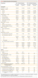
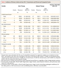
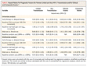

Original Article
Prevention of HIV-1 Infection with Early Antiretroviral Therapy
Myron S. Cohen, M.D., Ying Q. Chen, Ph.D., Marybeth McCauley, M.P.H., Theresa Gamble, Ph.D., Mina C. Hosseinipour, M.D., Nagalingeswaran Kumarasamy, M.B., B.S., James G. Hakim, M.D., Johnstone Kumwenda, F.R.C.P., Beatriz Grinsztejn, M.D., Jose H.S. Pilotto, M.D., Sheela V. Godbole, M.D., Sanjay Mehendale, M.D., Suwat Chariyalertsak, M.D., Breno R. Santos, M.D., Kenneth H. Mayer, M.D., Irving F. Hoffman, P.A., Susan H. Eshleman, M.D., Estelle Piwowar-Manning, M.T., Lei Wang, Ph.D., Joseph Makhema, F.R.C.P., Lisa A. Mills, M.D., Guy de Bruyn, M.B., B.Ch., Ian Sanne, M.B., B.Ch., Joseph Eron, M.D., Joel Gallant, M.D., Diane Havlir, M.D., Susan Swindells, M.B., B.S., Heather Ribaudo, Ph.D., Vanessa Elharrar, M.D., David Burns, M.D., Taha E. Taha, M.B., B.S., Karin Nielsen-Saines, M.D., David Celentano, Sc.D., Max Essex, D.V.M., and Thomas R. Fleming, Ph.D. for the HPTN 052 Study Team
N Engl J Med 2011; 365:493-505August 11, 2011DOI: 10.1056/NEJMoa1105243
- Abstract
- Article
- References
- Citing Articles (512)
- Letters
Background
Antiretroviral therapy that reduces viral replication could limit the transmission of human immunodeficiency virus type 1 (HIV-1) in serodiscordant couples.
Methods
In nine countries, we enrolled 1763 couples in which one partner was HIV-1–positive and the other was HIV-1–negative; 54% of the subjects were from Africa, and 50% of infected partners were men. HIV-1–infected subjects with CD4 counts between 350 and 550 cells per cubic millimeter were randomly assigned in a 1:1 ratio to receive antiretroviral therapy either immediately (early therapy) or after a decline in the CD4 count or the onset of HIV-1–related symptoms (delayed therapy). The primary prevention end point was linked HIV-1 transmission in HIV-1–negative partners. The primary clinical end point was the earliest occurrence of pulmonary tuberculosis, severe bacterial infection, a World Health Organization stage 4 event, or death.
Results
As of February 21, 2011, a total of 39 HIV-1 transmissions were observed (incidence rate, 1.2 per 100 person-years; 95% confidence interval [CI], 0.9 to 1.7); of these, 28 were virologically linked to the infected partner (incidence rate, 0.9 per 100 person-years, 95% CI, 0.6 to 1.3). Of the 28 linked transmissions, only 1 occurred in the early-therapy group (hazard ratio, 0.04; 95% CI, 0.01 to 0.27; P<0.001). Subjects receiving early therapy had fewer treatment end points (hazard ratio, 0.59; 95% CI, 0.40 to 0.88; P=0.01).
Conclusions
The early initiation of antiretroviral therapy reduced rates of sexual transmission of HIV-1 and clinical events, indicating both personal and public health benefits from such therapy. (Funded by the National Institute of Allergy and Infectious Diseases and others; HPTN 052 ClinicalTrials.gov number, NCT00074581.)
Media in This Article
Article Activity
Combination antiretroviral therapy decreases the replication of human immunodeficiency virus type 1 (HIV-1) and improves the survival of infected persons.1,2 Such therapy has been shown to reduce the amount of HIV-1 in genital secretions.3-5 Because the sexual transmission of HIV-1 from infected persons to their partners is strongly correlated with concentrations of HIV-1 in blood6 and in the genital tract,7 it has been hypothesized that antiretroviral therapy could reduce sexual transmission of the virus. Several observational studies have reported decreased acquisition of HIV-1 by sexual partners of patients receiving antiretroviral therapy.8-11 These results have been extrapolated to suggest that the use of early antiretroviral therapy could reduce the spread of the virus in a population.12 Some ecologic studies have shown a reduction in the incidence of new cases of HIV-1 after expanded use of antiretroviral therapy.13,14
The effect of the timing of the initiation of antiretroviral therapy on clinical and microbiologic outcomes has been controversial in evaluations of the benefit of therapy and of the associated short- and long-term complications and costs. For many years, antiretroviral therapy was delayed until a patient's CD4 count fell below 200 cells per cubic millimeter, which led to frequent opportunistic infections.15 Retrospective analyses of patients with HIV-1 infection who were treated in developed countries have suggested a benefit from early antiretroviral therapy,16-18 although the ability to control for bias in these studies has limits.
To evaluate the effect of combination antiretroviral therapy on the prevention of HIV-1 transmission to uninfected partners and on clinical events in infected persons, the HIV Prevention Trials Network (HPTN) conducted a multicontinent, randomized, controlled trial, called HPTN 052, to compare early versus delayed antiretroviral therapy for patients with HIV-1 infection who had CD4 counts between 350 and 550 cells per cubic millimeter and who were in a stable sexual relationship with a partner who was not infected.
Methods
Study Population
We enrolled HIV-1 serodiscordant couples at 13 sites in 9 countries (Gaborone, Botswana; Kisumu, Kenya; Lilongwe and Blantyre, Malawi; Johannesburg and Soweto, South Africa; Harare, Zimbabwe; Rio de Janeiro and Porto Alegre, Brazil; Pune and Chennai, India; Chiang Mai, Thailand; and Boston). A pilot phase started in April 2005, and enrollment took place from June 2007 through May 2010. Couples were required to have had a stable relationship for at least 3 months, to have reported three or more episodes of vaginal or anal intercourse during this time, and to be willing to disclose their HIV-1 status to their partner. Patients with HIV-1 infection were eligible if their CD4 count was between 350 and 550 cells per cubic millimeter and they had received no previous antiretroviral therapy except for short-term prevention of mother-to-child transmission of HIV-1. (Full criteria for inclusion and exclusion are provided in the Supplementary Appendix, available with the full text of this article at NEJM.org.)
The study protocol, which is also available at NEJM.org, was approved by at least one local institutional review board affiliated with each site, by boards affiliated with collaborating organizations, and by other local regulatory bodies when appropriate (for details, see the Supplementary Appendix). All study participants provided written informed consent in their local languages, or English, if preferred.
Study Oversight
The study was funded by the National Institute of Allergy and Infectious Diseases (NIAID) of the National Institutes of Health, which assumed all sponsor responsibilities through an investigational new drug application with the Food and Drug Administration (FDA). The antiviral agents that were used in the study were donated by pharmaceutical companies, which were not involved in the design or management of the study. All authors vouch for the completeness and accuracy of the data presented, as well as the fidelity of the report to the study protocol.
Study Design
HIV-1 serodiscordant couples were randomly assigned in a 1:1 ratio to either an early or delayed strategy for receipt of antiretroviral therapy. Permuted-block randomization was used with stratification according to site. In the early-therapy group, antiretroviral therapy was initiated in the partner with HIV-1 infection at enrollment. In the delayed-therapy group, therapy was initiated after two consecutive measurements in which the CD4 count was 250 cells per cubic millimeter or less or after the development of an illness related to the acquired immunodeficiency syndrome (AIDS). HIV-1–infected participants who had active tuberculosis were excluded, and isoniazid prophylaxis was available, according to local guidelines and practice standards.
After enrollment, study participants were asked to attend three monthly visits, which were followed by quarterly visits unless they became ill or needed additional antiretroviral medications. HIV-1–infected participants who were receiving antiretroviral therapy had one additional visit 2 weeks after starting therapy. HIV-1–uninfected partners were encouraged to return for all visits together for counseling on risk reduction and the use of condoms, for treatment of sexually transmitted infections, and for management of other medical conditions. Some HIV-1–infected participants received trimethoprim–sulfamethoxazole prophylaxis, according to local guidelines.
HIV-1–uninfected partners were tested for HIV-1 seroconversion on a quarterly basis. Samples from all seroconversion events were evaluated at a central laboratory, and results were reviewed by an independent HIV end-point committee. Partners with seroconversion were released from the study and referred to a prearranged local clinic for care.
After the initiation of antiretroviral therapy, virologic failure for HIV-1–infected participants was defined as two consecutive plasma HIV-1 RNA measurements of more than 1000 copies per milliliter at 16 weeks or later. Assessment for clinical signs and symptoms, laboratory measurements, interviews about sexual behavior, review of adherence to the antiretroviral regimen (including a self-reported questionnaire and pill counts), and adherence counseling were conducted at each visit. (Details regarding study procedures, including guidelines for adherence counseling, are provided in the Supplementary Appendix.)
Any woman who was pregnant at enrollment or became pregnant was provided antiretroviral therapy appropriate for use during pregnancy at the start of the second trimester. On the basis of the judgment of the site investigator, women in the delayed-therapy group discontinued antiretroviral therapy after delivery or when breast-feeding ended. A new partner could be enrolled with an HIV-1–infected participant if the original partner was released from the study and the new HIV-1–uninfected partner met all inclusion or exclusion criteria.
Antiretroviral Drugs
Study drugs included a combination of lamivudine and zidovudine (Combivir), efavirenz, atazanavir, nevirapine, tenofovir, lamivudine, zidovudine, didanosine, stavudine, a combination of lopinavir and ritonavir (Kaletra and Aluvia), ritonavir, and a combination of emtricitabine and tenofovir (Truvada). A prespecified combination of these drugs was provided to participants at monthly or quarterly visits. Sites could also use locally supplied, FDA-approved drugs if they could be purchased with nonstudy funds. For participants with virologic failure, specified second-line treatment regimens were provided.
Assessment of Linkage of Seroconversions
To assess whether seroconversions were linked, HIV-1 pol gene sequences were generated by population sequencing for study-partner pairs and for 10 additional HIV-infected local control subjects for each relevant site. Sequences were analyzed with the use of phylogenetic methods. The probability of linkage was also assessed with the use of Bayes' theorem to compare the genetic similarity of HIV-1 from partner pairs with the genetic similarity of HIV-1 from local control subjects. In some cases, HIV-1 samples from partner pairs were analyzed with the use of ultra-deep pyrosequencing of the gp41 region.19
Statistical Analysis
We determined that an enrollment of 1750 serodiscordant couples would provide a power of at least 87% to detect a 39% reduction in the incidence of HIV-1 transmission to uninfected partners in the early-therapy group, as compared with the delayed-therapy group (primary prevention end point). By the end of the trial, we anticipated a total of 188 transmission incidences, with cumulative incidence rates of 8.3% in the early-therapy group and 13.2% in the delayed-therapy group, for a total duration of 6.5 years, with an accrual period of 1.5 years and a 5% annual loss to follow-up. The sample size of 1750 would also provide a power of 92% to show that early initiation of antiretroviral therapy provided at least a 20% reduction in the rate of serious clinical events associated with HIV-1 infection, which included death, a World Health Organization (WHO) stage 4 event, or a severe bacterial infection or pulmonary tuberculosis (primary clinical end point). By the end of the trial, we anticipated a total of 234 such clinical events, with cumulative incidence rates of 8.7% in the early-therapy group and 18.0% in the delayed-therapy group.
The study was reviewed twice each year by an independent NIAID multinational data and safety monitoring board. To guide the board in its recommendations regarding trial continuation, a composite monitoring end point was developed to include the occurrence of either death or WHO stage 4 events (excluding esophageal candidiasis) in HIV-1–infected participants or the transmission of HIV-1 to uninfected partners, whichever occurred first in the discordant couple. These were the events that were considered to have the greatest clinical effect on both the HIV-1–infected participant and the uninfected partner. A Lan–DeMets implementation of an O'Brien–Fleming monitoring boundary was used to evaluate the interim data with respect to this composite end point.20,21 An early termination would be indicated if there were conclusive evidence to rule out a hazard ratio of 0.80 or more in the early-therapy group. Interim analyses were planned when approximately 25%, 50%, 75%, and 100% of a total 340 composite events were observed.
We used the Kaplan–Meier method to calculate event-free probabilities and person-year analysis for incidence rate for a given year. We also used Cox regression to estimate relative risks, which were expressed as hazard ratios and 95% confidence intervals, and to provide adjustment for potential prognostic factors, such as the infected participant's baseline CD4 count, baseline plasma HIV-1 RNA concentration, and sex. The same Cox analyses were performed on linked transmissions, any transmissions, clinical events, and composite monitoring events. We used chi-square tests to compare the frequencies of adverse events. A P value of less than 0.05 was considered to indicate statistical significance. The cutoff was adjusted for multiple comparisons in trial-monitoring boundaries.
Results
Study Participants
A total of 10,838 persons were screened in order to enroll 1763 HIV-1–serodiscordant couples; 886 couples were randomly assigned to the early-therapy group and 877 to the delayed-therapy group) (Figure 1Figure 1Enrollment and Outcomes., and the Supplementary Appendix). Twelve additional HIV-1–uninfected partners were enrolled as the result of a new relationship.
The majority of couples (97%) were heterosexual, and 94% were married; 50% of HIV-1–infected participants were men. The majority of participants (61%) were between 26 and 40 years of age. At enrollment, 1291 of HIV-1–infected participants (73%) and 1281 of HIV-1–uninfected partners (72%) reported having had at least one sexual encounter during the previous week. During the same period, 5% and 6%, respectively, reported having unprotected sex. The median CD4 counts for the HIV-1–infected partners were 442 cells per cubic millimeter in the early-therapy group and 428 cells per cubic millimeter in the delayed-therapy group. The median log10 plasma viral load was 4.4 in each study group. Participants in the two study groups were similar in educational status, self-reported sexual behavior, and rate of condom use (Table 1Table 1Baseline Characteristics of the Participants.).
At enrollment, less than 5% of participants had a sexually transmitted infection, and rates and types of infection were similar in the two study groups (see the Supplementary Appendix). A total of 84 of 449 HIV-uninfected male partners (19%) in the early-therapy group and 64 of 460 (14%) in the delayed-therapy group had been circumcised (P=0.05). New sexually transmitted infections were detected with similar frequency among participants in the early-therapy group and the delayed-therapy group during the study, with 36 and 34 syphilis infections, 6 and 8 gonorrhea infections, 10 and 11 chlamydia infections, and 22 and 19 trichomonas infections, respectively. Among HIV-1–infected participants, a mean of 96% of those in the early-therapy group and 95% of those in the delayed-therapy group reported 100% condom use during the study.
On April 28, 2011, the data and safety monitoring board recommended that the results of the study be released on the basis of data collection through February 21, 2011. At that time, 90% of couples remained enrolled in the study, with a median follow-up of 1.7 years; the total number of person-years of follow-up was 1585 in the early-therapy group and 1567 in the delayed-therapy group. The expected effect of early versus delayed antiretroviral therapy on log10 plasma viral load and CD4 counts in the HIV-1–infected participants was observed shortly after enrollment. By 3 months after randomization, 89% of the participants in the early-therapy group had a plasma viral load of less than 400 copies per milliliter, as compared with 9% in the delayed-therapy group. CD4 counts in the early-therapy group rose after the initiation of antiretroviral therapy, from a median of 442 cells per cubic millimeter at enrollment to 603 cells per cubic millimeter by 12 months, and the counts continued to rise throughout the follow-up period (see the Supplementary Appendix). A modest decline in CD4 counts was observed in the delayed-therapy group, from a median of 428 cells per cubic millimeter at enrollment to 399 cells per cubic millimeter by 12 months. A total of 21% of HIV-1–infected participants in the delayed-therapy group began taking antiretroviral therapy after a median of 42 months. Among all participants, 72% received a combination of zidovudine, lamivudine, and efavirenz (see the Supplementary Appendix). Adherence to the study regimen of at least 95% (as measured by pill count) was observed in 79% of participants in the early-therapy group and in 74% of those in the delayed-therapy group. Details with respect to regimens of antiretroviral therapy and pill counts are provided in the Supplementary Appendix.
Virologic failure was observed in 45 of 886 participants (5%) in the early-therapy group and in 5 of 184 participants in the delayed-therapy group who initiated antiretroviral therapy (3%) (P=0.23). Of all treated participants, 66% initiated a second-line regimen.
Primary Prevention Outcome
A total of 39 HIV-1 transmission events were observed (incidence rate, 1.2 per 100 person-years; 95% confidence interval [CI], 0.9 to 1.7), with 4 events in the early-therapy group (incidence rate, 0.3 per 100 person-years; 95% CI, 0.1 to 0.6) and 35 events in the delayed-therapy group (incidence rate, 2.2 per 100 person-years; 95% CI, 1.6 to 3.1), for a hazard ratio in the early-therapy group of 0.11 (95% CI, 0.04 to 0.32; P<0.001) (Table 2Table 2Incidence of Partner-Linked and Any HIV-1 Transmission and Clinical and Composite Events. and Figure 2Figure 2Kaplan–Meier Estimates for Partner-Linked and Any HIV-1 Transmission and for Clinical and Composite Monitoring Events.; also see the Supplementary Appendix for details regarding the incidence of transmission). Through viral genetic analysis, 28 transmissions were linked to the HIV-1–infected participant (incidence rate, 0.9 per 100 person-years; 95% CI, 0.6 to 1.3), with 1 transmission in the early-therapy group (incidence rate, 0.1 per 100 person-years; 95% CI, 0.0 to 0.4) and 27 transmissions in the delayed-therapy group (incidence rate, 1.7 per 100 person-years; 95% CI, 1.1 to 2.5), for a hazard ratio in the early-therapy group of 0.04 (95% CI, 0.01 to 0.27; P<0.001). The remaining 11 transmissions (3 in the early-therapy group and 8 in the delayed-therapy group) included 7 transmissions that were unlinked (3 in the early-therapy group and 4 in the delayed-therapy group), 3 transmissions that could not be classified on the basis of available data, and 1 transmission that has not yet been evaluated. The latter 4 transmissions were all in the delayed-therapy group.
The rate of transmission events in the delayed-therapy group was relatively constant across the first 3 years of study follow-up for both linked and any transmissions. Of the 28 HIV-1–infected participants who had linked transmission to a partner, 17 (61%) had a CD4 count of more than 350 cells per cubic millimeter at the study visit before the detection of linked HIV-1 transmission. The single linked transmission in the early-therapy group was identified 3 months after the HIV-1–infected participant initiated treatment; all linked transmissions in the delayed-therapy group occurred while the HIV-1–infected participant was not receiving antiretroviral therapy. The Kaplan–Meier curves for both linked and any transmissions show immediate and sustained reduction in the risk of HIV-1 transmission after the initiation of antiretroviral therapy (Figure 2).
Of the 28 linked transmissions, 23 (82%) occurred at African sites. HIV-1–infected women were the source of infection in 18 of 27 (67%) linked transmissions in the delayed-therapy group, and a man was the source of the single transmission in the early-therapy group. Women were the HIV-1–infected participant in 58% of African couples. A high viral load in blood plasma of infected participants at baseline increased the risk of HIV-1 transmission (Table 3Table 3Hazard Ratios for Prognostic Factors for Partner-Linked and Any HIV-1 Transmission and for Clinical and Composite Events.). The median plasma viral load in 27 participants at the visit most proximal to the detection of HIV-1 transmission was 4.9 log10 (range, 2.6 to 5.8). Conversely, self-reported 100% condom use at baseline was associated with a reduced risk of HIV-1 transmission. In the stratified multivariate analysis according to site, the adjusted hazard ratio for linked transmission in the early-therapy group was 0.04 (95% CI, 0.01 to 0.28; P<0.001) (Table 3).
Primary Treatment Outcome
A total of 105 treatment end points, as measured by the first serious HIV-1–related clinical event or death, were observed in HIV-1–infected participants: 40 in the early-therapy group and 65 in the delayed-therapy group (hazard ratio, 0.59; 95% CI, 0.40 to 0.88; P=0.01 (Table 2, and the Supplementary Appendix). Of such clinical events, 44% occurred in Asia and 45% in Africa. The baseline plasma viral load was an important predictor of clinical events, as assessed on multivariate analysis (Table 3). In the stratified multivariate model, the adjusted hazard ratio for clinical events in the early-therapy group was 0.59 (95% CI, 0.40 to 0.89). The difference in the rate of clinical events appeared to be driven mainly by the incidence of extrapulmonary tuberculosis, which developed in 3 participants in the early-therapy group and 17 in the delayed-therapy group (P=0.002); of these cases, 55% were observed in India. Pulmonary tuberculosis was observed in 13 participants in the early-therapy group and 15 in the delayed-therapy group; isoniazid prophylaxis was administered to only 4% of participants in each study group. There were 23 deaths during the course of the study, 10 in the early-therapy group and 13 in the delayed-therapy group (hazard ratio, 0.77; 95% CI, 0.34 to 1.76; P=0.27) (for details regarding causes of death, see the Supplementary Appendix).
Composite Monitoring Events
Among 102 composite monitoring events, there were 39 transmission events in which the sexual partner acquired HIV-1. Among HIV-1–infected participants, 21 died and 42 had WHO stage 4 clinical events. Of these monitoring events, 58 (57%) occurred in Africa, 31 (30%) in Asia, and 13 (13%) in the Americas. Overall, 23 monitoring events were observed in the early-therapy group and 79 in the delayed-therapy group (hazard ratio, 0.28; 95% CI, 0.18 to 0.45; P<0.001) (Table 2). According to the monitoring guidelines that were based on the Lan–DeMets implementation of O'Brien–Fleming boundaries, the computed z statistic was 4.43, which exceeded the prespecified cutoff of 3.93 and thus ruled out the hypothesis that early therapy would provide at most a 20% reduction in the risk of the composite monitoring end point.
Adverse Events
After the exclusion of primary clinical end points (death, WHO stage 4 events, pulmonary tuberculosis, and severe bacterial infections), 246 HIV-1–infected participants had one or more severe or life-threatening adverse events (grade 3 or 4): 127 of 886 (14%) were in the early-therapy group and 119 of 877 (14%) were in the delayed-therapy group (P=0.64). The most frequently reported adverse events included infections, psychiatric and nervous system disorders, metabolism and nutrition disorders, and gastrointestinal disorders (for details, see the Supplementary Appendix). Grade 3 or 4 laboratory abnormalities during study follow-up occurred in 242 participants (27%) in the early-therapy group and 161 participants (18%) in the delayed-therapy group (P<0.001). The most frequent laboratory abnormalities included neutropenia, abnormal phosphate level, and total bilirubin elevations (with bilirubin elevations observed primarily in participants taking atazanavir as part of their drug regimen) (see the Supplementary Appendix).
Discussion
In this study involving 1763 serodiscordant couples in which HIV-1–infected participants had a CD4 count of 350 to 550 cells per cubic millimeter, there was a relative reduction of 96% in the number of linked HIV-1 transmissions resulting from the early initiation of antiretroviral therapy, as compared with delayed therapy. There was a relative reduction of 89% in the total number of HIV-1 transmissions resulting from the early initiation of antiretroviral therapy, regardless of viral linkage with the infected partner. The sustained suppression of HIV-1 in genital secretions resulting from antiretroviral therapy is the most likely mechanism for the prevention of HIV-1 transmission that we observed.4,5
The majority of HIV-1 transmissions (82%) were observed in Africa. This result reflects not only the large number of study participants who were enrolled in this region (54%) but also other factors that increase the probability of HIV-1 transmission among African couples. Several groups have reported higher viral loads in patients with HIV-1 infection in sub-Saharan Africa than in patients in developed countries.22,23 Clade C HIV-1, the dominant type in southern Africa, may have other transmission advantages as well.24 More frequent sexual encounters and limited condom use would also favor increased HIV transmission among African couples, possibilities that are being evaluated.
Although HIV-1 transmission from patients with acute and early HIV-1 infection and advanced HIV-1 disease and the acquired immunodeficiency syndrome (AIDS)25 appears to be most efficient,26 the results from this and other studies9 emphasize that HIV-1 can be transmitted from infected persons who are asymptomatic or minimally symptomatic and who have high CD4 counts. Since most persons with established HIV-1 infection fall into the latter category, such transmission, albeit not maximally efficient, must help fuel the spread of HIV-1.
Early antiretroviral therapy was associated with a relative reduction of 41% in the number of HIV-1–related clinical events, which suggests a clinical benefit for the initiation of antiretroviral therapy when a person has a CD4 count of 350 to 550 cells per cubic millimeter, as compared with therapy that is delayed until the CD4 count falls into the range of 200 to 250 cells per cubic millimeter. In contrast to a recent trial15 comparing the effect of the initiation of therapy in patients with a CD4 count ranging from 200 to 350 cells per cubic millimeter with those with a count below 200 cells per cubic millimeter, we did not detect a significant between-group difference in overall mortality. Despite our relatively short follow-up period, the magnitude of the clinical effect we observed was similar to that seen in observational studies conducted in the developed world.16-18 The difference between the early-therapy group and the delayed-therapy group was driven largely by the diagnosis of extrapulmonary tuberculosis, with the majority of these cases occurring in India. The use of isoniazid prophylaxis, although recommended by the WHO for patients with HIV-1 infection,27 was infrequently prescribed for participants in this study. In addition, data from observational studies focusing on HIV-1–related and non–HIV-1–related clinical events and CD4 counts have led to the hypothesis that delayed antiretroviral therapy could ultimately lead to an increased rate of clinical events, regardless of subsequent therapy.28 However, we cannot evaluate this possibility without a longer period of follow-up.
We noted more adverse events in the early-therapy group than in the delayed-therapy group, including more adverse events related to antiretroviral therapy. The clinical importance of the laboratory abnormalities that were responsible for this difference is unclear. Further examination of these data and additional longitudinal follow-up will be important to better understand the clinical and public health benefits of early antiretroviral therapy, as compared with drug costs and side effects.
Our study has several limitations. In order to examine the effects of antiretroviral therapy on HIV-1 transmission, we studied stable HIV-1–discordant couples, who may not be entirely representative of the general population.29 We provided ongoing couples counseling and condoms, which probably contributed to the low incidence of HIV-1 infection, as previously reported.30 Some participants received trimethoprim–sulfamethoxazole and isoniazid prophylaxis at the discretion of the investigators, which could have reduced the degree of benefit observed with early antiretroviral therapy.31
In conclusion, the biologic plausibility of the use of antiretroviral therapy for the prevention of HIV-1 infection has been carefully examined during the past two decades.32 The idea of HIV-1 treatment as prevention has garnered tremendous interest and hope33 and inspired a series of population-level HIV-1 treatment-as-prevention studies that are now in the pilot or planning stages.34,35 Such interventions are based on the hypothesis that the use of antiretroviral therapy reliably prevents HIV-1 transmission over an extended period of time. In this trial, we found that early antiretroviral therapy had a clinical benefit for both HIV-1–infected persons and their uninfected sexual partners. These results support the use of antiretroviral treatment as a part of a public health strategy to reduce the spread of HIV-1 infection.
Supported by the HIV Prevention Trials Network (HPTN) and by grants (UM1-AI068619 and U01-AI068619; UM1-AI068613 and U01-AI068613, to the HPTN Network Laboratory; and UM1-AI068617 and U01-AI068617, to the HPTN Statistical and Data Management Center) from the National Institute of Allergy and Infectious Diseases. Study drugs were donated by Abbott Laboratories, Boehringer Ingelheim, Bristol-Myers Squibb, Gilead Sciences, GlaxoSmithKline/ViiV Healthcare, and Merck.
Dr. Hosseinipour reports receiving lecture fees from Abbott Virology; Dr. Eshleman, consulting fees from Roche Diagnostics, lecture fees and samples or laboratory reagents from Abbott Diagnostics and Celera Diagnostics, and lecture fees from Monogram Biosciences; Dr. Mills, grant support from GlaxoSmithKline; Dr. de Bruyn, travel support from Sanofi Pasteur; Dr. Eron, consulting fees and grant support from Merck, Bristol-Myers Squibb, GlaxoSmithKline, and ViiV Healthcare, consulting fees from Gilead Sciences and Tibotec, and lecture fees from Bristol-Myers Squibb and Roche; Dr. Gallant, consulting fees from Abbott Laboratories, Bristol-Myers Squibb, Gilead Sciences, Merck, Tibotec Therapeutics, ViiV Healthcare, GlaxoSmithKline, Pfizer, Sangamo BioSciences, and Koronis, grant support and travel support from Gilead Sciences, and lecture fees from Monogram Biosciences; Dr. Havlir, study drug from Abbott; and Dr. Swindells, consulting fees from Gilead Sciences and Abbott Diagnostics and grant support from Pfizer, GlaxoSmithKline, and Bristol-Myers Squibb.
Disclosure forms provided by the authors are available with the full text of this article at NEJM.org.
No other potential conflict of interest relevant to this article was reported.
This article (10.1056/NEJMoa1105243) was published on July 18, 2011, at NEJM.org.
We thank Drs. Wafaa El-Sadr, Quarraisha Abdool Karim, and Ward Cates for their help in the preparation of the manuscript.
Source Information
The authors' affiliations are listed in the Appendix.
Address reprint requests to Dr. Cohen at the University of North Carolina at Chapel Hill, Institute for Global Health and Infectious Diseases, Suite 2115, Bioinformatics Bldg., 130 Mason Farm Rd., CB 7030, Chapel Hill, NC 27599, or at mscohen@med.unc.edu.
Other members of the HIV Prevention Trials Network (HPTN) 052 Study Team are listed in the Supplementary Appendix, available at NEJM.org.
Appendix
The authors' affiliations are as follows: the University of North Carolina School of Medicine, Chapel Hill (M.S.C., M.C.H., I.F.H., J.E.); the Vaccine and Infectious Disease Division, Fred Hutchinson Cancer Research Center (Y.Q.C., L.W.), and the University of Washington (T.R.F.) — both in Seattle; Family Health International, Arlington, VA (M.M.), and Durham, NC (T.G.); the UNC Project, Lilongwe (M.C.H.) and the College of Medicine–Johns Hopkins Project, Blantyre (J.K.) — both in Malawi; the Y.R. Gaitonade Center for AIDS Research and Education, Chennai (N.K.), and the National AIDS Research Institute, Pune (S.M., S.V.G.) — both in India; University of Zimbabwe, Harare (J.G.H.); Instituto de Pesquisa Clinica Evandro Chagas, Fiocruz (B.G.), and Hospital Geral de Nova Iguacu and Laboratorio de AIDS e Imunologia Molecular-IOC/Fiocruz (J.H.S.P.) — both in Rio de Janeiro; Research Institute for Health Sciences, Chiang Mai University, Chiang Mai, Thailand (S.C.); Hospital Nossa Senhora da Conceição, Porto Alegre, Brazil (B.R.S.); Fenway Health (K.H.M.) and Harvard School of Public Health (H.R., M.E.) — both in Boston; Johns Hopkins University School of Medicine (S.H.E., E.P.-M., J.G.) and Johns Hopkins Bloomberg School of Public Health (T.E.T., D.C.) — both in Baltimore; Botswana Harvard AIDS Institute, Gaborone (J.M.); Centers for Disease Control and Prevention (CDC) Division of HIV/AIDS Prevention, Kenya Medical Research Institute–CDC Research and Public Health Collaboration HIV Research Branch, Kisumu (L.A.M.); Perinatal HIV Research Unit (G.B.) and Department of Medicine (I.S.), University of the Witwatersrand, Johannesburg; University of California, San Francisco, San Francisco (D.H.); University of Nebraska Medical Center, Omaha (S.S.); Division of AIDS, National Institute of Allergy and Infectious Diseases, National Institutes of Health, Bethesda, MD (V.E., D.B.); and David Geffen UCLA School of Medicine, Los Angeles (K.N.-S.).
References
1
Ray M ,Logan R ,Sterne JA , et al. The effect of combined antiretroviral therapy on the overall mortality of HIV-infected individuals. AIDS 2010;24:123-137
CrossRef | Web of Science | Medline2
Braitstein P ,Brinkhof MW ,Dabis F , et al. Mortality of HIV-1-infected patients in the first year of antiretroviral therapy: comparison between low-income and high-income countries. Lancet 2006;367:817-824[Erratum, Lancet 2006;367:1902.]
CrossRef | Web of Science | Medline3
Cohen MS ,Gay CL . Treatment to prevent transmission of HIV-1. Clin Infect Dis 2010;50:Suppl 3:S85-S95
CrossRef | Web of Science | Medline4
Graham SM ,Holte SE ,Peshu NM , et al. Initiation of antiretroviral therapy leads to a rapid decline in cervical and vaginal HIV-1 shedding. AIDS 2007;21:501-507
CrossRef | Web of Science | Medline5
Vernazza PL ,Troiani L ,Flepp MJ , et al. Potent antiretroviral treatment of HIV infection results in suppression of the seminal shedding of HIV. AIDS 2000;14:117-121
CrossRef | Web of Science | Medline6
Quinn TC ,Wawer MJ ,Sewankambo N , et al. Viral load and heterosexual transmission of human immunodeficiency virus type 1. N Engl J Med 2000;342:921-929
Free Full Text | Web of Science | Medline7
Baeten JM ,Kahle E ,Lingappa JR , et al. Genital HIV-1 RNA predicts risk of heterosexual HIV-1 transmission. Sci Transl Med 2011;3:77ra29-77ra29
CrossRef | Web of Science8
Bunnell R ,Ekwaru JP ,Solberg P , et al. Changes in sexual behavior and risk of HIV transmission after antiretroviral therapy and prevention interventions in rural Uganda. AIDS 2006;20:85-92
CrossRef | Web of Science | Medline9
Donnell D ,Baeten JM ,Kiarie J , et al. Heterosexual HIV-1 transmission after initiation of antiretroviral therapy: a prospective cohort analysis. Lancet 2010;375:2092-2098
CrossRef | Web of Science | Medline10
Del Romero J ,Castilla J ,Hernando V ,Rodriguez C ,Garcia S . Combined antiretroviral treatment and heterosexual transmission of HIV-1: cross sectional and prospective cohort study. BMJ 2010;340:c2205-c2205
CrossRef | Web of Science | Medline11
Reynolds SJ ,Makumbi F ,Nakigozi G , et al. HIV-1 transmission among HIV-1 discordant couples before and after the introduction of antiretroviral therapy. AIDS 2011;25:473-477
CrossRef | Web of Science | Medline12
Granich RM ,Gilks CF ,Dye C ,De Cock KM ,Williams BG . Universal voluntary HIV testing with immediate antiretroviral therapy as a strategy for elimination of HIV transmission: a mathematical model. Lancet 2009;373:48-57
CrossRef | Web of Science | Medline13
Das M ,Chu PL ,Santos GM , et al. Decreases in community viral load are accompanied by reductions in new HIV infections in San Francisco. PLoS ONE 2010;5:e11068-e11068
CrossRef | Web of Science | Medline14
Montaner JS ,Lima VD ,Barrios R , et al. Association of highly active antiretroviral therapy coverage, population viral load, and yearly new HIV diagnoses in British Columbia, Canada: a population-based study. Lancet 2010;376:532-539
CrossRef | Web of Science | Medline15
Severe P ,Juste MA ,Ambroise A , et al. Early versus standard antiretroviral therapy for HIV-infected adults in Haiti. N Engl J Med 2010;363:257-265
Free Full Text | Web of Science | Medline16
Kitahata MM ,Gange SJ ,Abraham AG , et al. Effect of early versus deferred antiretroviral therapy for HIV on survival. N Engl J Med 2009;360:1815-1826
Free Full Text | Web of Science | Medline17
Sterne JA ,May M ,Costagliola D , et al. Timing of initiation of antiretroviral therapy in AIDS-free HIV-1-infected patients: a collaborative analysis of 18 HIV cohort studies. Lancet 2009;373:1352-1363
CrossRef | Web of Science | Medline18
Cain LE ,Logan R ,Robins JM , et al. When to initiate combined antiretroviral therapy to reduce mortality and AIDS-defining illness in HIV-infected persons in developed countries: an observational study. Ann Intern Med 2011;154:509-515
Web of Science | Medline19
Eshleman SH, Hudelson SE, Redd AD, et al. Analysis of genetic linkage of HIV from couples enrolled in the HIV Prevention Trials Network 052 trial. J Infect Dis (in press).
20
DeMets DL ,Lan KK . Interim analysis: the alpha spending function approach. Stat Med 1994;13:1341-1352
CrossRef | Web of Science | Medline21
O'Brien PC ,Fleming TR . A multiple testing procedure for clinical trials. Biometrics 1979;35:549-556
CrossRef | Web of Science | Medline22
Dyer JR ,Kazembe P ,Vernazza PL , et al. High levels of human immunodeficiency virus type 1 in blood and semen of seropositive men in sub-Saharan Africa. J Infect Dis 1998;177:1742-1746
CrossRef | Web of Science | Medline23
Novitsky V, Ndung'u T, Wang R, et al. Extended high viremics: a substantial fraction of individuals maintain high plasma viral RNA levels after acute HIV-1 subtype C infection. AIDS 2011 April 18 (Epub ahead of print).
24
Ping L-H ,Nelson J ,Hoffman I , et al. Characterization of V3 sequence heterogeneity in subtype C human immunodeficiency virus type 1 isolates from Malawi: underrepresentation of X4 variants. J Virol 1999;73:6271-6281
Web of Science | Medline25
Wawer MJ ,Gray RH ,Sewankambo NK , et al. Rates of HIV-1 transmission per coital act, by stage of HIV-1 infection, in Rakai, Uganda. J Infect Dis 2005;191:1403-1409
CrossRef | Web of Science | Medline26
Powers KA ,Poole C ,Pettifor AE ,Cohen MS . Rethinking the heterosexual infectivity of HIV-1: a systematic review and meta-analysis. Lancet Infect Dis 2008;8:553-563
CrossRef | Web of Science | Medline27
Guidelines for intensified tuberculosis case finding and isoniazid preventive therapy for people living with HIV in resource constrained settings. Geneva: World Health Organization, 2011. (http://whqlibdoc.who.int/publications/2011/9789241500708_eng.pdf.)
28
Baker JV ,Peng G ,Rapkin J , et al. CD4+ count and risk of non-AIDS diseases following initial treatment for HIV infection. AIDS 2008;22:841-848
CrossRef | Web of Science | Medline29
Eyawo O ,de Walque D ,Ford N ,Gakii G ,Lester RT ,Mills EJ . HIV status in discordant couples in sub-Saharan Africa: a systematic review and meta-analysis. Lancet Infect Dis 2010;10:770-777
CrossRef | Web of Science | Medline30
Celum C ,Wald A ,Lingappa JR , et al. Acyclovir and transmission of HIV-1 from persons infected with HIV-1 and HSV-2. N Engl J Med 2010;362:427-439
Free Full Text | Web of Science | Medline31
Lowrance D ,Makombe S ,Harries A , et al. Lower early mortality rates among patients receiving antiretroviral treatment at clinics offering cotrimoxazole prophylaxis in Malawi. J Acquir Immune Defic Syndr 2007;46:56-61
Web of Science | Medline32
Cohen MS ,Gay C ,Kashuba AD ,Blower S ,Paxton L . Narrative review: antiretroviral therapy to prevent the sexual transmission of HIV-1. Ann Intern Med 2007;146:591-601
Web of Science | Medline33
Dieffenbach CW ,Fauci AS . Universal voluntary testing and treatment for prevention of HIV transmission. JAMA 2009;301:2380-2382
CrossRef | Web of Science | Medline34
Burns DN ,Dieffenbach CW ,Vermund SH . Rethinking prevention of HIV type 1 infection. Clin Infect Dis 2010;51:725-731[Erratum, Clin Infect Dis 2010;51:995.]
CrossRef | Web of Science | Medline35
Smith K ,Powers KA ,Kashuba AD ,Cohen MS . HIV-1 treatment as prevention: the good, the bad, and the challenges. Curr Opin HIV AIDS 2011;6:315-325
Web of Science
Citing Articles
1
R. K. Gupta, M. A. Wainberg, F. Brun-Vezinet, J. M. Gatell, J. Albert, A. Sonnerborg, J. B. Nachega. (2013) Oral Antiretroviral Drugs as Public Health Tools for HIV Prevention: Global Implications for Adherence, Drug Resistance, and the Success of HIV Treatment Programs. Journal of Infectious Diseases 207:suppl 2, S101-S106
CrossRef2
N. Sood, Z. Wagner, A. Jaycocks, E. Drabo, R. Vardavas. (2013) Test-and-Treat in Los Angeles: A Mathematical Model of the Effects of Test-and-Treat for the Population of Men Who Have Sex With Men in Los Angeles County. Clinical Infectious Diseases 56:12, 1789-1796
CrossRef3
H. Gatanaga, T. Hayashida, J. Tanuma, S. Oka. (2013) Prophylactic Effect of Antiretroviral Therapy on Hepatitis B Virus Infection. Clinical Infectious Diseases 56:12, 1812-1819
CrossRef4
A. B. Jena. (2013) Editorial Commentary: Balancing Disease Eradication With the Emergence of Multidrug-Resistant HIV in Test-and-Treat Policies. Clinical Infectious Diseases 56:12, 1797-1799
CrossRef5
Thorsten Demberg, Egidio Brocca-Cofano, Seraphin Kuate, Stanley Aladi, Diego A. Vargas-Inchaustegui, David Venzon, Irene Kalisz, V.S. Kalyanaraman, Eun Mi Lee, Ranajit Pal, Janet DiPasquale, Ruth M. Ruprecht, David C. Montefiori, Indresh Srivastava, Susan W. Barnett, Marjorie Robert-Guroff. (2013) Impact of antibody quality and anamnestic response on viremia control post-challenge in a combined Tat/Env vaccine regimen in rhesus macaques. Virology 440:2, 210-221
CrossRef6
Sten H. Vermund, Richard J. Hayes. (2013) Combination Prevention: New Hope for Stopping the Epidemic. Current HIV/AIDS Reports 10:2, 169-186
CrossRef7
Catherine Hankins. (2013) Overview of the Current State of the Epidemic. Current HIV/AIDS Reports 10:2, 113-123
CrossRef8
Jared M. Baeten, Robert Grant. (2013) Use of Antiretrovirals for HIV Prevention: What Do We Know and What Don’t We Know?. Current HIV/AIDS Reports 10:2, 142-151
CrossRef9
Benjamin H. Chi, Jeffrey S. A. Stringer, Dhayendre Moodley. (2013) Antiretroviral Drug Regimens to Prevent Mother-To-Child Transmission of HIV: A Review of Scientific, Program, and Policy Advances for Sub-Saharan Africa. Current HIV/AIDS Reports 10:2, 124-133
CrossRef10
Peter Cherutich, Rebecca Bunnell, Jonathan Mermin. (2013) HIV Testing: Current Practice and Future Directions. Current HIV/AIDS Reports 10:2, 134-141
CrossRef11
Zunyou Wu, Cynthia X. Shi, Roger Detels. (2013) Addressing Injecting Drug Use in Asia and Eastern Europe. Current HIV/AIDS Reports 10:2, 187-193
CrossRef12
Sonali P. Kulkarni, Kavita R. Shah, Karthik V. Sarma, Anish P. Mahajan. (2013) Clinical Uncertainties, Health Service Challenges, and Ethical Complexities of HIV “Test-and-Treat”: A Systematic Review. American Journal of Public Health 103:6, e14-e23
CrossRef13
Moupali Das, H. F. Raymond, Priscilla Chu, Israel Nieves-Rivera, Mark Pandori, Brian Louie, Leah Rauch, Susan Scheer, Eric Vittinghoff, Willi McFarland. (2013) Measuring the Unknown. JAIDS Journal of Acquired Immune Deficiency Syndromes 63:2, e84-e86
CrossRef14
Qiang Xia, Ellen W. Wiewel, Lucia V. Torian. (2013) Revisiting the Methodology of Measuring HIV Community Viral Load. JAIDS Journal of Acquired Immune Deficiency Syndromes 63:2, e82-e84
CrossRef15
April D. Kimmel, Macarthur Charles, Marie-Marcelle Deschamps, Patrice Severe, Alison M. Edwards, Warren D. Johnson, Daniel W. Fitzgerald, Jean W. Pape, Bruce R. Schackman. (2013) Lives Saved by Expanding HIV Treatment Availability in Resource-Limited Settings. JAIDS Journal of Acquired Immune Deficiency Syndromes 63:2, e40-e48
CrossRef16
James W. Curran, James A. Hoxie. (2013) Translating Social and Behavioral Science Research to the AIDS Epidemic. JAIDS Journal of Acquired Immune Deficiency Syndromes 63, S4-S5
CrossRef17
Sten H. Vermund, José A. Tique, Holly M. Cassell, Megan E. Pask, Philip J. Ciampa, Carolyn M. Audet. (2013) Translation of Biomedical Prevention Strategies for HIV. JAIDS Journal of Acquired Immune Deficiency Syndromes 63, S12-S25
CrossRef18
Dianne M. Rausch, Cynthia I. Grossman, Emily J. Erbelding. (2013) Integrating Behavioral and Biomedical Research in HIV Interventions. JAIDS Journal of Acquired Immune Deficiency Syndromes 63, S6-S11
CrossRef19
J. D. A. Ndawinz, B. Chaix, S. Koulla-Shiro, E. Delaporte, B. Okouda, A. Abanda, S. Tchomthe, E. Mboui, D. Costagliola, V. Supervie. (2013) Factors associated with late antiretroviral therapy initiation in Cameroon: a representative multilevel analysis. Journal of Antimicrobial Chemotherapy 68:6, 1388-1399
CrossRef20
Kerry L. Dierberg, Richard E. Chaisson. (2013) Human Immunodeficiency Virus–Associated Tuberculosis. Clinics in Chest Medicine 34:2, 217-228
CrossRef21
R DiFrancesco, K Tooley, S L Rosenkranz, S Siminski, C R Taylor, P Pande, G D Morse. (2013) Clinical Pharmacology Quality Assurance for HIV and Related Infectious Diseases Research. Clinical Pharmacology & Therapeutics 93:6, 479-482
CrossRef22
Hongjing Yan, Haitao Yang, Jianjun Li, Chongyi Wei, Jinshui Xu, Xiaoyan Liu, Xiaoqin Xu, Willi McFarland. (2013) Emerging Disparity in HIV/AIDS Disease Progression and Mortality for Men Who Have Sex with Men, Jiangsu Province, China. AIDS and Behavior
CrossRef23
Lindsay B. Avery, Melissa A. Zarr, Rahul P. Bakshi, Robert F. Siliciano, Craig W. Hendrix. (2013) Increasing Extracellular Protein Concentration Reduces Intracellular Antiretroviral Drug Concentration and Antiviral Effect. AIDS Research and Human Retroviruses130522065303009
CrossRef24
Alexander C. Tsai, David R. Bangsberg, Susan M. Kegeles, Ingrid T. Katz, Jessica E. Haberer, Conrad Muzoora, Elias Kumbakumba, Peter W. Hunt, Jeffrey N. Martin, Sheri D. Weiser. (2013) Internalized Stigma, Social Distance, and Disclosure of HIV Seropositivity in Rural Uganda. Annals of Behavioral Medicine
CrossRef25
, Panagiotis Vagenas, Kaysia T. Ludford, Pedro Gonzales, Jesus Peinado, Cesar Cabezas, Fernando Gonzales, Javier R. Lama, Jorge Sanchez, Frederick L. Altice. (2013) Being Unaware of Being HIV-Infected is Associated with Alcohol Use Disorders and High-Risk Sexual Behaviors Among Men Who have Sex with Men in Peru. AIDS and Behavior
CrossRef26
Alex Carballo-Diéguez, Iván C. Balán, Curtis Dolezal, María A. Pando, Rubén Marone, Victoria Barreda, María Mercedes Ávila. (2013) HIV testing practices among men who have sex with men in Buenos Aires, Argentina. AIDS Care1-9
CrossRef27
Amy Medley, Rachel Baggaley, Pamela Bachanas, Myron Cohen, Nathan Shaffer, Ying-Ru Lo. (2013) Maximizing the impact of HIV prevention efforts: Interventions for couples. AIDS Care1-12
CrossRef28
Ann M. Dennis, Wendy Murillo, Flor de Maria Hernandez, Maria Elena Guardado, Ana Isabel Nieto, Ivette Lorenzana de Rivera, Joseph J. Eron, Gabriela Paz-Bailey. (2013) Social Network–Based Recruitment Successfully Reveals HIV-1 Transmission Networks Among High-Risk Individuals in El Salvador. JAIDS Journal of Acquired Immune Deficiency Syndromes 63:1, 135-141
CrossRef29
Edward J. Mills, Anna Funk, Steve Kanters, Esther Kawuma, Curtis Cooper, Barbara Mukasa, Mary Odit, Yvonne Karamagi, Daniel Mwehire, Jean Nachega, Sanni Yaya, Amber Featherstone, Nathan Ford. (2013) Long-Term Health Care Interruptions Among HIV-Positive Patients in Uganda. JAIDS Journal of Acquired Immune Deficiency Syndromes 63:1, e23-e27
CrossRef30
Andrew Mujugira, Renee Heffron, Connie Celum, Nelly Mugo, Edith Nakku-Joloba, Jared M. Baeten. (2013) Fertility Intentions and Interest in Early Antiretroviral Therapy Among East African HIV-1–Infected Individuals in Serodiscordant Partnerships. JAIDS Journal of Acquired Immune Deficiency Syndromes 63:1, e33-e35
CrossRef31
L. Hocqueloux, V. Avettand-Fenoel, S. Jacquot, T. Prazuck, E. Legac, A. Melard, M. Niang, C. Mille, G. Le Moal, J.-P. Viard, C. Rouzioux, . (2013) Long-term antiretroviral therapy initiated during primary HIV-1 infection is key to achieving both low HIV reservoirs and normal T cell counts. Journal of Antimicrobial Chemotherapy 68:5, 1169-1178
CrossRef32
Stefan Baral, Andrew Scheibe, Patrick Sullivan, Gift Trapence, Andrew Lambert, Linda-Gail Bekker, Chris Beyrer. (2013) Assessing Priorities for Combination HIV Prevention Research for Men Who have Sex with Men (MSM) in Africa. AIDS and Behavior 17:S1, 60-69
CrossRef33
Augusto Enrico Semprini, Maurizio Macaluso, Lital Hollander, Alessandra Vucetich, Ann Duerr, Gil Mor, Marina Ravizza, Denise J. Jamieson. (2013) Safe conception for HIV-discordant couples: insemination with processed semen from the HIV-infected partner. American Journal of Obstetrics and Gynecology 208:5, 402.e1-402.e9
CrossRef34
James Jansson, David P. Wilson, Andrew Carr, Kathy Petoumenos, Mark A. Boyd. (2013) Currently available medications in resource-rich settings may not be sufficient for lifelong treatment of HIV. AIDS 27:8, 1245-1251
CrossRef35
Faiza Yasin, Altanchimeg Delegchoimbol, Naranchimeg Jamiyanjamts, Tugsdelger Sovd, Krystal Mason, Stefan Baral. (2013) A Cross-Sectional Evaluation of Correlates of HIV Testing Practices Among Men Who Have Sex with Men (MSM) in Mongolia. AIDS and Behavior 17:4, 1378-1385
CrossRef36
Susan M. Graham, Peter Mugo, Evanson Gichuru, Alexander Thiong’o, Michael Macharia, Haile S. Okuku, Elise Elst, Matthew A. Price, Nicholas Muraguri, Eduard J. Sanders. (2013) Adherence to Antiretroviral Therapy and Clinical Outcomes Among Young Adults Reporting High-Risk Sexual Behavior, Including Men Who Have Sex with Men, in Coastal Kenya. AIDS and Behavior 17:4, 1255-1265
CrossRef37
R Douglas Bruce, David E Moody, Frederick L Altice, Marc N Gourevitch, Gerald H Friedland. (2013) A review of pharmacological interactions between HIV or hepatitis C virus medications and opioid agonist therapy: implications and management for clinical practice. Expert Review of Clinical Pharmacology 6:3, 249-269
CrossRef38
Eli Kern, Stéphane Verguet, Krista Yuhas, Frederick H. Odhiambo, James G. Kahn, Judd Walson. (2013) Provision of bednets and water filters to delay HIV-1 progression: cost-effectiveness analysis of a Kenyan multisite study. Tropical Medicine & International Healthn/a-n/a
CrossRef39
Erika G. Martin, Patricia Strach, Bruce R. Schackman. (2013) The State(s) of Health: Federalism and the Implementation of Health Reform in the Context of HIV Care. Public Administration Reviewn/a-n/a
CrossRef40
Connie Celum, Jared M Baeten. (2013) Serodiscordancy and HIV prevention in sub-Saharan Africa. The Lancet 381:9877, 1519-1521
CrossRef41
Steve E Bellan, Kathryn J Fiorella, Dessalegn Y Melesse, Wayne M Getz, Brian G Williams, Jonathan Dushoff. (2013) Extra-couple HIV transmission in sub-Saharan Africa: a mathematical modelling study of survey data. The Lancet 381:9877, 1561-1569
CrossRef42
Manya Magnus, Jane Herwehe, Michelli Murtaza-Rossini, Petera Reine, Damien Cuffie, DeAnn Gruber, Michael Kaiser. (2013) Linking and Retaining HIV Patients in Care: The Importance of Provider Attitudes and Behaviors. AIDS Patient Care and STDs 27:5, 297-303
CrossRef43
Jordan E. Axelrad, Matthew J. Mimiaga, Chris Grasso, Kenneth H. Mayer. (2013) Trends in the Spectrum of Engagement in HIV Care and Subsequent Clinical Outcomes Among Men Who Have Sex with Men (MSM) at a Boston Community Health Center. AIDS Patient Care and STDs 27:5, 287-296
CrossRef44
Andrew Anglemyer, George W Rutherford, Tara Horvath, Rachel C Baggaley, Matthias Egger, Nandi Siegfried, George W Rutherford. Antiretroviral therapy for prevention of HIV transmission in HIV-discordant couples. In: Cochrane Database of Systematic Reviews. John Wiley & Sons, Ltd, 2013.
CrossRef45
Eric Ouattara, Christine Danel, Raoul Moh, Delphine Gabillard, Gilles Peytavin, Romuald Konan, Jérome Le Carrou, Franck Bohoussou, Serge P Eholie, Xavier Anglaret. (2013) Early upper digestive tract side effects of zidovudine with tenofovir plus emtricitabine in West African adults with high CD4 counts. Journal of the International AIDS Society 16:1,
CrossRef46
Colleen A. Redding. (2013) Towards Integrated Multiple Behavior Management for HIV and Chronic Conditions: a Comment on Blashill et al.. Annals of Behavioral Medicine
CrossRef47
Lindsay B Avery, Melissa A Zarr, Rahul P. Bakshi, Robert F Siliciano, Craig W. Hendrix. (2013) Increasing Extracellular Protein Concentration Reduces Intracellular Antiretroviral Drug Concentration and Antiviral Effect. AIDS Research and Human Retroviruses130422030601002
CrossRef48
Conall O’Cleirigh, Michael E. Newcomb, Kenneth H. Mayer, Margie Skeer, Lara Traeger, Steven A. Safren. (2013) Moderate Levels of Depression Predict Sexual Transmission Risk in HIV-Infected MSM: A Longitudinal Analysis of Data From Six Sites Involved in a “Prevention for Positives” Study. AIDS and Behavior
CrossRef49
Amin Li, Yabo Ouyang, Ziyun Wang, Yuanyuan Cao, Xiangyi Liu, Li Ran, Chao Li, Li Li, Liang Zhang, Kang Qiao, Weisi Xu, Yang Huang, Zhili Zhang, Chao Tian, Zhenming Liu, Shibo Jiang, Yiming Shao, Yansheng Du, Liying Ma, Xiaowei Wang, Junyi Liu. (2013) Novel Pyridinone Derivatives As Non-Nucleoside Reverse Transcriptase Inhibitors (NNRTIs) with High Potency against NNRTI-Resistant HIV-1 Strains. Journal of Medicinal Chemistry130419140310004
CrossRef50
Constanza Lucero, Berta Torres, Agathe León, Marta Calvo, Lorna Leal, Iñaki Pérez, Montserrat Plana, Mireia Arnedo, Josep Mallolas, Josep M. Gatell, Felipe García. (2013) Rate and Predictors of Non-AIDS Events in a Cohort of HIV-Infected Patients with a CD4 T Cell Count Above 500 Cells/mm 3. AIDS Research and Human Retroviruses130418063425005
CrossRef51
S. Gianella, D. M. Smith, M. V. Vargas, S. J. Little, D. D. Richman, E. S. Daar, M. P. Dube, F. Zhang, C. C. Ginocchio, R. H. Haubrich, S. R. Morris, . (2013) Shedding of HIV and Human Herpesviruses in the Semen of Effectively Treated HIV-1-Infected Men Who Have Sex With Men. Clinical Infectious Diseases
CrossRef52
Elisa F. Long, Robert R. Stavert. (2013) Portfolios of Biomedical HIV Interventions in South Africa: A Cost-Effectiveness Analysis. Journal of General Internal Medicine
CrossRef53
B. J. W. Osborne, P. M. Sheth, T. J. Yi, C. Kovacs, E. Benko, C. l. Porte, S. Huibner, A. Q. Le, R. Danroth, B. Baraki, T. Mazzulli, Z. L. Brumme, R. Kaul. (2013) Impact of Antiretroviral Therapy Duration and Intensification on Isolated Shedding of HIV-1 RNA in Semen. Journal of Infectious Diseases 207:8, 1226-1234
CrossRef54
K. H. Mayer, B. C. Zanoni. (2013) Editorial Commentary: HIV Chemoprophylaxis for Adolescents: Educable Moment, Not Magic Bullet. Clinical Infectious Diseases 56:8, 1156-1158
CrossRef55
U. L. Abbas, R. Glaubius, A. Mubayi, G. Hood, J. W. Mellors. (2013) Antiretroviral Therapy and Pre-exposure Prophylaxis: Combined Impact on HIV-1 Transmission and Drug Resistance in South Africa. Journal of Infectious Diseases
CrossRef56
Eduardo Remor. (2013) Systematic Review of the Psychometric Properties of the Questionnaire to Evaluate the Adherence to HIV Therapy (CEAT-VIH). The Patient - Patient-Centered Outcomes Research
CrossRef57
Keith J. Horvath, J. Michael Oakes, B. R. Simon Rosser, Gene Danilenko, Heather Vezina, K. Rivet Amico, Mark L. Williams, Jane Simoni. (2013) Feasibility, Acceptability and Preliminary Efficacy of an Online Peer-to-Peer Social Support ART Adherence Intervention. AIDS and Behavior
CrossRef58
Josep M. Llibre, Boris Revollo, Samuel Vanegas, Juan J. Lopez-Nuñez, Arelly Ornelas, Joan M. Marin, Jose R. Santos, Paola Marte, Marta Morera, Paola Zuluaga, Jordi Tor, Bonaventura Clotet. (2013) Pneumocystis jirovecii pneumonia in HIV-1-infected patients in the late-HAART era in developed countries. Scandinavian Journal of Infectious Diseases1-10
CrossRef59
Joanna Orne-Gliemann, Eric Balestre, Patrice Tchendjou, Marija Miric, Shrinivas Darak, Maia Butsashvili, Eddy Perez-Then, Fred Eboko, Melanie Plazy, Sanjeevani Kulkarni, Annabel Desgrées du LoÛ, François Dabis. (2013) Increasing HIV testing among male partners. AIDS 27:7, 1167-1177
CrossRef60
Lise Cuzin, Clotilde Allavena, Pascal Pugliese, David Rey, Bruno Hoen, Isabelle Poizot-Martin, André Cabie, Yazdan Yazdanpanah. (2013) Can the “Seek, Test, Treat, and Retain” Strategy be Effective in France?. JAIDS Journal of Acquired Immune Deficiency Syndromes 62:4, e119-e121
CrossRef61
Bluma Brenner, Mark A. Wainberg, Michel Roger. (2013) Phylogenetic inferences on HIV-1 transmission. AIDS 27:7, 1045-1057
CrossRef62
S Fidler, J Anderson, Y Azad, V Delpech, C Evans, M Fisher, B Gazzard, N Gill, L Lazarus, R Lowbury, K Orton, B Osoro, K Radcliffe, B Smith, D Churchill, K Rogstad, G Cairns. (2013) Position statement on the use of antiretroviral therapy to reduce HIV transmission, January 2013: The British HIV Association (BHIVA) and the Expert Advisory Group on AIDS (EAGA). HIV Medicinen/a-n/a
CrossRef63
L. Parker, S. Maman, A. Pettifor, J. L. Chalachala, A. Edmonds, C. E. Golin, K. Moracco, F. Behets, SYMPA Study Team. (2013) Feasibility Analysis of an Evidence-Based Positive Prevention Intervention for Youth Living With HIV/AIDS in Kinshasa, Democratic Republic of the Congo. AIDS Education and Prevention 25:2, 135-150
CrossRef64
Sybil G. Hosek, George Siberry, Margo Bell, Michelle Lally, Bill Kapogiannis, Keith Green, M. Isabel Fernandez, Brandy Rutledge, Jaime Martinez, Robert Garofalo, Craig M. Wilson. (2013) The Acceptability and Feasibility of an HIV Preexposure Prophylaxis (PrEP) Trial With Young Men Who Have Sex With Men. JAIDS Journal of Acquired Immune Deficiency Syndromes 62:4, 447-456
CrossRef65
Laura H. Bachmann, Diane M. Grimley, Hongjiang Gao, Inmaculada Aban, Huey Chen, James L. Raper, Michael S. Saag, Scott D. Rhodes, Edward W. Hook. (2013) Impact of a Computer-Assisted, Provider-Delivered Intervention on Sexual Risk Behaviors in HIV-Positive Men Who Have Sex With Men (MSM) in a Primary Care Setting. AIDS Education and Prevention 25:2, 87-101
CrossRef66
Dumbiri J. Onyeajam, Ransome Eke, Terri G. Stephens, Wayne A. Duffus. (2013) Time to Linkage to Care and Viro-Immunologic Parameters of Individuals Diagnosed Before and After the 2006 HIV Testing Recommendations. Southern Medical Journal 106:4, 257-266
CrossRef67
O. Guira, H. Tiéno, S. Sawadogo, J.Y. Drabo. (2013) Sexualité et risque de transmission sexuelle du virus de l’immunodéficience humaine chez les couples sérodiscordants à Ouagadougou (Burkina Faso). Sexologies
CrossRef68
Sabrina Wai-Chi To, Jonathan Hon-Kwan Chen, Wing-Cheong Yam. (2013) Current assays for HIV-1 diagnostics and antiretroviral therapy monitoring: challenges and possibilities. Future Virology 8:4, 405-419
CrossRef69
Louise Tomlins, Pirapon June Ohata, Anchalee Avihingsanon, Reshmie Ramautarsing, Torsak Bunupuradah, Wasana Prasitseubsai, Nadia Kancheva Landolt, Stephen J Kerr, Chatsuda Auchieng, Thanyawee Puthanakit, Jintanat Ananworanich, Praphan Phanuphak, Kiat Ruxrungtham. (2013) The 16th Bangkok International Symposium on HIV Medicine. Future Virology 8:4, 331-333
CrossRef70
Katerina A. Christopoulos, Amina D. Massey, Andrea M. Lopez, Elvin H. Geng, Mallory O. Johnson, Christopher D. Pilcher, Hegla Fielding, Carol Dawson-Rose. (2013) “Taking a Half Day at a Time:” Patient Perspectives and the HIV Engagement in Care Continuum. AIDS Patient Care and STDs 27:4, 223-230
CrossRef71
Lori A. Nacius, Judy Levison, Charles G. Minard, Carl Fasser, Jessica A. Davila. (2013) Serodiscordance and Disclosure Among HIV-Positive Pregnant Women in the Southwestern United States. AIDS Patient Care and STDs 27:4, 242-247
CrossRef72
Kartik K. Venkatesh, Allison K. DeLong, Rami Kantor, Stacey Chapman, Jessica Ingersoll, Jaclynn Kurpewski, Maria Pia De Pasquale, Richard D'Aquila, Angela M. Caliendo, Susan Cu-Uvin. (2013) Persistent Genital Tract HIV-1 RNA Shedding After Change in Treatment Regimens in Antiretroviral-Experienced Women with Detectable Plasma Viral Load. Journal of Women's Health 22:4, 330-338
CrossRef73
Bridget Haire, John M. Kaldor. (2013) Ethics of ARV Based Prevention: Treatment-as-Prevention and PrEP. Developing World Bioethicsn/a-n/a
CrossRef74
Tamar C. Renaud, Angelica Bocour, Adey Tsega, Kent A. Sepkowitz, Chi-Chi N. Udeagu, Colin W. Shepard. (2013) Do Sexual Risk Behaviors Differ Between Heterosexual Youth Infected With HIV Perinatally Versus Sexually?. Journal of Adolescent Health
CrossRef75
Virginie Supervie. (2013) Les moyens de prévention de l’infection à VIH à base d’antirétroviraux. médecine/sciences 29:4, 373-382
CrossRef76
Priyanka Khopkar, Vikas Mallav, Shweta Chidrawar, Smita Kulkarni. (2013) Comparative evaluation of the Abbott HIV-1 RealTime™ assay with the Standard Roche COBAS® Amplicor™ HIV-1 Monitor® Test, v1.5 for determining HIV-1 RNA levels in plasma specimens from Pune, India. Journal of Virological Methods
CrossRef77
Grace John-Stewart. (2013) Global health: Persuasive evidence on HIV policy. Nature 495:7442, 452-453
CrossRef78
S. A. Fiscus, S. Cu-Uvin, A. T. Eshete, M. D. Hughes, Y. Bao, M. Hosseinipour, B. Grinsztejn, S. Badal-Faesen, J. Dragavon, R. W. Coombs, K. Braun, L. Moran, J. Hakim, T. Flanigan, N. Kumarasamy, T. B. Campbell, , K. L. Klingman, A. Nair, A. Walawander, L. M. Smeaton, V. De Gruttola, A. I. Martinez, E. Swann, R. L. Barnett, B. Brizz, Y. Delph, N. Gettinger, R. T. Mitsuyasu, S. Eshleman, S. Safren, A. Andrade, D. W. Haas, F. Amod, V. Berthaud, R. C. Bollinger, Y. Bryson, D. Celentano, D. Chilongozi, M. Cohen, A. C. Collier, J. S. Currier, J. Eron, C. Firnhaber, C. Flexner, J. E. Gallant, R. M. Gulick, S. M. Hammer, I. Hoffman, P. Kazembe, J. Kumwenda, N. Kumwenda, J. R. Lama, J. Lawrence, C. Maponga, F. Martinson, K. Mayer, K. Nielsen, R. B. Pendame, B. Ramratnam, J. F. Rooney, J. Sanchez, I. Sanne, R. T. Schooley, W. Snowden, S. Solomon, S. Tabet, T. Taha, J. Uy, C. van der Horst, C. Wanke, J. Gormley, C. J. Marcus, B. Putnam, S. Ntshele, E. Loeliger, K. A. Pappa, N. Webb, D. L. Shugarts, M. A. Winters, R. S. Descallar, J. Sharma, S. Poongulali, S. W. Cardoso, D. L. Faria, S. Berendes, K. Burke, C. Kanyama, V. Kayoyo, W. P. Samaneka, A. Chisada, B. Santos, A. La Rosa, R. Infante, H. H. Balfour, B. Mullan, G.-Y. Kim, M. K. Klebert, D. Mildvan, M. Revuelta, P. Jan Geiseler, B. Santos, E. S. Daar, R. Lopez, L. Frarey, D. Currin, D. H. Haas, V. L. Bailey, P. Tebas, L. Zifchak, B. E. Sha, J. M. Fritsche. (2013) Changes in HIV-1 Subtypes B and C Genital Tract RNA in Women and Men After Initiation of Antiretroviral Therapy. Clinical Infectious Diseases
CrossRef79
Benjamin R. Bavinton, Graham Brown, Michael Hurley, Jack Bradley, Phillip Keen, Damian P. Conway, Rebecca Guy, Andrew E. Grulich, Garrett Prestage. (2013) Which Gay Men Would Increase Their Frequency of HIV Testing with Home Self-testing?. AIDS and Behavior
CrossRef80
Joseph Vyankandondera, Kirstin Mitchell, Brenda Asiimwe-Kateera, Kimberly Boer, Philippe Mutwa, Jean-Paul Balinda, Masja van Straten, Peter Reiss, Janneke van de Wijgert. (2013) Antiretroviral therapy drug adherence in Rwanda: Perspectives from patients and healthcare workers using a mixed-methods approach. AIDS Care1-9
CrossRef81
Gary Schneider, Timothy Juday, Charles Wentworth, Stephan Lanes, Tony Hebden, Daniel Seekins. (2013) Impact of health care payer type on HIV stage of illness at time of initiation of antiretroviral therapy in the USA. AIDS Care1-7
CrossRef82
Judith M. LaLonde, Matthew Le-Khac, David M. Jones, Joel R. Courter, Jongwoo Park, Arne Schön, Amy M. Princiotto, Xueling Wu, John R. Mascola, Ernesto Freire, Joseph Sodroski, Navid Madani, Wayne A. Hendrickson, Amos B. Smith. (2013) Structure-Based Design and Synthesis of an HIV-1 Entry Inhibitor Exploiting X-ray and Thermodynamic Characterization. ACS Medicinal Chemistry Letters 4:3, 338-343
CrossRef83
Aaron J. Blashill, Kenneth H. Mayer, Heidi Crane, Jessica F. Magidson, Chris Grasso, W. Christopher Mathews, Michael S. Saag, Steven A. Safren. (2013) Physical Activity and Health Outcomes Among HIV-Infected Men Who Have Sex with Men: A Longitudinal Mediational Analysis. Annals of Behavioral Medicine
CrossRef84
Bridget Haire, Christopher Jordens. (2013) Standard of Prevention in the Real World: A qualitative Study of Principal Investigators in HIV Biomedical Prevention Trials. AJOB Primary Research130313084509005
CrossRef85
A. D. Revell, D. Wang, R. Wood, C. Morrow, H. Tempelman, R. L. Hamers, G. Alvarez-Uria, A. Streinu-Cercel, L. Ene, A. M. J. Wensing, F. DeWolf, M. Nelson, J. S. Montaner, H. C. Lane, B. A. Larder, , F. De Wolf, J. Lange, J. Montaner, R. Harrigan, T. Rinke de Wit, R. Hamers, K. Sigaloff, B. Agan, V. Marconi, S. Wegner, W. Sugiura, M. Zazzi, A. Streinu-Cercel, M. Bals, J. Gatell, E. Lazzari, B. Gazzard, M. Nelson, A. Pozniak, S. Mandalia, L. Ruiz, B. Clotet, S. Staszewski, C. Torti, C. Lane, J. Metcalf, A. Carr, R. Norris, K. Hesse, E. Vlahakis, H. Tempelman, R. Barth, C. Morrow, R. Wood, L. Ene, S. Emery, D. Cooper, C. Torti, J. Baxter, L. Monno, C. Torti, J. Gatell, B. Clotet, G. Picchio, M.-P. deBethune, M.-J. Perez-Elias. (2013) Computational models can predict response to HIV therapy without a genotype and may reduce treatment failure in different resource-limited settings. Journal of Antimicrobial Chemotherapy
CrossRef86
A. L. Agwu, J. A. Fleishman, R. Rutstein, P. T. Korthuis, K. Gebo. (2013) Changes in Advanced Immunosuppression and Detectable HIV Viremia Among Perinatally HIV-Infected Youth in the Multisite United States HIV Research Network. Journal of the Pediatric Infectious Diseases Society
CrossRef87
De Cock , Kevin M. , El-Sadr , Wafaa M. , . (2013) When to Start ART in Africa — An Urgent Research Priority. New England Journal of Medicine 368:10, 886-889
Free Full Text88
Bayer , Ronald , Oppenheimer , Gerald M. , . (2013) Routine HIV Testing, Public Health, and the USPSTF — An End to the Debate. New England Journal of Medicine 368:10, 881-884
Free Full Text89
, Adrian Liau, Nicole Crepaz, Cynthia M. Lyles, Darrel H. Higa, Mary M. Mullins, Julia DeLuca, Sarah Petters, Gary Marks. (2013) Interventions to Promote Linkage to and Utilization of HIV Medical Care Among HIV-diagnosed Persons: A Qualitative Systematic Review, 1996–2011. AIDS and Behavior
CrossRef90
Xiao B. Wang, Joseph D. Tucker, Ligang Yang, Heping Zheng, Fujie Zhang, Myron S. Cohen, Bin Yang, Weiping Cai. (2013) Unsafe Sex and STI Prevalence Among HIV-Infected Adults in Guangzhou, China: Opportunities to Deamplify Sexual HIV Transmission. AIDS and Behavior 17:3, 1137-1143
CrossRef91
Somya Gupta, Reuben Granich, Amitabh B. Suthar, Caoimhe Smyth, Rachel Baggaley, Delphine Sculier, Anand Date, Mitesh A. Desai, Frank Lule, Elliot Raizes, Leopold Blanc, Gottfried Hirnschall. (2013) Global Policy Review of Antiretroviral Therapy Eligibility Criteria for Treatment and Prevention of HIV and Tuberculosis in Adults, Pregnant Women, and Serodiscordant Couples. JAIDS Journal of Acquired Immune Deficiency Syndromes 62:3, e87-e97
CrossRef92
Sandra I. McCoy, Wenjing Zheng, Elizabeth T. Montgomery, Kelly Blanchard, Ariane van der Straten, Guy de Bruyn, Nancy S. Padian. (2013) Oral and injectable contraception use and risk of HIV acquisition among women in sub-Saharan Africa. AIDS 27:6, 1001-1009
CrossRef93
Susan A. Adakun, Mark J. Siedner, Conrad Muzoora, Jessica E. Haberer, Alexander C. Tsai, Peter W. Hunt, Jeff N. Martin, David R. Bangsberg. (2013) Higher Baseline CD4 Cell Count Predicts Treatment Interruptions and Persistent Viremia in Patients Initiating ARVs in Rural Uganda. JAIDS Journal of Acquired Immune Deficiency Syndromes 62:3, 317-321
CrossRef94
Frits van Griensven, Warunee Thienkrua, Janet McNicholl, Wipas Wimonsate, Supaporn Chaikummao, Wannee Chonwattana, Anchalee Varangrat, Pachara Sirivongrangson, Philip A. Mock, Pasakorn Akarasewi, Jordan W. Tappero. (2013) Evidence of an explosive epidemic of HIV infection in a cohort of men who have sex with men in Thailand. AIDS 27:5, 825-832
CrossRef95
V. Savasi, L. Mandia, A. Laoreti, I. Cetin. (2013) Reproductive assistance in HIV serodiscordant couples. Human Reproduction Update 19:2, 136-150
CrossRef96
Yiyun Chen. (2013) Treatment-Related Optimistic Beliefs and Risk of HIV Transmission: A Review of Recent Findings (2009-2012) in an Era of Treatment as Prevention. Current HIV/AIDS Reports 10:1, 79-88
CrossRef97
Jason S. Haukoos, Emily Hopkins, David C. Cone. (2013) Understanding HIV Screening in the Emergency Department: Is Perception Reality?. Academic Emergency Medicine 20:3, 309-312
CrossRef98
Sarah Palmer. (2013) Advances in detection and monitoring of plasma viremia in HIV-infected individuals receiving antiretroviral therapy. Current Opinion in HIV and AIDS 8:2, 87-92
CrossRef99
Amy Nunn, Alexandra Cornwall, Gladys Thomas, Pastor Leslie Callahan, Pastor Alyn Waller, Rafiyq Friend, Pastor Jay Broadnax, Timothy Flanigan. (2013) What's God got to do with it? Engaging African-American faith-based institutions in HIV prevention. Global Public Health 8:3, 258-269
CrossRef100
Jerome Amir Singh. (2013) Antiretroviral resource allocation for HIV prevention. AIDS 27:6, 863-865
CrossRef101
M Helleberg, G Kronborg, CS Larsen, G Pedersen, C Pedersen, N Obel, J Gerstoft. (2013) No change in viral set point or CD4 cell decline among antiretroviral treatment-naïve, HIV-1-infected individuals enrolled in the Danish HIV Cohort Study in 1995-2010. HIV Medicinen/a-n/a
CrossRef102
Allan R. Tenorio, Alan L. Landay. (2013) HIV: So Near and Yet So Far. Current HIV/AIDS Reports 10:1, 1-2
CrossRef103
Aaron Lucas, Benjamin Armbruster. (2013) The cost-effectiveness of expanded HIV screening in the United States. AIDS 27:5, 795-801
CrossRef104
Shu-Hsing Cheng, Chin-Hui Yang, Yu-Mei Hsueh. (2013) Highly Active Antiretroviral Therapy is Associated with Decreased Incidence of Sexually Transmitted Diseases in a Taiwanese HIV-Positive Population. AIDS Patient Care and STDs 27:3, 155-162
CrossRef105
Erin M. Kahle, James P. Hughes, Jairam R. Lingappa, Grace John-Stewart, Connie Celum, Edith Nakku-Joloba, Stella Njuguna, Nelly Mugo, Elizabeth Bukusi, Rachel Manongi, Jared M. Baeten. (2013) An Empiric Risk Scoring Tool for Identifying High-Risk Heterosexual HIV-1–Serodiscordant Couples for Targeted HIV-1 Prevention. JAIDS Journal of Acquired Immune Deficiency Syndromes 62:3, 339-347
CrossRef106
Roberto A. Saenz, Sebastian Bonhoeffer. (2013) Nested model reveals potential amplification of an HIV epidemic due to drug resistance. Epidemics 5:1, 34-43
CrossRef107
Kristen Underhill. (2013) Study designs for identifying risk compensation behavior among users of biomedical HIV prevention technologies: Balancing methodological rigor and research ethics. Social Science & Medicine
CrossRef108
Tara Perti, Misty Saracino, Jared M. Baeten, Christine Johnston, Kurt Diem, Negusse Ochbamichael, Meei-Li Huang, Stacy Selke, Amalia Magaret, Lawrence Corey, Anna Wald. (2013) High-dose Valacyclovir Decreases Plasma HIV-1 RNA More Than Standard-dose Acyclovir in HIV-1, HSV-2 Positive Persons. JAIDS Journal of Acquired Immune Deficiency Syndromes1
CrossRef109
F. Tanser, T. Barnighausen, E. Grapsa, J. Zaidi, M.-L. Newell. (2013) High Coverage of ART Associated with Decline in Risk of HIV Acquisition in Rural KwaZulu-Natal, South Africa. Science 339:6122, 966-971
CrossRef110
H.S. Hermanides, R. Holman, L. Gras, C.N. Winkel, I. Gerstenbluth, F. de Wolf, A.J. Duits. (2013) High incidence of intermittent care in HIV-1-infected patients in Curaçao before and after starting cART. AIDS Care1-7
CrossRef111
Beth E. Meyerson, Priscilla T. Ryder, Christiana Hippel, Kelsey Coy. (2013) We Can Do More Than Just Sell the Test: Pharmacist Perspectives About Over-the-Counter Rapid HIV Tests. AIDS and Behavior
CrossRef112
V. Jain, T. Liegler, J. Kabami, G. Chamie, T. D. Clark, D. Black, E. H. Geng, D. Kwarisiima, J. K. Wong, M. Abdel-Mohsen, N. Sonawane, F. T. Aweeka, H. Thirumurthy, M. L. Petersen, E. D. Charlebois, M. R. Kamya, D. V. Havlir, . (2013) Assessment of Population-Based HIV RNA Levels in a Rural East African Setting Using a Fingerprick-Based Blood Collection Method. Clinical Infectious Diseases 56:4, 598-605
CrossRef113
Steven Farber, Janet Tate, Cyndi Frank, David Ardito, Michael Kozal, Amy C. Justice, R. Scott Braithwaite. (2013) A Study of Financial Incentives to Reduce Plasma HIV RNA Among Patients in Care. AIDS and Behavior
CrossRef114
Limin Mao, John de Wit, Philippe Adam, Jeffrey J. Post, Levinia Crooks, Michael R. Kidd, Sean Slavin, Susan Kippax, Edwina Wright. (2013) Australian prescribers' perspectives on ART initiation in the era of “treatment as prevention”. AIDS Care1-5
CrossRef115
Kaja-Triin Laisaar, Anneli Uusküla, Anjali Sharma, Jack A. DeHovitz, K. Rivet Amico. (2013) Developing an adherence support intervention for patients on antiretroviral therapy in the context of the recent IDU-driven HIV/AIDS epidemic in Estonia. AIDS Care1-11
CrossRef116
Timothy Frasca, Gary W. Dowsett, Alex Carballo-Diéguez. (2013) The ethics of barebacking: Implications of gay men's concepts of right and wrong in the context of HIV. International Journal of Sexual Health130206090536008
CrossRef117
Opass Putcharoen, Kiat Ruxrungtham. (2013) Rilpivirine in treatment-naive patients: what did we learn from the THRIVE and ECHO studies?. Future Virology 8:2, 113-120
CrossRef118
L. Parker, S. Maman, A. Pettifor, J.L. Chalachala, A. Edmonds, C.E. Golin, K. Moracco, F. Behets. (2013) Adaptation of a U.S. evidence-based Positive Prevention intervention for youth living with HIV/AIDS in Kinshasa, Democratic Republic of the Congo. Evaluation and Program Planning 36:1, 124-135
CrossRef119
Nora E. Rosenberg, Audrey E. Pettifor, Guy De Bruyn, Daniel Westreich, Sinead Delany-Moretlwe, Frieda Behets, Suzanne Maman, David Coetzee, Mercy Kamupira, William C. Miller. (2013) HIV Testing and Counseling Leads to Immediate Consistent Condom Use Among South African Stable HIV-Discordant Couples. JAIDS Journal of Acquired Immune Deficiency Syndromes 62:2, 226-233
CrossRef120
Harsha Thirumurthy, Gabriel Chamie, Vivek Jain, Jane Kabami, Dalsone Kwarisiima, Tamara D. Clark, Elvin Geng, Maya L. Petersen, Edwin D. Charlebois, Moses R. Kamya, Diane V. Havlir. (2013) Improved employment and education outcomes in households of HIV-infected adults with high CD4 cell counts. AIDS 27:4, 627-634
CrossRef121
Preston Izulla, Lyle R. McKinnon, Julius Munyao, Sarah Karanja, Winnie Koima, Joshua Parmeres, Solomon Kamuti, Rosalia Kioko, Nico Nagelkerke, Gloria Gakii, Charles Wachihi, Nicholas Muraguri, Helgar Musyoki, Lawrence Gelmon, Rupert Kaul, Joshua Kimani. (2013) HIV Postexposure Prophylaxis in an Urban Population of Female Sex Workers in Nairobi, Kenya. JAIDS Journal of Acquired Immune Deficiency Syndromes 62:2, 220-225
CrossRef122
Lynn T. Matthews, Tamaryn Crankshaw, Janet Giddy, Angela Kaida, Jennifer A. Smit, Norma C. Ware, David R. Bangsberg. (2013) Reproductive Decision-Making and Periconception Practices Among HIV-Positive Men and Women Attending HIV Services in Durban, South Africa. AIDS and Behavior 17:2, 461-470
CrossRef123
Michele R. Decker, Andrea L. Wirtz, Carel Pretorius, Susan G. Sherman, Michael D. Sweat, Stefan D. Baral, Chris Beyrer, Deanna L. Kerrigan. (2013) Estimating the Impact of Reducing Violence Against Female Sex Workers on HIV Epidemics in Kenya and Ukraine: A Policy Modeling Exercise. American Journal of Reproductive Immunology 69, 122-132
CrossRef124
Rupali Kotwal Doshi, David Malebranche, Lisa Bowleg, Thurka Sangaramoorthy. (2013) Health Care and HIV Testing Experiences Among Black Men in the South: Implications for “Seek, Test, Treat, and Retain” HIV Prevention Strategies. AIDS Patient Care and STDs 27:2, 123-133
CrossRef125
Peter Vickerman, Natasha K. Martin, Anuradha Roy, Tara Beattie, Don Des Jarlais, Steffanie Strathdee, Lucas Wiessing, Matthew Hickman. (2013) Is the HCV–HIV co-infection prevalence amongst injecting drug users a marker for the level of sexual and injection related HIV transmission?. Drug and Alcohol Dependence
CrossRef126
Warren Dalal, Daniel R. Feikin, Manase Amolloh, Ray Ransom, Heather Burke, Fillet Lugalia, Alice Ouma, Kayla F. Laserson, Jonathan Mermin, Robert F. Breiman, Rebecca Bunnell. (2013) Home-Based HIV Testing and Counseling in Rural and Urban Kenyan Communities. JAIDS Journal of Acquired Immune Deficiency Syndromes 62:2, e47-e54
CrossRef127
A. L. Ciaranello, F. Perez, B. Engelsmann, R. P. Walensky, A. Mushavi, A. Rusibamayila, J. Keatinge, J.-E. Park, M. Maruva, R. Cerda, R. Wood, F. Dabis, K. A. Freedberg. (2013) Cost-effectiveness of World Health Organization 2010 Guidelines for Prevention of Mother-to-Child HIV Transmission in Zimbabwe. Clinical Infectious Diseases 56:3, 430-446
CrossRef128
Lauren E. Richey, Jason Halperin. (2013) Acute Human Immunodeficiency Virus Infection. The American Journal of the Medical Sciences 345:2, 136-142
CrossRef129
Daniel Bradshaw, Gail Matthews, Mark Danta. (2013) Sexually transmitted hepatitis C infection. Current Opinion in Infectious Diseases 26:1, 66-72
CrossRef130
Benson Singa, Sara Nelson Glick, Naomi Bock, Judd Walson, Linda Chaba, James Odek, R. Scott McClelland, Gaston Djomand, Hongjiang Gao, Grace John-Stewart. (2013) Sexually Transmitted Infections Among HIV-Infected Adults in HIV Care Programs in Kenya. Sexually Transmitted Diseases 40:2, 148-153
CrossRef131
Susan M. Fetherston, Peter Boyd, Clare F. McCoy, Marcella C. McBride, Karen-Leigh Edwards, Stephen Ampofo, R. Karl Malcolm. (2013) A silicone elastomer vaginal ring for HIV prevention containing two microbicides with different mechanisms of action. European Journal of Pharmaceutical Sciences 48:3, 406-415
CrossRef132
F. Sawe, S. Lockman. (2013) Editorial Commentary: To B or Not to B? That Is the Question, for Global Mother-to-Child HIV-1 Transmission Prevention Programs. Clinical Infectious Diseases 56:3, 447-449
CrossRef133
Chelsea B. Polis, Sharon J. Phillips, Kathryn M. Curtis. (2013) Hormonal contraceptive use and female-to-male HIV transmission. AIDS 27:4, 493-505
CrossRef134
Timothy L. Mah, Brendan Maughan-Brown. (2013) Social and cultural contexts of concurrency in a township in Cape Town, South Africa. Culture, Health & Sexuality 15:2, 135-147
CrossRef135
O. Guira, H. Tiéno, S. Sawadogo, J. Y. Drabo. (2013) Sexualité et risque de transmission du VIH chez les couples sérodiscordants suivis à l’hôpital de jour du CHU de Ouagadougou (Burkina Faso). Bulletin de la Société de pathologie exotique 106:1, 43-47
CrossRef136
Asha Persson. (2013) Notes on the concepts of ‘serodiscordance’ and ‘risk’ in couples with mixed HIV status. Global Public Health 8:2, 209-220
CrossRef137
Grant R. Campbell, Zachary T. Pallack, Stephen A. Spector. (2013) Vitamin D Attenuates Nucleoside Reverse Transcriptase Inhibitor Induced Human Skeletal Muscle Mitochondria DNA Depletion. AIDS1
CrossRef138
Michel Alary, Catherine M. Lowndes, Philippe Van DE Perre, Luc Béhanzin, Georges Batona, Fernand A. Guédou, Issouf Konate, Isidore Traore, Comfort Asamoah-Adu, Evelyne Akinocho, Nicolas Nagot. (2013) Scale-up of combination prevention and antiretroviral therapy for female sex workers in West Africa. AIDS1
CrossRef139
Sandra I. McCoy, Karen Shiu, Tyler E. Martz, Carla Dillard Smith, Loris Mattox, Dale Gluth, Neena Murgai, Marsha Martin, Nancy S. Padian. (2013) Improving the Efficiency of HIV Testing With Peer Recruitment, Financial Incentives, and the Involvement of Persons Living with HIV Infection. JAIDS Journal of Acquired Immune Deficiency Syndromes1
CrossRef140
Beryl A. Koblin, Barbara Metch, Richard M. Novak, Cecilia Morgan, Debbie Lucy, Debora Dunbar, Parrie Graham, Edith Swann, Tamra Madenwald, Gina Escamilia, Ian Frank. (2013) Feasibility of identifying a cohort of US women at high risk for HIV infection for HIV vaccine efficacy trials. JAIDS Journal of Acquired Immune Deficiency Syndromes1
CrossRef141
Lung Vu, Sylvia Adebajo, Waimar Tun, Meredith Sheehy, Andrew Karlyn, Jean Njab, Aderemi Azeez, Babatunde Ahonsi. (2013) High HIV Prevalence among Men who Have Sex with Men in Nigeria. JAIDS Journal of Acquired Immune Deficiency Syndromes1
CrossRef142
Omar Galárraga, Becky L. Genberg, Rosemarie A. Martin, M. Barton Laws, Ira B. Wilson. (2013) Conditional Economic Incentives to Improve HIV Treatment Adherence: Literature Review and Theoretical Considerations. AIDS and Behavior
CrossRef143
Szonja Vamos, Ryan Cook, Ndashi Chitalu, Miriam Mumbi, Stephen M. Weiss, Deborah Jones. (2013) Quality of relationship and sexual risk behaviors among HIV couples in Lusaka, Zambia. AIDS Care1-7
CrossRef144
Walker , Bruce D. , Hirsch , Martin S. , . (2013) Antiretroviral Therapy in Early HIV Infection. New England Journal of Medicine 368:3, 279-281
Free Full Text145
Amy L. Herrick, Ron Stall, Hilary Goldhammer, James E. Egan, Kenneth H. Mayer. (2013) Resilience as a Research Framework and as a Cornerstone of Prevention Research for Gay and Bisexual Men: Theory and Evidence. AIDS and Behavior
CrossRef146
S. E. Rutstein, L. B. Brown, A. K. Biddle, S. B. Wheeler, G. Kamanga, P. Mmodzi, N. Nyirenda, I. Mofolo, N. E. Rosenberg, I. F. Hoffman, W. C. Miller. (2013) Cost-effectiveness of provider-based HIV partner notification in urban Malawi. Health Policy and Planning
CrossRef147
K. Tassiopoulos, A.-B. Moscicki, C. Mellins, D. Kacanek, K. Malee, S. Allison, R. Hazra, G. K. Siberry, R. Smith, M. Paul, R. B. Van Dyke, G. R. Seage, . (2013) Sexual Risk Behavior Among Youth With Perinatal HIV Infection in the United States: Predictors and Implications for Intervention Development. Clinical Infectious Diseases 56:2, 283-290
CrossRef148
Alexis K. Huynh, Janni J. Kinsler, William E. Cunningham, Jennifer N. Sayles. (2013) The role of mental health in mediating the relationship between social support and optimal ART adherence. AIDS Care1-6
CrossRef149
Jared Baeten, Connie Celum. (2013) Systemic and Topical Drugs for the Prevention of HIV Infection: Antiretroviral Pre-exposure Prophylaxis. Annual Review of Medicine 64:1, 219-232
CrossRef150
Chyvette T. Williams, Seijeoung Kim, Jaimie Meyer, Anne Spaulding, Paul Teixeira, Ann Avery, Kevin Moore, Frederick Altice, Dorothy Murphy-Swallow, Dominique Simon, Jeff Wickersham, Lawrence J. Ouellet. (2013) Gender Differences in Baseline Health, Needs at Release, and Predictors of Care Engagement Among HIV-Positive Clients Leaving Jail. AIDS and Behavior
CrossRef151
Kristina Rodriguez, Delivette Castor, Timothy L. Mah, Stephanie H. Cook, Lex M. Auguiste, Perry N. Halkitis, Marty Markowitz. (2013) Participation in research involving novel sampling and study designs to identify acute HIV-1 infection among minority men who have sex with men. AIDS Care1-7
CrossRef152
T. Stadler, D. Kuhnert, S. Bonhoeffer, A. J. Drummond. (2013) Birth-death skyline plot reveals temporal changes of epidemic spread in HIV and hepatitis C virus (HCV). Proceedings of the National Academy of Sciences 110:1, 228-233
CrossRef153
Reuben Granich, Brian Williams, Julio Montaner. (2013) Fifteen million people on antiretroviral treatment by 2015. Current Opinion in HIV and AIDS 8:1, 41-49
CrossRef154
Thomas P. Giordano, Sonia Rodriguez, Hong Zhang, Michael A. Kallen, Maria Jibaja-Weiss, April L. Buscher, Monisha Arya, Maria E. Suarez-Almazor, Michael Ross. (2013) Effect of a Clinic-Wide Social Marketing Campaign to Improve Adherence to Antiretroviral Therapy for HIV Infection. AIDS and Behavior 17:1, 104-112
CrossRef155
Raph L. Hamers, Kim C.E. Sigaloff, Cissy Kityo, Peter Mugyenyi, Tobias F. Rinke de Wit. (2013) Emerging HIV-1 drug resistance after roll-out of antiretroviral therapy in sub-Saharan Africa. Current Opinion in HIV and AIDS 8:1, 19-26
CrossRef156
Thushan I. de Silva, Carla van Tienen, Clayton Onyango, Abdoulie Jabang, Tim Vincent, Maarten F. Schim van der Loeff, Roel A. Coutinho, Assan Jaye, Sarah Rowland-Jones, Hilton Whittle, Matthew Cotten, Stéphane Hué. (2013) Population dynamics of HIV-2 in rural West Africa. AIDS 27:1, 125-134
CrossRef157
Catherine A. Brennan, Sushil G. Devare. HIV-1 and HIV-2. In: The Immunoassay Handbook. Elsevier, 2013:913-917.
CrossRef158
Catherine A. Hankins, Mark R. Dybul. (2013) The promise of pre-exposure prophylaxis with antiretroviral drugs to prevent HIV transmission. Current Opinion in HIV and AIDS 8:1, 50-58
CrossRef159
Quarraisha Abdool Karim, Cheryl Baxter. (2013) Microbicides for the prevention of sexually transmitted HIV infection. Expert Review of Anti-infective Therapy 11:1, 13-23
CrossRef160
Ailsa R. Butler, Jennifer A. Smith, Chelsea B. Polis, Simon Gregson, David Stanton, Timothy B. Hallett. (2013) Modelling the global competing risks of a potential interaction between injectable hormonal contraception and HIV risk. AIDS 27:1, 105-113
CrossRef161
Kristen Mahle Gray, Tian Tang, Luke Shouse, Jianmin Li, Jonathan Mermin, H. Irene Hall. (2013) Using the HIV Surveillance System to Monitor the National HIV/AIDS Strategy. American Journal of Public Health 103:1, 141-147
CrossRef162
Lisa B. Hightow-Weidman, Gregory Phillips, Angulique Y. Outlaw, Amy R. Wohl, Sheldon Fields, Julia Hildalgo, Sara LeGrand. (2013) Patterns of HIV Disclosure and Condom Use Among HIV-Infected Young Racial/Ethnic Minority Men Who Have Sex with Men. AIDS and Behavior 17:1, 360-368
CrossRef163
Mitchell J. Warren, Emily S. Bass. (2013) From Efficacy to Impact. American Journal of Preventive Medicine 44:1, S167-S170
CrossRef164
Hiam Chemaitelly, James D. Shelton, Timothy B. Hallett, Laith J. Abu-Raddad. (2013) Only a fraction of new HIV infections occur within identifiable stable discordant couples in sub-Saharan Africa. AIDS 27:2, 251-260
CrossRef165
Rebecca F. Baggaley, Richard G. White, T. Déirdre Hollingsworth, Marie-Claude Boily. (2013) Heterosexual HIV-1 Infectiousness and Antiretroviral Use. Epidemiology 24:1, 110-121
CrossRef166
Larry W Chang, David Serwadda, Thomas C Quinn, Maria J Wawer, Ronald H Gray, Steven J Reynolds. (2013) Combination implementation for HIV prevention: moving from clinical trial evidence to population-level effects. The Lancet Infectious Diseases 13:1, 65-76
CrossRef167
Carla Makhlouf Obermeyer, Sarah Bott, Ron Bayer, Alice Desclaux, Rachel Baggaley, . (2013) HIV testing and care in Burkina Faso, Kenya, Malawi and Uganda: ethics on the ground. BMC International Health and Human Rights 13:1, 6
CrossRef168
Erika Aaron, Deborah Cohan. (2013) Preexposure prophylaxis for the prevention of HIV transmission to women. AIDS 27:1, F1-F5
CrossRef169
Bach Xuan Tran, Nhung Nguyen, Arto Ohinmaa, Anh Thuy Duong, Long Thanh Nguyen, Minh Van Hoang, Phu Xuan Vu, Paul J. Veugelers. (2013) Prevalence and correlates of alcohol use disorders during antiretroviral treatment in injection-driven HIV epidemics in Vietnam. Drug and Alcohol Dependence 127:1-3, 39-44
CrossRef170
James L. Graham, Richard M. Grimes, Jacquelyn Slomka, Michael Ross, Lu-Yu Hwang, Thomas P. Giordano. (2013) The Role of Trust in Delayed HIV Diagnosis in a Diverse, Urban Population. AIDS and Behavior 17:1, 266-273
CrossRef171
Renee Heffron, Nelly Mugo, Kenneth Ngure, Connie Celum, Deborah Donnell, Edwin Were, Helen Rees, James Kiarie, Jared M. Baeten. (2013) Hormonal contraceptive use and risk of HIV-1 disease progression. AIDS 27:2, 261-267
CrossRef172
Anna Coutsoudis, Ameena Goga, Chris Desmond, Peter Barron, Vivian Black, Hoosen Coovadia. (2013) Is Option B+ the best choice?. The Lancet 381:9863, 269-271
CrossRef173
Sandra K. Schwarcz, Yea-Hung Chen, Jessie L. Murphy, Jay P. Paul, Matthew D. Skinta, Susan Scheer, Eric Vittinghoff, James W. Dilley. (2013) A randomized control trial of personalized cognitive counseling to reduce sexual risk among HIV-infected men who have sex with men. AIDS Care 25:1, 1-10
CrossRef174
Steven D. Pinkerton, Jennifer Kibicho, Carol L. Galletly. (2013) Is the US AIDS Drug Assistance Program Cost-effective?. AIDS and Behavior 17:1, 1-4
CrossRef175
Susie Hoffman. (2013) The Female Condom in the Age of Antiretroviral-Based HIV Prevention. Journal of Women's Health 22:1, 7-8
CrossRef176
Andrew Hill. (2013) Optimizing HIV treatment. Current Opinion in HIV and AIDS 8:1, 34-40
CrossRef177
Stephanie E. Cohen, Albert Y. Liu, Kyle T. Bernstein, Susan Philip. (2013) Preparing for HIV Pre-Exposure Prophylaxis. American Journal of Preventive Medicine 44:1, S80-S85
CrossRef178
Alexandra B. Balaji, Kristina E. Bowles, Binh C. Le, Gabriela Paz-Bailey, Alexandra M. Oster. (2013) High HIV incidence and prevalence and associated factors among young MSM, 2008. AIDS 27:2, 269-278
CrossRef179
Christian Laurent. (2013) Commentary: HIV testing in low- and middle-income countries: An urgent need for scaling up. Journal of Public Health Policy 34:1, 17-21
CrossRef180
Philip J Peters, Barbara J Marston, Paul J Weidle, John T Brooks. Human Immunodeficiency Virus Infection. In: Hunter's Tropical Medicine and Emerging Infectious Disease. Elsevier, 2013:217-247.
CrossRef181
Amy Medley, Marta Ackers, Manase Amolloh, Patrick Owuor, Helen Muttai, Beryl Audi, Manquins Sewe, Kayla Laserson. (2013) Early Uptake of HIV Clinical Care After Testing HIV-Positive During Home-Based Testing and Counseling in Western Kenya. AIDS and Behavior 17:1, 224-234
CrossRef182
Geoffrey S. Gottlieb. (2013) Changing HIV epidemics. AIDS 27:1, 135-137
CrossRef183
Dawn K. Smith, John Beltrami. (2013) A Proposed Framework to Monitor Daily Oral Antiretroviral Pre-Exposure Prophylaxis in the U.S. American Journal of Preventive Medicine 44:1, S141-S146
CrossRef184
Marco Vitoria, Stefano Vella, Nathan Ford. (2013) Scaling up antiretroviral therapy in resource-limited settings. Current Opinion in HIV and AIDS 8:1, 12-18
CrossRef185
Deborah Jones, Ryan Cook, Allan Rodriguez, Drenna Waldrop-Valverde. (2013) Personal HIV Knowledge, Appointment Adherence and HIV Outcomes. AIDS and Behavior 17:1, 242-249
CrossRef186
Caroline Mitchell, Jennifer E. Balkus, David Fredricks, Congzhou Liu, Jennifer McKernan-Mullin, Lisa M. Frenkel, Christina Mwachari, Amneris Luque, Susan E. Cohn, Craig R. Cohen, Robert Coombs, Jane Hitti. (2013) Interaction Between Lactobacilli, Bacterial Vaginosis-Associated Bacteria, and HIV Type 1 RNA and DNA Genital Shedding in U.S. and Kenyan Women. AIDS Research and Human Retroviruses 29:1, 13-19
CrossRef187
Bisola Ojikutu, Chioma Nnaji, Juliet Sithole, Karen L. Schneider, Molly Higgins-Biddle, Kevin Cranston, Felton Earls. (2013) All Black People Are Not Alike: Differences in HIV Testing Patterns, Knowledge, and Experience of Stigma Between U.S.-Born and Non–U.S.-Born Blacks in Massachusetts. AIDS Patient Care and STDs 27:1, 45-54
CrossRef188
Janet M. Blair, Lynn A. Paxton, Mary L. Kamb. HIV and AIDS in Women. In: Women and Health. Elsevier, 2013:505-522.
CrossRef189
Wafaa M. El-Sadr, Theresa R. Gamble, Myron S. Cohen. (2013) Linkage From HIV Testing to Care. Sexually Transmitted Diseases 40:1, 26-27
CrossRef190
Jonathan B. Hoover, Guoyu Tao, James D. Heffelfinger. (2013) Monitoring HIV Testing at Visits to Emergency Departments in the United States. JAIDS Journal of Acquired Immune Deficiency Syndromes 62:1, 90-94
CrossRef191
M. Khair ElZarrad, Erin T. Eckstein, Russell E. Glasgow. (2013) Applying Chronic Illness Care, Implementation Science, and Self-Management Support to HIV. American Journal of Preventive Medicine 44:1, S99-S107
CrossRef192
Mehri S. McKellar, Anna B. Cope, Cynthia L. Gay, Kara S. McGee, JoAnn D. Kuruc, Melissa G. Kerkau, Christopher B. Hurt, Susan A. Fiscus, Guido Ferrari, David M. Margolis, Joseph J. Eron, Charles B. Hicks, and the Duke-UNC Acute HIV I. (2013) Acute HIV-1 Infection in the Southeastern United States: A Cohort Study. AIDS Research and Human Retroviruses 29:1, 121-128
CrossRef193
Adam Gonzalez, Matthew J. Mimiaga, Jared Israel, C. Andres Bedoya, Steven A. Safren. (2013) Substance Use Predictors of Poor Medication Adherence: The Role of Substance Use Coping Among HIV-Infected Patients in Opioid Dependence Treatment. AIDS and Behavior 17:1, 168-173
CrossRef194
Ide Cremin, Ramzi Alsallaq, Mark Dybul, Peter Piot, Geoffrey Garnett, Timothy B. Hallett. (2013) The new role of antiretrovirals in combination HIV prevention. AIDS 27:3, 447-458
CrossRef195
Monisha Arya, Amber B. Amspoker, Naina Lalani, Beverly Patuwo, Michael Kallen, Richard Street, Kasisomayajula Viswanath, Thomas P. Giordano. (2013) HIV Testing Beliefs in a Predominantly Hispanic Community Health Center During the Routine HIV Testing Era: Does English Language Ability Matter?. AIDS Patient Care and STDs 27:1, 38-44
CrossRef196
John A. Davis. (2013) HIV and the LGBT Community: A Medical Update. Journal of Gay & Lesbian Mental Health 17:1, 64-79
CrossRef197
G. B. Gomez, W. D. F. Venter, J. M. A. Lange, H. Rees, C. Hankins. (2013) North-South Corridor Demonstration Project: Ethical and Logistical Challenges in the Design of a Demonstration Study of Early Antiretroviral Treatment for Long Distance Truck Drivers along a Transport Corridor through South Africa, Zimbabwe, and Zambia. Advances in Preventive Medicine 2013, 1-9
CrossRef198
Kathleen A. McManus, Carolyn L. Engelhard, Rebecca Dillingham. (2013) Current Challenges to the United States’ AIDS Drug Assistance Program and Possible Implications of the Affordable Care Act. AIDS Research and Treatment 2013, 1-7
CrossRef199
James L. Harmon, Michelle Collins-Ogle, John A. Bartlett, Julie Thompson, Julie Barroso. (2013) Integrating Routine HIV Screening Into a Primary Care Setting in Rural North Carolina. Journal of the Association of Nurses in AIDS Care
CrossRef200
Kristine Torjesen, Jeanne M. Marrazzo, Sharon L. Hillier, Willard Cates. Topical Microbicides for Human Immunodeficiency Virus and Sexually Transmitted Disease Prevention. In: Sexually Transmitted Diseases. Elsevier, 2013:213-227.
CrossRef201
C. William Wester, Sophie Limou, Cheryl A. Winkler. HIV Pharmacogenetics and Pharmacogenomics. In: Genomic and Personalized Medicine. Elsevier, 2013:1211-1229.
CrossRef202
Karen Champenois, Anthony Cousien, Lise Cuzin, Stéphane Le Vu, Sylvie Deuffic-Burban, Emilie Lanoy, Karine Lacombe, Olivier Patey, Pascal Béchu, Marcel Calvez, Caroline Semaille, Yazdan Yazdanpanah. (2013) Missed opportunities for HIV testing in newly-HIV-diagnosed patients, a cross sectional study. BMC Infectious Diseases 13:1, 200
CrossRef203
T. Barnighausen, D. E. Bloom, S. Humair. (2012) Economics of antiretroviral treatment vs. circumcision for HIV prevention. Proceedings of the National Academy of Sciences 109:52, 21271-21276
CrossRef204
Lisa A. Eaton, Seth C. Kalichman, David A. Kenny, Ofer Harel. (2012) A reanalysis of a behavioral intervention to prevent incident HIV infections: Including indirect effects in modeling outcomes of Project EXPLORE. AIDS Care1-7
CrossRef205
James H. Willig, Andrew O. Westfall, Michael Mugavero, Christa R. Nevin, Todd Correll, Amit Duggal, William Guyer, Michael S. Saag, Timothy Juday. (2012) Effect of Persistency of First-Line HIV Antiretroviral Therapy on Clinical Outcomes. AIDS Research and Human Retroviruses121218064522000
CrossRef206
, Cristina A. Booker, Christopher T. Flygare, Liza Solomon, Sarah W. Ball, Meredith R. Pustell, Lauri B. Bazerman, Dominique Simon-Levine, Paul A. Teixeira, Jacqueline Cruzado-Quinones, Ryan N. Kling, Paula M. Frew, Anne C. Spaulding. (2012) Linkage to HIV Care for Jail Detainees: Findings From Detention to the First 30 Days After Release. AIDS and Behavior
CrossRef207
Michael J. Mugavero, Andrew O. Westfall, Anne Zinski, Jessica Davila, Mari-Lynn Drainoni, Lytt I. Gardner, Jeanne C. Keruly, Faye Malitz, Gary Marks, Lisa Metsch, Tracey E. Wilson, Thomas P. Giordano. (2012) Measuring Retention in HIV Care. JAIDS Journal of Acquired Immune Deficiency Syndromes 61:5, 574-580
CrossRef208
Michael V. O’Shaughnessy, Robert S. Hogg, Steffanie A. Strathdee, Julio S. G. Montaner. (2012) Deadly Public Policy: What the Future Could Hold for the HIV Epidemic among Injection Drug Users in Vancouver. Current HIV/AIDS Reports 9:4, 394-400
CrossRef209
M. Mominul Hoque, Kaoru Suzuki, Masaru Tsunoda, Jiandong Jiang, Fang Zhang, Atsushi Takahashi, Naomi Ohbayashi, Xiaoxue Zhang, Haruo Tanaka, Satoshi Ōmura, Akio Takénaka. (2012) Structural insights into the specific anti-HIV property of actinohivin: structure of its complex with the α(1–2)mannobiose moiety of gp120. Acta Crystallographica Section D Biological Crystallography 68:12, 1671-1679
CrossRef210
Christina Psaros, Jennifer Barinas, Gregory K. Robbins, C. Andres Bedoya, Steven A. Safren, Elyse R. Park. (2012) Intimacy and Sexual Decision Making: Exploring the Perspective of HIV Positive Women Over 50. AIDS Patient Care and STDs 26:12, 755-760
CrossRef211
Mauro Schechter, Antonio G. Pacheco. (2012) Late Diagnosis of HIV Infection in Brazil Despite over 15 Years of Free and Universal Access to Treatment. AIDS Research and Human Retroviruses 28:12, 1541-1542
CrossRef212
John Schneider, Stuart Michaels, Alida Bouris. (2012) Family Network Proportion and HIV Risk Among Black Men Who Have Sex With Men. JAIDS Journal of Acquired Immune Deficiency Syndromes 61:5, 627-635
CrossRef213
Ann E. Kurth, Kenneth Mayer, Geetha Beauchamp, Laura McKinstry, Jennifer Farrior, Kate Buchacz, Deborah Donnell, Bernard Branson, Wafaa El-Sadr. (2012) Clinician Practices and Attitudes Regarding Early Antiretroviral Therapy in the United States. JAIDS Journal of Acquired Immune Deficiency Syndromes 61:5, e65-e69
CrossRef214
RAC Siemieniuk, P Miller, K Woodman, K Ko, HB Krentz, MJ Gill. (2012) Prevalence, clinical associations, and impact of intimate partner violence among HIV-infected gay and bisexual men: a population-based study. HIV Medicinen/a-n/a
CrossRef215
Julie B. Dumond, Melanie R. Nicol, Racheal N. Kendrick, Samira M. Garonzik, Kristine B. Patterson, Myron S. Cohen, Alan Forrest, Angela D. M. Kashuba. (2012) Pharmacokinetic Modelling of Efavirenz, Atazanavir, Lamivudine and Tenofovir in the Female Genital Tract of HIV-Infected Pre-Menopausal Women. Clinical Pharmacokinetics 51:12, 809-822
CrossRef216
Jennifer A. Pellowski, Seth C. Kalichman. (2012) Recent Advances (2011-2012) in Technology-Delivered Interventions for People Living with HIV. Current HIV/AIDS Reports 9:4, 326-334
CrossRef217
Delphine Gabillard, Charlotte Lewden, Ibra Ndoye, Raoul Moh, Olivier Ségéral, Besigin Tonwe-Gold, Jean-François Etard, Men Pagnaroat, Isabelle Fournier-Nicolle, Serge Eholié, Issouf Konate, Albert Minga, Eitel Mpoudi-Ngolé, Sinata Koulla-Shiro, Djimon Marcel Zannou, Xavier Anglaret, Christian Laurent. (2012) Mortality, AIDS-morbidity and loss to follow-up by current CD4 cell count among HIV-1 infected adults receiving antiretroviral therapy in Africa and Asia. JAIDS Journal of Acquired Immune Deficiency Syndromes1
CrossRef218
J. B. Nachega, O. A. Uthman, Y.-S. Ho, M. Lo, C. Anude, P. Kayembe, F. Wabwire-Mangen, E. Gomo, P. S. Sow, U. Obike, T. Kusiaku, E. J. Mills, B. M. Mayosi, C. IJsselmuiden. (2012) Current status and future prospects of epidemiology and public health training and research in the WHO African region. International Journal of Epidemiology 41:6, 1829-1846
CrossRef219
M.-J. Milloy, Brandon D. L. Marshall, Julio Montaner, Evan Wood. (2012) Housing Status and the Health of People Living with HIV/AIDS. Current HIV/AIDS Reports 9:4, 364-374
CrossRef220
Anneli Uusküla, Kaja-Triin Laisaar, Mait Raag, Jelena Šmidt, Svetlana Semjonova, Juta Kogan, K. Rivet Amico, Anjali Sharma, Jack Dehovitz. (2012) Antiretroviral therapy (ART) adherence and correlates to nonadherence among people on ART in Estonia. AIDS Care 24:12, 1470-1479
CrossRef221
Corinne I. Mazzeo, Elizabeth H. Flanagan, Emily A. Bobrow, Christian S. Pitter, Richard Marlink. (2012) How the global call for elimination of pediatric HIV can support HIV-positive women to achieve their pregnancy intentions. Reproductive Health Matters 20:39, 90-102
CrossRef222
Zhongwei Jia, Yuhua Ruan, Qianqian Li, Peiyan Xie, Ping Li, Xia Wang, Ray Y Chen, Yiming Shao. (2012) Antiretroviral therapy to prevent HIV transmission in serodiscordant couples in China (2003–11): a national observational cohort study. The Lancet
CrossRef223
Sten H Vermund. (2012) Treatment as prevention for HIV in China. The Lancet
CrossRef224
Tamaryn L. Crankshaw, Lynn T. Matthews, Janet Giddy, Angela Kaida, Norma C. Ware, Jennifer A. Smit, David R. Bangsberg. (2012) A conceptual framework for understanding HIV risk behavior in the context of supporting fertility goals among HIV-serodiscordant couples. Reproductive Health Matters 20:39, 50-60
CrossRef225
Patrick Lacor. (2012) Preparing for PrEP. The European Journal of Contraception and Reproductive Health Care 17:6, 482-486
CrossRef226
Amy Nunn, Samuel Dickman, Nicoli Nattrass, Alexandra Cornwall, Sofia Gruskin. (2012) The impacts of AIDS movements on the policy responses to HIV/AIDS in Brazil and South Africa: A comparative analysis. Global Public Health 7:10, 1031-1044
CrossRef227
Sylvie Naar-King, Jeffrey T. Parsons, Anna M. Johnson. (2012) Motivational Interviewing Targeting Risk Reduction for People with HIV: A Systematic Review. Current HIV/AIDS Reports 9:4, 335-343
CrossRef228
Aaron J. Blashill, Janna R. Gordon, Steven A. Safren. (2012) Depression longitudinally mediates the association of appearance concerns to ART non-adherence in HIV-infected individuals with a history of injection drug use. Journal of Behavioral Medicine
CrossRef229
Stéphane Helleringer, James Mkandawire, Georges Reniers, Linda Kalilani-Phiri, Hans-Peter Kohler. (2012) Should Home-Based HIV Testing and Counseling Services be Offered Periodically in Programs of ARV Treatment as Prevention? A Case Study in Likoma (Malawi). AIDS and Behavior
CrossRef230
Amy L. Althoff, Alexei Zelenev, Jaimie P. Meyer, Jeannia Fu, Shan-Estelle Brown, Panagiotis Vagenas, Ann K. Avery, Jacqueline Cruzado-Quiñones, Anne C. Spaulding, Frederick L. Altice. (2012) Correlates of Retention in HIV Care After Release from Jail: Results from a Multi-site Study. AIDS and Behavior
CrossRef231
W Maek-a-nantawat, N Phanuphak, N Teeratakulpisarn, T Kanteeranon, O Chaiya, T Mansawat, J Ananworanich, P Phanuphak. (2012) Interest in the ‘Test and Treat’ strategy for HIV prevention among men who have sex with men living in Bangkok. Journal of the International AIDS Society 15:6(Suppl 4),
CrossRef232
Anne C. Spaulding, Steven D. Pinkerton, Hillary Superak, Marc J. Cunningham, Stephen Resch, Alison O. Jordan, Zhou Yang. (2012) Cost Analysis of Enhancing Linkages to HIV Care Following Jail: A Cost-Effective Intervention. AIDS and Behavior
CrossRef233
Jean-Marc Mben, Charles Kouanfack, Claudine Ntsama Essomba, Jules Brice Tchatchueng Mbougua, Alain Kenfack, Clément Auguste Djouatsa Tonfack, Gabrièle Laborde-Balen, Anke Bourgeois, Magloire Biwolé-Sida, Eric Delaporte, Christian Laurent. (2012) Operational research and HIV policy and guidelines: Lessons from a study of patients lost to follow-up from a public antiretroviral treatment program in Cameroon. Journal of Public Health Policy 33:4, 462-477
CrossRef234
Brandon D.L. Marshall, Evan Wood. (2012) Putting risk compensation to rest. AIDS 26:18, 2405-2407
CrossRef235
Eric T. Roberts, Derrick D. Matthews. (2012) HIV and chemoprophylaxis, the importance of considering social structures alongside biomedical and behavioral intervention. Social Science & Medicine 75:9, 1555-1561
CrossRef236
Fergal P. Mills, Nathan Ford, Jean B. Nachega, Nicholas Bansback, Bohdan Nosyk, Sanni Yaya, Edward J. Mills. (2012) Earlier Initialization of Highly Active Antiretroviral Therapy Is Associated With Long-Term Survival and Is Cost-Effective. JAIDS Journal of Acquired Immune Deficiency Syndromes 61:3, 364-369
CrossRef237
SC Kalichman, T Grebler, CM Amaral, M McKerey, D White, MO Kalichman, C Cherry, L Eaton. (2012) Assumed infectiousness, treatment adherence and sexual behaviours: applying the Swiss Statement on infectiousness to HIV-positive alcohol drinkers. HIV Medicinen/a-n/a
CrossRef238
Maarten F. Schim van der Loeff, Anna R. Giuliano. (2012) Human papillomavirus vaccination. AIDS 26:17, 2251-2252
CrossRef239
Laith J. Abu-Raddad, Ruanne V. Barnabas, Holly Janes, Helen A. Weiss, James G. Kublin, Ira M. Longini, Judith N. Wasserheit. (2012) Have the explosive HIV epidemics in sub-Saharan Africa been driven by higher community viral load?. AIDS1
CrossRef240
Aaron J. Siegler, Jessie K. Mbwambo, Frances A. McCarty, Ralph J. DiClemente. (2012) Condoms “contain worms” and “cause HIV” in Tanzania: Negative Condom Beliefs Scale development and implications for HIV prevention. Social Science & Medicine 75:9, 1685-1691
CrossRef241
Mark W. Hull, Zunyou Wu, Julio S.G. Montaner. (2012) Optimizing the engagement of care cascade. Current Opinion in HIV and AIDS 7:6, 579-586
CrossRef242
Ying Qing Chen, Benoit Masse, Lei Wang, San-San Ou, Xin Li, Deborah Donnell, Marybeth McCauley, Theresa Gamble, Heather J. Ribauldo, Myron S. Cohen, Thomas R. Fleming. (2012) Statistical considerations for the HPTN 052 Study to evaluate the effectiveness of early versus delayed antiretroviral strategies to prevent the sexual transmission of HIV-1 in serodiscordant couples. Contemporary Clinical Trials 33:6, 1280-1286
CrossRef243
Stefan D. Baral, Susanne Strömdahl, Chris Beyrer. (2012) The potential uses of preexposure prophylaxis for HIV prevention among people who inject drugs. Current Opinion in HIV and AIDS 7:6, 563-568
CrossRef244
Charlene S. Dezzutti, Cory Shetler, Alamelu Mahalingam, Shweta R. Ugaonkar, Garry Gwozdz, Karen W. Buckheit, Robert W. Buckheit. (2012) Safety and efficacy of tenofovir/IQP-0528 combination gels – A dual compartment microbicide for HIV-1 prevention. Antiviral Research 96:2, 221-225
CrossRef245
Kathryn E. Muessig, M. Kumi Smith, Kimberly A. Powers, Ying-Ru Lo, David N. Burns, Andrew E. Grulich, Andrew N. Phillips, Myron S. Cohen. (2012) Does ART prevent HIV transmission among MSM?. AIDS 26:18, 2267-2273
CrossRef246
Tsung-chieh Fu, Ryan P. Westergaard, Bryan Lau, David D. Celentano, David Vlahov, Shruti H. Mehta, Gregory D. Kirk. (2012) Changes in sexual and drug-related risk behavior following antiretroviral therapy initiation among HIV-infected injection drug users. AIDS 26:18, 2383-2391
CrossRef247
C. A. Blish. (2012) HIV-1 Transmission Goes Retro (Steps Back). Journal of Infectious Diseases 206:9, 1336-1338
CrossRef248
Jared Baeten, Connie Celum. (2012) Oral antiretroviral chemoprophylaxis. Current Opinion in HIV and AIDS 7:6, 514-519
CrossRef249
Ibrahim Sendagire, Frank Cobelens, Andrew Kambugu, Joseph Konde-Lule, Maarten Schim van der Loeff. (2012) Frequency and Predictors for Late Start of Antiretroviral Therapy in Primary Care Clinics, Kampala, Uganda. JAIDS Journal of Acquired Immune Deficiency Syndromes 61:3, e33-e39
CrossRef250
Mark A Boyd, David A Cooper. (2012) Optimisation of HIV care and service delivery: doing more with less. The Lancet 380:9856, 1860-1866
CrossRef251
Eric T. Roberts, Derrick D. Matthews. (2012) A reorientation toward structural solutions, considerations for HIV prevention: A response to Tsai. Social Science & Medicine 75:9, 1568-1571
CrossRef252
Lynn T. Matthews, Jennifer A. Smit, Susan Cu-Uvin, Deborah Cohan. (2012) Antiretrovirals and safer conception for HIV-serodiscordant couples. Current Opinion in HIV and AIDS 7:6, 569-578
CrossRef253
Alexander C. Tsai. (2012) A typology of structural approaches to HIV prevention: A commentary on Roberts and Matthews. Social Science & Medicine 75:9, 1562-1567
CrossRef254
Stephen D. Lawn, Anthony D. Harries, Graeme Meintjes, Haileyesus Getahun, Diane V. Havlir, Robin Wood. (2012) Reducing deaths from tuberculosis in antiretroviral treatment programmes in sub-Saharan Africa. AIDS 26:17, 2121-2133
CrossRef255
Lynn A. Paxton. (2012) Considerations regarding antiretroviral chemoprophylaxis and heterosexuals in generalized epidemic settings. Current Opinion in HIV and AIDS 7:6, 557-562
CrossRef256
B. M. Meier, K. N. Brugh, Y. Halima. (2012) Conceptualizing a Human Right to Prevention in Global HIV/AIDS Policy. Public Health Ethics 5:3, 263-282
CrossRef257
Judith Harbertson, Michael Grillo, Eugene Zimulinda, Charles Murego, Stephanie Brodine, Susanne May, Marcellin Sebagabo, Maria Rosario G. Araneta, Terry Cronan, Richard Shaffer. (2012) HIV Seroprevalence, Associated Risk Behavior, and Alcohol Use Among Male Rwanda Defense Forces Military Personnel. AIDS and Behavior
CrossRef258
Anne C. Spaulding, Lauren C. Messina, Bryan I. Kim, Koo-Whang Chung, Thomas Lincoln, Paul Teixeira, Ann K. Avery, Marc Cunningham, Matthew S. Stein, Divya Ahuja, Timothy P. Flanigan. (2012) Planning for Success Predicts Virus Suppressed: Results of a Non-Controlled, Observational Study of Factors Associated with Viral Suppression Among HIV-Positive Persons Following Jail Release. AIDS and Behavior
CrossRef259
R. D. Mackelprang, J. M. Baeten, D. Donnell, C. Celum, C. Farquhar, G. de Bruyn, M. Essex, M. J. McElrath, E. Nakku-Joloba, J. R. Lingappa, . (2012) Quantifying Ongoing HIV-1 Exposure in HIV-1-Serodiscordant Couples to Identify Individuals With Potential Host Resistance to HIV-1. Journal of Infectious Diseases 206:8, 1299-1308
CrossRef260
Colbert , James A. , . (2012) Preexposure Prophylaxis for HIV Prevention — Polling Results. New England Journal of Medicine 367:15,
Free Full Text261
Jose R. Castillo-Mancilla, Jia-Hua Zheng, Joseph E. Rower, Amie Meditz, Edward M. Gardner, Julie Predhomme, Caitlin Fernandez, Jacob Langness, Jennifer J. Kiser, Lane R. Bushman, Peter L. Anderson. (2012) Tenofovir, Emtricitabine, and Tenofovir Diphosphate in Dried Blood Spots for Determining Recent and Cumulative Drug Exposure. AIDS Research and Human Retroviruses121010062750004
CrossRef262
Harsha Thirumurthy, Joshua Graff Zivin. (2012) Health and Labor Supply in the Context of HIV/AIDS: The Long-Run Economic Impacts of Antiretroviral Therapy. Economic Development and Cultural Change 61:1, 73-96
CrossRef263
David A. Reznik. (2012) Screening for Infectious Diseases in the Dental Setting. Dental Clinics of North America 56:4, 809-818
CrossRef264
José A. Pérez-Molina, Federico Pulido Ortega. (2012) Evaluación del impacto del nuevo marco legal sanitario sobre los inmigrantes en situación irregular en España: el caso de la infección por el virus de la inmunodeficiencia humana. Enfermedades Infecciosas y Microbiología Clínica 30:8, 472-478
CrossRef265
Mark I. Ryder, Wipawee Nittayananta, Maeve Coogan, Deborah Greenspan, John S. Greenspan. (2012) Periodontal disease in HIV/AIDS. Periodontology 2000 60:1, 78-97
CrossRef266
Audrey Pettifor, Catherine MacPhail, Nadia Nguyen, Molly Rosenberg. (2012) Can Money Prevent the Spread of HIV? A Review of Cash Payments for HIV Prevention. AIDS and Behavior 16:7, 1729-1738
CrossRef267
Parya Saberi, Nikolai H. Caswell, Ross Jamison, Milton Estes, Jacqueline P. Tulsky. (2012) Directly Observed versus Self-administered Antiretroviral Therapies: Preference of HIV-Positive Jailed Inmates in San Francisco. Journal of Urban Health 89:5, 794-801
CrossRef268
Julio S.G. Montaner. (2012) Consecuencias nefastas para la epidemia de virus de la inmunodeficiencia humana en España a raíz del nuevo marco legal sanitario sobre los inmigrantes en situación irregular: ahorra hoy y pagarás mañana. Enfermedades Infecciosas y Microbiología Clínica 30:8, 431-432
CrossRef269
Stephen J. Fallon, David W. Forrest. (2012) Unexamined Challenges to Applying the Treatment as Prevention Model Among Men Who Have Sex with Men in the United States: A Community Public Health Perspective. AIDS and Behavior 16:7, 1739-1742
CrossRef270
Juan Ambrosioni, Thomas Junier, Cécile Delhumeau, Alexandra Calmy, Bernard Hirschel, Evgeny Zdobnov, Laurent Kaiser, Sabine Yerly. (2012) Impact of highly active antiretroviral therapy on the molecular epidemiology of newly diagnosed HIV infections. AIDS 26:16, 2079-2086
CrossRef271
Ethan Cowan, Ruth Macklin. (2012) Unconsented HIV Testing in Cases of Occupational Exposure: Ethics, Law, and Policy. Academic Emergency Medicine 19:10, 1181-1187
CrossRef272
Quarraisha Abdool Karim, Ayesha B. M. Kharsany, Janet A. Frohlich, Lise Werner, Mukelisiwe Mlotshwa, Bernadette T. Madlala, Salim S. Abdool Karim. (2012) HIV Incidence in Young Girls in KwaZulu-Natal, South Africa-Public Health Imperative for Their Inclusion in HIV Biomedical Intervention Trials. AIDS and Behavior 16:7, 1870-1876
CrossRef273
G.M.N. Behrens. (2012) HIV 2012. Der Internist 53:10, 1187-1194
CrossRef274
Matthew Feldman, Elwin Wu, Moira Mendoza, Blakely Lowry, Lynnette Ford, Ian Holloway. (2012) The Prevalence and Correlates of Receiving Confirmatory HIV Test Results Among Newly Diagnosed HIV-Positive Individuals at a Community-Based Testing Center. AIDS Education and Prevention 24:5, 445-455
CrossRef275
Erik De Clercq. (2012) Human viral diseases: what is next for antiviral drug discovery?. Current Opinion in Virology 2:5, 572-579
CrossRef276
Jean B. Nachega, Olalekan A. Uthman, Jean Anderson, Karl Peltzer, Sarah Wampold, Mark F. Cotton, Edward J. Mills, Yuh-Shan Ho, Jeffrey S.A. Stringer, James A. McIntyre, Lynne M. Mofenson. (2012) Adherence to antiretroviral therapy during and after pregnancy in low-income, middle-income, and high-income countries. AIDS 26:16, 2039-2052
CrossRef277
Manya Magnus, Jane Herwehe, DeAnn Gruber, Wayne Wilbright, Elizabeth Shepard, Amir Abrams, Joe Foxhood, Luis Smith, Ke Xiao, Kathryn DeYoung, Michael Kaiser. (2012) Improved HIV-related outcomes associated with implementation of a novel public health information exchange. International Journal of Medical Informatics 81:10, e30-e38
CrossRef278
Damien de Walque, Harounan Kazianga, Mead Over. (2012) Antiretroviral Therapy Perceived Efficacy and Risky Sexual Behaviors: Evidence from Mozambique. Economic Development and Cultural Change 61:1, 97-126
CrossRef279
Kevin C. Brown, Kristine B. Patterson, Steven H. Jennings, Stephanie A. Malone, Nicholas J. Shaheen, Heather M. Asher Prince, Melissa Spacek, Myron S. Cohen, Angela D. M. Kashuba. (2012) Single- and Multiple-Dose Pharmacokinetics of Darunavir Plus Ritonavir and Etravirine in Semen and Rectal Tissue of HIV-Negative Men. JAIDS Journal of Acquired Immune Deficiency Syndromes 61:2, 138-144
CrossRef280
Lara Traeger, Conall O’Cleirigh, Margie R. Skeer, Kenneth H. Mayer, Steven A. Safren. (2012) Risk factors for missed HIV primary care visits among men who have sex with men. Journal of Behavioral Medicine 35:5, 548-556
CrossRef281
Sheri D. Weiser, Reshma Gupta, Alexander C. Tsai, Edward A. Frongillo, Nils Grede, Elias Kumbakumba, Annet Kawuma, Peter W. Hunt, Jeffrey N. Martin, David R. Bangsberg. (2012) Changes in Food Insecurity, Nutritional Status, and Physical Health Status After Antiretroviral Therapy Initiation in Rural Uganda. JAIDS Journal of Acquired Immune Deficiency Syndromes 61:2, 179-186
CrossRef282
A. Bickel, P. Vernazza. (2012) HIV-Test und Prävention. Der Internist 53:10, 1179-1186
CrossRef283
Ann K. Avery, Rachel W. Ciomcia, Thomas Lincoln, Maureen Desbrais, Alison O. Jordan, Aadia I. Rana, Rhoderick Machekano. (2012) Jails as an Opportunity to Increase Engagement in HIV Care: Findings from an Observational Cross-Sectional Study. AIDS and Behavior
CrossRef284
Sarahmona M. Przybyla, Carol E. Golin, Laura Widman, Catherine A. Grodensky, Jo Anne Earp, Chirayath Suchindran. (2012) Serostatus disclosure to sexual partners among people living with HIV: Examining the roles of partner characteristics and stigma. AIDS Care1-7
CrossRef285
Stephanie M Topp, Michelle S Li, Julien M Chipukuma, Matimba M Chiko, Evelyn Matongo, Carolyn Bolton-Moore, Stewart E Reid. (2012) Does provider-initiated counselling and testing (PITC) strengthen early diagnosis and treatment initiation? Results from an analysis of an urban cohort of HIV-positive patients in Lusaka, Zambia. Journal of the International AIDS Society 15:2,
CrossRef286
Martin Holt, Dean Murphy, Denton Callander, Jeanne Ellard, Marsha Rosengarten, Susan Kippax, John Wit. (2012) HIV-Negative and HIV-Positive Gay Men’s Attitudes to Medicines, HIV Treatments and Antiretroviral-based Prevention. AIDS and Behavior
CrossRef287
R. Becquet, F. Dabis. (2012) Turning the Tide on HIV in Women and Children: Preventing Breast-Milk HIV Transmission While Increasing Maternal Life Expectancy. Clinical Infectious Diseases
CrossRef288
M. G. Hudgens, T. E. Taha, S. B. Omer, D. J. Jamieson, H. Lee, L. M. Mofenson, C. Chasela, A. P. Kourtis, N. Kumwenda, A. Ruff, A. Bedri, J. B. Jackson, P. Musoke, R. C. Bollinger, N. Gupte, M. C. Thigpen, A. Taylor, C. van der Horst. (2012) Pooled Individual Data Analysis of 5 Randomized Trials of Infant Nevirapine Prophylaxis to Prevent Breast-Milk HIV-1 Transmission. Clinical Infectious Diseases
CrossRef289
Virginia A Fonner, Julie Denison, Caitlin E Kennedy, Kevin O'Reilly, Michael Sweat, Virginia A Fonner. Voluntary counseling and testing (VCT) for changing HIV-related risk behavior in developing countries. In: Cochrane Database of Systematic Reviews. John Wiley & Sons, Ltd, 2012.
CrossRef290
Jennifer Koen, Zaynab Essack, Catherine Slack, Graham Lindegger, Peter A. Newman. (2012) ‘It Looks Like You Just Want Them When Things Get Rough’: Civil Society Perspectives on Negative Trial Results and Stakeholder Engagement in HIV Prevention Trials. Developing World Bioethicsn/a-n/a
CrossRef291
Helen Bygrave, Peter Saranchuk, Lipontso Makakole, Nathan Ford. (2012) Feasibility and benefits of scaling up antiretroviral treatment provision with the 2010 WHO antiretroviral therapy guidelines in rural Lesotho. International Health 4:3, 170-175
CrossRef292
Susan Alice Cowan, Jan Gerstoft, Jakob Haff, Annette Hartvig Christiansen, Jens Nielsen, Niels Obel. (2012) Stable Incidence of HIV Diagnoses Among Danish MSM Despite Increased Engagement in Unsafe Sex. JAIDS Journal of Acquired Immune Deficiency Syndromes 61:1, 106-111
CrossRef293
Julie E. Myers, Sarah L. Braunstein, Colin W. Shepard, Blayne H. Cutler, Andrea R. Mantsios, Monica M. Sweeney, Benjamin W. Tsoi. (2012) Assessing the Impact of a Community-Wide HIV Testing Scale-Up Initiative in a Major Urban Epidemic. JAIDS Journal of Acquired Immune Deficiency Syndromes 61:1, 23-31
CrossRef294
Jan E. A. M. van Bergen. (2012) Commentary on: Late HIV diagnoses in Europe: A call for increased testing and awareness among general practitioners. European Journal of General Practice 18:3, 133-135
CrossRef295
Judith J. Lok, Victor DeGruttola. (2012) Impact of Time to Start Treatment Following Infection with Application to Initiating HAART in HIV-Positive Patients. Biometrics 68:3, 745-754
CrossRef296
Renee Heffron, Kenneth Ngure, Nelly Mugo, Connie Celum, Ann Kurth, Kathryn Curran, Jared M. Baeten. (2012) Willingness of Kenyan HIV-1 Serodiscordant Couples to Use Antiretroviral-Based HIV-1 Prevention Strategies. JAIDS Journal of Acquired Immune Deficiency Syndromes 61:1, 116-119
CrossRef297
Margaret L. McNairy, Wafaa M. El-Sadr. (2012) The HIV care continuum. AIDS 26:14, 1735-1738
CrossRef298
Stacey A. Rizza, Robin J. MacGowan, David W. Purcell, Bernard M. Branson, Zelalem Temesgen. (2012) HIV Screening in the Health Care Setting: Status, Barriers, and Potential Solutions. Mayo Clinic Proceedings 87:9, 915-924
CrossRef299
Meaghan M. Kall, Ruth D. Smith, Valerie C. Delpech. (2012) Late HIV diagnosis in Europe: A call for increased testing and awareness among general practitioners. European Journal of General Practice 18:3, 181-186
CrossRef300
(2012) 11.0 References. HIV Medicine 13, 137-150
CrossRef301
K. Rebe, P. Semugoma, J. A. McIntyre. (2012) New HIV prevention technologies and their relevance to MARPS in African epidemics. SAHARA-J: Journal of Social Aspects of HIV/AIDS 9:3, 164-166
CrossRef302
Chaitra Gopalappa, Paul G. Farnham, Angela B. Hutchinson, Stephanie L. Sansom. (2012) Cost Effectiveness of the National HIV/AIDS Strategy Goal of Increasing Linkage to Care for HIV-Infected Persons. JAIDS Journal of Acquired Immune Deficiency Syndromes 61:1, 99-105
CrossRef303
Kaoru Suzuki, Naomi Ohbayashi, Jiandong Jiang, Xiaoxue Zhang, M. Mominul Hoque, Masaru Tsunoda, Kazutaka Murayama, Haruo Tanaka, Akio Takénaka. (2012) Crystallographic study of the interaction of the anti-HIV lectin actinohivin with the α(1–2)mannobiose moiety of gp120 HMTG. Acta Crystallographica Section F Structural Biology and Crystallization Communications 68:9, 1060-1063
CrossRef304
Brian J. Coburn, Sally Blower. (2012) A feasibility analysis of implementing interventions for discordant couples in 14 African countries. AIDS 26:15, 1969-1971
CrossRef305
(2012) 5.0 Use of antiretroviral therapy in pregnancy. HIV Medicine 13, 103-112
CrossRef306
Lan Wang, Zhihang Peng, Liming Li, Jessie L. Norris, Lu Wang, Weihua Cao, Ning Wang. (2012) HIV seroconversion and prevalence rates in heterosexual discordant couples in China: A systematic review and meta-analysis. AIDS Care 24:9, 1059-1070
CrossRef307
Allison Kjellman Groves, Suzanne Maman, Dhayendre Moodley. (2012) HIV+ women's narratives of non-disclosure: Resisting the label of immorality. Global Public Health 7:8, 799-811
CrossRef308
Havlir , Diane , Beyrer , Chris , . (2012) The Beginning of the End of AIDS?. New England Journal of Medicine 367:8, 685-687
Free Full Text309
Serge-Paul Eholié, François Eba Aoussi, Ismael Songda Ouattara, Emmanuel Bissagnéné, Xavier Anglaret. (2012) HIV treatment and care in resource-constrained environments: challenges for the next decade. Journal of the International AIDS Society 15:2,
CrossRef310
J. R. Andrews, R. Wood, L.-G. Bekker, K. Middelkoop, R. P. Walensky. (2012) Projecting the Benefits of Antiretroviral Therapy for HIV Prevention: The Impact of Population Mobility and Linkage to Care. Journal of Infectious Diseases 206:4, 543-551
CrossRef311
H. Yang, H. Wu, G. Hancock, G. Clutton, N. Sande, X. Xu, H. Yan, X. Huang, B. Angus, K. Kuldanek, S. Fidler, T. N. Denny, J. Birks, A. McMichael, L. Dorrell. (2012) Antiviral Inhibitory Capacity of CD8+ T cells Predicts the Rate of CD4+ T-Cell Decline in HIV-1 Infection. Journal of Infectious Diseases 206:4, 552-561
CrossRef312
Talia R. Kahn, Michelle Desmond, Deepa Rao, Grace E. Marx, Brandon L. Guthrie, Rose Bosire, Robert Y. Choi, James N. Kiarie, Carey Farquhar. (2012) Delayed initiation of antiretroviral therapy among HIV-discordant couples in Kenya. AIDS Care1-8
CrossRef313
Baeten , Jared M. , Donnell , Deborah , Ndase , Patrick , Mugo , Nelly R. , Campbell , James D. , Wangisi , Jonathan , Tappero , Jordan W. , Bukusi , Elizabeth A. , Cohen , Craig R. , Katabira , Elly , Ronald , Allan , Tumwesigye , Elioda , Were , Edwin , Fife , Kenneth H. , Kiarie , James , Farquhar , Carey , John-Stewart , Grace , Kakia , Aloysious , Odoyo , Josephine , Mucunguzi , Akasiima , Nakku-Joloba , Edith , Twesigye , Rogers , Ngure , Kenneth , Apaka , Cosmas , Tamooh , Harrison , Gabona , Fridah , Mujugira , Andrew , Panteleeff , Dana , Thomas , Katherine K. , Kidoguchi , Lara , Krows , Meighan , Revall , Jennifer , Morrison , Susan , Haugen , Harald , Emmanuel-Ogier , Mira , Ondrejcek , Lisa , Coombs , Robert W. , Frenkel , Lisa , Hendrix , Craig , Bumpus , Namandjé N. , Bangsberg , David , Haberer , Jessica E. , Stevens , Wendy S. , Lingappa , Jairam R. , Celum , Connie , . (2012) Antiretroviral Prophylaxis for HIV Prevention in Heterosexual Men and Women. New England Journal of Medicine 367:5, 399-410
Free Full Text314
Cohen , Myron S. , Baden , Lindsey R. , . (2012) Preexposure Prophylaxis for HIV — Where Do We Go from Here?. New England Journal of Medicine 367:5, 459-461
Free Full Text315
Jason Bailey Reed, Emmanuel Njeuhmeli, Anne Goldzier Thomas, Melanie C. Bacon, Robert Bailey, Peter Cherutich, Kelly Curran, Kim Dickson, Tim Farley, Catherine Hankins, Karin Hatzold, Jessica Justman, Zebedee Mwandi, Luke Nkinsi, Renee Ridzon, Caroline Ryan, Naomi Bock. (2012) Voluntary Medical Male Circumcision. JAIDS Journal of Acquired Immune Deficiency Syndromes 60, S88-S95
CrossRef316
Jennifer N. Sayles, Jacqueline Rurangirwa, Min Kim, Janni Kinsler, Rangell Oruga, Mike Janson. (2012) Operationalizing Treatment as Prevention in Los Angeles County: Antiretroviral Therapy Use and Factors Associated with Unsuppressed Viral Load in the Ryan White System of Care. AIDS Patient Care and STDs 26:8, 463-470
CrossRef317
(2012) 4.0 When to start. HIV Medicine 13, 21-27
CrossRef318
Peter Howitt, Ara Darzi, Guang-Zhong Yang, Hutan Ashrafian, Rifat Atun, James Barlow, Alex Blakemore, Anthony MJ Bull, Josip Car, Lesong Conteh, Graham S Cooke, Nathan Ford, Simon AJ Gregson, Karen Kerr, Dominic King, Myutan Kulendran, Robert A Malkin, Azeem Majeed, Stephen Matlin, Robert Merrifield, Hugh A Penfold, Steven D Reid, Peter C Smith, Molly M Stevens, Michael R Templeton, Charles Vincent, Elizabeth Wilson. (2012) Technologies for global health. The Lancet 380:9840, 507-535
CrossRef319
GP Taylor, P Clayden, J Dhar, K Gandhi, Y Gilleece, K Harding, P Hay, J Kennedy, N Low-Beer, H Lyall, A Palfreeman, P Tookey, S Welch, E Wilkins, A de Ruiter. (2012) British HIV Association guidelines for the management of HIV infection in pregnant women 2012. HIV Medicine 13, 87-157
CrossRef320
Angela M. Crook, Andrew J. Nunn. (2012) Statistical and methodological issues in microbicide trial design. Best Practice & Research Clinical Obstetrics & Gynaecology 26:4, 463-471
CrossRef321
Connie J. Sexton, Elizabeth C. Costenbader, Dang Thi Nhat Vinh, Pai Lien Chen, Tran Vu Hoang, Nguyen Thi Hoang Lan, Paul Feldblum, Andrea Kim, Le Truong Giang. (2012) Correlation of Prospective and Cross-Sectional Measures of HIV Type 1 Incidence in a Higher-Risk Cohort in Ho Chi Minh City, Vietnam. AIDS Research and Human Retroviruses 28:8, 866-873
CrossRef322
Keith J. Horvath, Derek Smolenski, Alex Iantaffi, Jeremy A. Grey, B.R. Simon Rosser. (2012) Discussions of viral load in negotiating sexual episodes with primary and casual partners among men who have sex with men. AIDS Care 24:8, 1052-1055
CrossRef323
J. P. Williams, J. Frater. (2012) Current understanding in HIV immunopathology and treatment. QJM 105:8, 725-728
CrossRef324
Beryl A. Koblin, Kenneth H. Mayer, Elizabeth Noonan, Ching-Yun Wang, Michael Marmor, Jorge Sanchez, Stephen J. Brown, Michael N. Robertson, Susan P. Buchbinder. (2012) Sexual Risk Behaviors, Circumcision Status, and Preexisting Immunity to Adenovirus Type 5 Among Men Who Have Sex With Men Participating in a Randomized HIV-1 Vaccine Efficacy Trial. JAIDS Journal of Acquired Immune Deficiency Syndromes 60:4, 405-413
CrossRef325
Benjamin H. Chi, Michelle R. Adler, Omotayo Bolu, Dorothy Mbori-Ngacha, Didier K. Ekouevi, Anna Gieselman, Tsungai Chipato, Chewe Luo, B. Ryan Phelps, Craig McClure, Lynne M. Mofenson, Jeffrey S. A. Stringer. (2012) Progress, Challenges, and New Opportunities for the Prevention of Mother-to-Child Transmission of HIV Under the US Presidentʼs Emergency Plan for AIDS Relief. JAIDS Journal of Acquired Immune Deficiency Syndromes 60, S78-S87
CrossRef326
Rob Lyerla, Christopher S. Murrill, Peter D. Ghys, Jesus M. Calleja-Garcia, Kevin M. DeCock. (2012) The Use of Epidemiological Data to Inform the PEPFAR Response. JAIDS Journal of Acquired Immune Deficiency Syndromes 60, S57-S62
CrossRef327
M. Juliana McElrath, Bruce D. Walker. (2012) Is an HIV Vaccine Possible?. JAIDS Journal of Acquired Immune Deficiency Syndromes 60, S41-S43
CrossRef328
(2012) 1.0 Introduction. HIV Medicine 13, 7-10
CrossRef329
Nancy S. Padian, Michael T. Isbell, Elizabeth S. Russell, M. Essex. (2012) The Future of HIV Prevention. JAIDS Journal of Acquired Immune Deficiency Syndromes 60, S22-S26
CrossRef330
D. Rojas Castro, L. Fugon, E. Bourgeois-Fisson, J.M. Le Gall, F. Barbier, B. Spire. (2012) The “Swiss Statement”: Who knows about it? How do they know? What are its effects on people living with HIV/AIDS?. AIDS Care 24:8, 1013-1019
CrossRef331
Susan M. Graham, Zahra Jalalian-Lechak, Juma Shafi, Vrasha Chohan, Ruth W. Deya, Walter Jaoko, Kishor N. Mandaliya, Norbert M. Peshu, Julie Overbaugh, R. Scott McClelland. (2012) Antiretroviral Treatment Interruptions Predict Female Genital Shedding of Genotypically Resistant HIV-1 RNA. JAIDS Journal of Acquired Immune Deficiency Syndromes 60:5, 511-518
CrossRef332
Caroline A. Ryan, Shanti R. Conly, David L. Stanton, Nina S. Hasen. (2012) Prevention of Sexually Transmitted HIV Infections Through the Presidentʼs Emergency Plan for AIDS Relief. JAIDS Journal of Acquired Immune Deficiency Syndromes 60, S70-S77
CrossRef333
H.F. Rabenau, R. Gottschalk, L. Gürtler, A.E. Haberl, O. Hamouda, H. Himmelreich, K. Korn, T. Mertens, K.W. Schmidt, S. Schmiedel, A. Spickhoff, G. Wirz, P. Wutzler, S. Wicker. (2012) Prävention der nosokomialen Übertragung von humanem Immunschwächevirus (HIV) durch HIV-positive Mitarbeiterinnen und Mitarbeiter im Gesundheitswesen. Bundesgesundheitsblatt - Gesundheitsforschung - Gesundheitsschutz 55:8, 937-943
CrossRef334
Eric Goosby. (2012) The Way Forward. JAIDS Journal of Acquired Immune Deficiency Syndromes 60, S44-S47
CrossRef335
Elizabeth Marum, Miriam Taegtmeyer, Bharat Parekh, Nelly Mugo, Salama Lembariti, Mannasseh Phiri, Jan Moore, Alison S. Cheng. (2012) “What Took You So Long?” The Impact of PEPFAR on the Expansion of HIV Testing and Counseling Services in Africa. JAIDS Journal of Acquired Immune Deficiency Syndromes 60, S63-S69
CrossRef336
F. O. Odhiambo, K. F. Laserson, M. Sewe, M. J. Hamel, D. R. Feikin, K. Adazu, S. Ogwang, D. Obor, N. Amek, N. Bayoh, M. Ombok, K. Lindblade, M. Desai, F. ter Kuile, P. Phillips-Howard, A. M. van Eijk, D. Rosen, A. Hightower, P. Ofware, H. Muttai, B. Nahlen, K. DeCock, L. Slutsker, R. F. Breiman, J. M. Vulule. (2012) Profile: The KEMRI/CDC Health and Demographic Surveillance System--Western Kenya. International Journal of Epidemiology 41:4, 977-987
CrossRef337
Wafaa M. El-Sadr, Charles B. Holmes, Peter Mugyenyi, Harsha Thirumurthy, Tedd Ellerbrock, Robert Ferris, Ian Sanne, Anita Asiimwe, Gottfried Hirnschall, Rejoice N. Nkambule, Lara Stabinski, Megan Affrunti, Chloe Teasdale, Isaac Zulu, Alan Whiteside. (2012) Scale-up of HIV Treatment Through PEPFAR. JAIDS Journal of Acquired Immune Deficiency Syndromes 60, S96-S104
CrossRef338
David R. Holtgrave, H. Irene Hall, Laura Wehrmeyer, Cathy Maulsby. (2012) Costs, Consequences and Feasibility of Strategies for Achieving the Goals of the National HIV/AIDS Strategy in the United States: A Closing Window for Success?. AIDS and Behavior 16:6, 1365-1372
CrossRef339
Raph L. Hamers, A.W. Sawyer, Martin Tuohy, Wendy S. Stevens, Tobias F. Rinke de Wit, Andrew M. Hill. (2012) Cost-effectiveness of laboratory monitoring for management of HIV treatment in sub-Saharan Africa. AIDS 26:13, 1663-1672
CrossRef340
Sandhya Vasan, Nelson L Michael. (2012) Improved outlook on HIV-1 prevention and vaccine development. Expert Opinion on Biological Therapy 12:8, 983-994
CrossRef341
Stefan Baral, Frangiscos Sifakis, Alena Peryskina, Vladimir Mogilnii, Nicole F. Masenior, Boris Sergeyev, Irina Deobald, Andrea L. Wirtz, Chris Beyrer. (2012) Risks for HIV Infection Among Gay, Bisexual, and Other Men Who Have Sex with Men in Moscow and St. Petersburg, Russia. AIDS Research and Human Retroviruses 28:8, 874-879
CrossRef342
Niels van Doorn. (2012) Between hope and abandonment: black queer collectivity and the affective labour of biomedicalised HIV prevention. Culture, Health & Sexuality 14:7, 827-840
CrossRef343
Myron S. Cohen, Kathryn E. Muessig, M. Kumi Smith, Kimberly A. Powers, Angela D.M. Kashuba. (2012) Antiviral agents and HIV prevention. AIDS 26:13, 1585-1598
CrossRef344
Anthony D Harries, Stephen D Lawn, Haileyesus Getahun, Rony Zachariah, Diane V Havlir. (2012) HIV and tuberculosis – science and implementation to turn the tide and reduce deaths. Journal of the International AIDS Society 15:2,
CrossRef345
S. Lynch, N. Ford, G. v. Cutsem, H. Bygrave, B. Janssens, T. Decroo, I. Andrieux-Meyer, T. Roberts, S. Balkan, E. Casas, C. Ferreyra, M. Bemelmans, J. Cohn, P. Kahn, E. Goemaere. (2012) Getting HIV Treatment to the Most People. Science 337:6092, 298-300
CrossRef346
Steven G. Deeks, Brigitte Autran, Ben Berkhout, Monsef Benkirane, Scott Cairns, Nicolas Chomont, Tae-Wook Chun, Melissa Churchill, Michele Di Mascio, Christine Katlama, Alain Lafeuillade, Alan Landay, Michael Lederman, Sharon R. Lewin, Frank Maldarelli, David Margolis, Martin Markowitz, Javier Martinez-Picado, James I. Mullins, John Mellors, Santiago Moreno, Una O'Doherty, Sarah Palmer, Marie-Capucine Penicaud, Matija Peterlin, Guido Poli, Jean-Pierre Routy, Christine Rouzioux, Guido Silvestri, Mario Stevenson, Amalio Telenti, Carine Van Lint, Eric Verdin, Ann Woolfrey, John Zaia, Françoise Barré-Sinoussi. (2012) Towards an HIV cure: a global scientific strategy. Nature Reviews Immunology 12:8, 607-614
CrossRef347
L. E. Taylor, T. Swan, K. H. Mayer. (2012) HIV Coinfection With Hepatitis C Virus: Evolving Epidemiology and Treatment Paradigms. Clinical Infectious Diseases 55:suppl 1, S33-S42
CrossRef348
L. Palombi, G. M. Bernava, A. Nucita, P. Giglio, G. Liotta, K. Nielsen-Saines, S. Orlando, S. Mancinelli, E. Buonomo, P. Scarcella, A. M. D. Altan, G. Guidotti, S. Ceffa, J. Haswell, I. Zimba, N. A. Magid, M. C. Marazzi. (2012) Predicting Trends in HIV-1 Sexual Transmission in Sub-Saharan Africa Through the Drug Resource Enhancement Against AIDS and Malnutrition Model: Antiretrovirals for 5 Reduction of Population Infectivity, Incidence and Prevalence at the District Level. Clinical Infectious Diseases 55:2, 268-275
CrossRef349
Linda M Richter. (2012) Community action to end paediatric HIV infections. Journal of the International AIDS Society 15:4(Suppl 2),
CrossRef350
Charles I Okwundu, Olalekan A Uthman, Christy AN Okoromah, Charles I Okwundu. Antiretroviral pre-exposure prophylaxis (PrEP) for preventing HIV in high-risk individuals. In: Cochrane Database of Systematic Reviews. John Wiley & Sons, Ltd, 2012.
CrossRef351
I.B. Corless, A.J. Guarino, P.K. Nicholas, L. Tyer-Viola, K. Kirksey, J. Brion, C. Dawson Rose, L.S. Eller, M. Rivero-Mendez, J. Kemppainen, K. Nokes, E. Sefcik, J. Voss, D. Wantland, M.O. Johnson, J.C. Phillips, A. Webel, S. Iipinge, C. Portillo, W.-T. Chen, M. Maryland, M.J. Hamilton, P. Reid, D. Hickey, W.L. Holzemer, K.M. Sullivan. (2012) Mediators of antiretroviral adherence: A multisite international study. AIDS Care1-14
CrossRef352
Chris Beyrer, Patrick S Sullivan, Jorge Sanchez, David Dowdy, Dennis Altman, Gift Trapence, Chris Collins, Elly Katabira, Michel Kazatchkine, Michel Sidibe, Kenneth H Mayer. (2012) A call to action for comprehensive HIV services for men who have sex with men. The Lancet 380:9839, 424-438
CrossRef353
Janne Estill, Cindy Aubrière, Matthias Egger, Leigh Johnson, Robin Wood, Daniela Garone, Thomas Gsponer, Gilles Wandeler, Andrew Boulle, Mary-Ann Davies, Timothy B. Hallett, Olivia Keiser. (2012) Viral load monitoring of antiretroviral therapy, cohort viral load and HIV transmission in Southern Africa. AIDS 26:11, 1403-1413
CrossRef354
Valentina Cambiano, Andrew N. Phillips. (2012) The role of individual-based models in understanding the potential impact of antiretroviral therapy for prevention. AIDS 26:11, 1441-1442
CrossRef355
Emily L. Webb, Jacqueline Kyosiimire-Lugemwa, Dennison Kizito, Peter Nkurunziza, Swaib Lule, Lawrence Muhangi, Moses Muwanga, Pontiano Kaleebu, Alison M. Elliott. (2012) The Effect of Anthelmintic Treatment During Pregnancy on HIV Plasma Viral Load. JAIDS Journal of Acquired Immune Deficiency Syndromes 60:3, 307-313
CrossRef356
Stefan Baral, Chris Beyrer, Kathryn Muessig, Tonia Poteat, Andrea L Wirtz, Michele R Decker, Susan G Sherman, Deanna Kerrigan. (2012) Burden of HIV among female sex workers in low-income and middle-income countries: a systematic review and meta-analysis. The Lancet Infectious Diseases 12:7, 538-549
CrossRef357
William J. Towner, Lanfang Xu, Wendy A. Leyden, Michael A. Horberg, Chun R. Chao, Beth Tang, Daniel B. Klein, Leo B. Hurley, Charles P. Quesenberry, Michael J. Silverberg. (2012) The Effect of HIV Infection, Immunodeficiency, and Antiretroviral Therapy on the Risk of Hepatic Dysfunction. JAIDS Journal of Acquired Immune Deficiency Syndromes 60:3, 321-327
CrossRef358
Veronica Miller, Jude Nwokike, Andy Stergachis. (2012) Pharmacovigilance and global HIV/AIDS. Current Opinion in HIV and AIDS 7:4, 299-304
CrossRef359
William A. Zule. (2012) Low dead-space syringes for preventing HIV among people who inject drugs. Current Opinion in HIV and AIDS 7:4, 369-375
CrossRef360
Pamela Das, Richard Horton. (2012) The cultural challenge of HIV/AIDS. The Lancet 380:9839, 309-310
CrossRef361
Julia W. Gargano, Kayla Laserson, Hellen Muttai, Frank Odhiambo, Vincent Orimba, Mirabelle Adamu-Zeh, John Williamson, Maquins Sewe, Lennah Nyabiage, Karen Owuor, Dita Broz, Barbara Marston, Marta Ackers. (2012) The adult population impact of HIV care and antiretroviral therapy in a resource poor setting, 2003–2008. AIDS 26:12, 1545-1554
CrossRef362
Gift Trapence, Chris Collins, Sam Avrett, Robert Carr, Hugo Sanchez, George Ayala, Daouda Diouf, Chris Beyrer, Stefan D Baral. (2012) From personal survival to public health: community leadership by men who have sex with men in the response to HIV. The Lancet 380:9839, 400-410
CrossRef363
Joseph A. Politch, Kenneth H. Mayer, Seth L. Welles, William X. O’Brien, Chong Xu, Frederick P. Bowman, Deborah J. Anderson. (2012) Highly active antiretroviral therapy does not completely suppress HIV in semen of sexually active HIV-infected men who have sex with men. AIDS 26:12, 1535-1543
CrossRef364
Peter H. Kilmarx, Jonathan Mermin. (2012) Prevention With People With HIV in the United States. JAIDS Journal of Acquired Immune Deficiency Syndromes 60:3, 219-220
CrossRef365
Carla E. Zelaya, Sudha Sivaram, Sethulakshmi C. Johnson, A.K. Srikrishnan, Solomon Suniti, David D. Celentano. (2012) Measurement of self, experienced, and perceived HIV/AIDS stigma using parallel scales in Chennai, India. AIDS Care 24:7, 846-855
CrossRef366
Jan A.C. Hontelez, Sake J. de Vlas, Rob Baltussen, Marie-Louise Newell, Roel Bakker, Frank Tanser, Mark Lurie, Till Bärnighausen. (2012) The impact of antiretroviral treatment on the age composition of the HIV epidemic in sub-Saharan Africa. AIDS 26, S19-S30
CrossRef367
Eileen Stillwaggon. (2012) Living with uncertainty. Trends in Parasitology 28:7, 261-266
CrossRef368
Gregorio A Millett, William L Jeffries, John L Peterson, David J Malebranche, Tim Lane, Stephen A Flores, Kevin A Fenton, Patrick A Wilson, Riley Steiner, Charles M Heilig. (2012) Common roots: a contextual review of HIV epidemics in black men who have sex with men across the African diaspora. The Lancet 380:9839, 411-423
CrossRef369
David R. Holtgrave, Cathy Maulsby, Laura Wehrmeyer, H. Irene Hall. (2012) Behavioral Factors in Assessing Impact of HIV Treatment as Prevention. AIDS and Behavior 16:5, 1085-1091
CrossRef370
Patrick S Sullivan, Alex Carballo-Diéguez, Thomas Coates, Steven M Goodreau, Ian McGowan, Eduard J Sanders, Adrian Smith, Prabuddhagopal Goswami, Jorge Sanchez. (2012) Successes and challenges of HIV prevention in men who have sex with men. The Lancet 380:9839, 388-399
CrossRef371
Michael-John Milloy, Julio Montaner, Evan Wood. (2012) Barriers to HIV treatment among people who use injection drugs. Current Opinion in HIV and AIDS 7:4, 332-338
CrossRef372
Gregorio A Millett, John L Peterson, Stephen A Flores, Trevor A Hart, William L Jeffries, Patrick A Wilson, Sean B Rourke, Charles M Heilig, Jonathan Elford, Kevin A Fenton, Robert S Remis. (2012) Comparisons of disparities and risks of HIV infection in black and other men who have sex with men in Canada, UK, and USA: a meta-analysis. The Lancet 380:9839, 341-348
CrossRef373
Edward J. Mills, Celestin Bakanda, Josephine Birungi, Sanni Yaya, Nathan Ford. (2012) The prognostic value of baseline CD4+ cell count beyond 6 months of antiretroviral therapy in HIV-positive patients in a resource-limited setting. AIDS 26:11, 1425-1429
CrossRef374
T. Hulgan, M. Gerschenson. (2012) HIV and Mitochondria: More Than Just Drug Toxicity. Journal of Infectious Diseases 205:12, 1769-1771
CrossRef375
Marie Laga, Peter Piot. (2012) Prevention of sexual transmission of HIV. AIDS 26:10, 1223-1229
CrossRef376
Kevin O. Saunders, Rebecca S. Rudicell, Gary J. Nabel. (2012) The design and evaluation of HIV-1 vaccines. AIDS 26:10, 1293-1302
CrossRef377
Angela DM Kashuba, Kristine B Patterson, Julie B Dumond, Myron S Cohen. (2012) Pre-exposure prophylaxis for HIV prevention: how to predict success. The Lancet 379:9835, 2409-2411
CrossRef378
Denise J Jamieson, Charles S Chasela, Michael G Hudgens, Caroline C King, Athena P Kourtis, Dumbani Kayira, Mina C Hosseinipour, Deborah D Kamwendo, Sascha R Ellington, Jeffrey B Wiener, Susan A Fiscus, Gerald Tegha, Innocent A Mofolo, Dorothy S Sichali, Linda S Adair, Rodney J Knight, Francis Martinson, Zebrone Kacheche, Alice Soko, Irving Hoffman, Charles van der Horst. (2012) Maternal and infant antiretroviral regimens to prevent postnatal HIV-1 transmission: 48-week follow-up of the BAN randomised controlled trial. The Lancet 379:9835, 2449-2458
CrossRef379
R. L. Hamers, K. C. E. Sigaloff, A. M. Wensing, C. L. Wallis, C. Kityo, M. Siwale, K. Mandaliya, P. Ive, M. E. Botes, M. Wellington, A. Osibogun, W. S. Stevens, T. F. Rinke de Wit, R. Schuurman, . (2012) Patterns of HIV-1 Drug Resistance After First-Line Antiretroviral Therapy (ART) Failure in 6 Sub-Saharan African Countries: Implications for Second-Line ART Strategies. Clinical Infectious Diseases 54:11, 1660-1669
CrossRef380
Anne M. Johnson. (2012) Experiences as an editor. AIDS 26:10, 1201-1202
CrossRef381
Sten H. Vermund, Mohsin Sidat, Lori F. Weil, José A. Tique, Troy D. Moon, Philip J. Ciampa. (2012) Transitioning HIV care and treatment programs in southern Africa to full local management. AIDS 26:10, 1303-1310
CrossRef382
Kathryn Curran, Jared M. Baeten, Thomas J. Coates, Ann Kurth, Nelly R. Mugo, Connie Celum. (2012) HIV-1 Prevention for HIV-1 Serodiscordant Couples. Current HIV/AIDS Reports 9:2, 160-170
CrossRef383
Kevin M. De Cock, Harold W. Jaffe, James W. Curran. (2012) The evolving epidemiology of HIV/AIDS. AIDS 26:10, 1205-1213
CrossRef384
Vani Chetty, Dhayendre Moodley, Anil Chuturgoon. (2012) Evaluation of a 4th generation rapid HIV test for earlier and reliable detection of HIV infection in pregnancy. Journal of Clinical Virology 54:2, 180-184
CrossRef385
Peter Vickerman, Natasha K. Martin, Matthew Hickman. (2012) Understanding the trends in HIV and hepatitis C prevalence amongst injecting drug users in different settings—Implications for intervention impact. Drug and Alcohol Dependence 123:1-3, 122-131
CrossRef386
Mariam Aziz, Kimberly Y. Smith. (2012) Treating Women with HIV: Is it Different than Treating Men?. Current HIV/AIDS Reports 9:2, 171-178
CrossRef387
Peter W. Hunt. (2012) HIV and Inflammation: Mechanisms and Consequences. Current HIV/AIDS Reports 9:2, 139-147
CrossRef388
Sigrid Vorobjov, Anneli Uusküla, Don C. Des Jarlais, Katri Abel-Ollo, Ave Talu, Kristi Rüütel. (2012) Multiple routes of drug administration and HIV risk among injecting drug users. Journal of Substance Abuse Treatment 42:4, 413-420
CrossRef389
Stefano Vella, Bernard Schwartländer, Salif Papa Sow, Serge Paul Eholie, Robert L. Murphy. (2012) The history of antiretroviral therapy and of its implementation in resource-limited areas of the world. AIDS 26:10, 1231-1241
CrossRef390
Hong Shang, Junjie Xu, Xiaoxu Han, Jessica Spero Li, Kelly C. Arledge, Linqi Zhang. (2012) HIV prevention: Bring safe sex to China. Nature 485:7400, 576-577
CrossRef391
M. Schito, T. F. Peter, S. Cavanaugh, A. S. Piatek, G. J. Young, H. Alexander, W. Coggin, G. J. Domingo, D. Ellenberger, E. Ermantraut, I. V. Jani, A. Katamba, K. M. Palamountain, S. Essajee, D. W. Dowdy. (2012) Opportunities and Challenges for Cost-Efficient Implementation of New Point-of-Care Diagnostics for HIV and Tuberculosis. Journal of Infectious Diseases 205:suppl 2, S169-S180
CrossRef392
A. Zumla, R. Atun, M. Maeurer, P. S. Kim, P. Jean-Philippe, R. Hafner, M. Schito. (2012) Eliminating Tuberculosis and Tuberculosis-HIV Co-Disease in the 21st Century: Key Perspectives, Controversies, Unresolved Issues, and Needs. Journal of Infectious Diseases 205:suppl 2, S141-S146
CrossRef393
S. E. Reid, S. M. Topp, E. R. Turnbull, S. Hatwiinda, J. B. Harris, K. R. Maggard, S. T. Roberts, A. Kruuner, J. C. Morse, N. Kapata, C. Chisela, G. Henostroza. (2012) Tuberculosis and HIV Control in Sub-Saharan African Prisons: "Thinking Outside the Prison Cell". Journal of Infectious Diseases 205:suppl 2, S265-S273
CrossRef394
K. F. Kelley, E. Caudwell, S. Xueref, T. H. Ha, S. Bertagnolio. (2012) Are Countries Using Global Fund Support to Implement HIV Drug Resistance Surveillance? A Review of Funded HIV Grants. Clinical Infectious Diseases 54:suppl 4, S250-S253
CrossRef395
Steffanie A. Strathdee, Wendee M. Wechsberg, Deanna L. Kerrigan, Thomas L. Patterson. (2012) HIV Prevention Among Women in Low- and Middle-Income Countries: Intervening Upon Contexts of Heightened HIV Risk. Annual Review of Public Health 34:1, 130108114430000
CrossRef396
Tanuja N Gengiah, Cheryl Baxter, Leila E Mansoor, Ayesha BM Kharsany, Salim. S Abdool Karim. (2012) A drug evaluation of 1% tenofovir gel and tenofovir disoproxil fumarate tablets for the prevention of HIV infection. Expert Opinion on Investigational Drugs 21:5, 695-715
CrossRef397
P M Sheth, T J Yi, C Kovacs, K S Kemal, R B Jones, B Osborne, R Pilon, C la Porte, M Ostrowski, T Mazzulli, H Burger, B Weiser, R Kaul. (2012) Mucosal correlates of isolated HIV semen shedding during effective antiretroviral therapy. Mucosal Immunology 5:3, 248-257
CrossRef398
Sidonie Lambert-Niclot, Roland Tubiana, Céline Beaudoux, Gilles Lefebvre, Fabienne Caby, Manuela Bonmarchand, Michèle Naouri, Benoit Schubert, Marc Dommergues, Vincent Calvez, Philippe Flandre, Catherine Poirot, Anne-Geneviève Marcelin. (2012) Detection of HIV-1 RNA in seminal plasma samples from treated patients with undetectable HIV-1 RNA in blood plasma on a 2002–2011 survey. AIDS 26:8, 971-975
CrossRef399
Carlos Aragonés-López, Jorge Pérez-Ávila, Mary C. Smith Fawzi, Arachu Castro. (2012) Quality of Life of People With HIV/AIDS Receiving Antiretroviral Therapy in Cuba: A Cross-Sectional Study of the National Population. American Journal of Public Health 102:5, 884-892
CrossRef400
James Homans, Shawna Christensen, Tracey Stiller, Chia-Hao Wang, Wendy Mack, Kathryn Anastos, Howard Minkoff, Mary Young, Ruth Greenblatt, Mardge Cohen, Howard Strickler, Roksana Karim, LaShonda Yvette Spencer, Eva Operskalski, Toinette Frederick, Andrea Kovacs. (2012) Permissive and Protective Factors Associated With Presence, Level, and Longitudinal Pattern of Cervicovaginal HIV Shedding. JAIDS Journal of Acquired Immune Deficiency Syndromes 60:1, 99-110
CrossRef401
H. Irene Hall, Kristen Mahle Gray, Tian Tang, Jianmin Li, Luke Shouse, Jonathan Mermin. (2012) Retention in Care of Adults and Adolescents Living With HIV in 13 US Areas. JAIDS Journal of Acquired Immune Deficiency Syndromes 60:1, 77-82
CrossRef402
Michelle VanHandel, John F. Beltrami, Robin J. MacGowan, Craig B. Borkowf, Andrew D. Margolis. (2012) Newly Identified HIV Infections in Correctional Facilities, United States, 2007. American Journal of Public Health 102:S2, S201-S204
CrossRef403
Monisha Arya, Beverly Patuwo, Naina Lalani, Amber L. Bush, Michael A. Kallen, Richard L. Street, Kasisomayajula Viswanath, Thomas P. Giordano. (2012) Are Primary Care Providers Offering HIV Testing to Patients in a Predominantly Hispanic Community Health Center? An Exploratory Study. AIDS Patient Care and STDs 26:5, 256-258
CrossRef404
Susan Kippax. (2012) Effective HIV prevention: the indispensable role of social science. Journal of the International AIDS Society 15:2,
CrossRef405
Xuefeng Li, Hongyan Lu, Xiaoyan Ma, Yanming Sun, Xiong He, Chunmei Li, H. F. Raymond, Willi McFarland, Stephen W. Pan, Yiming Shao, Sten H. Vermund, Yan Xiao, Yuhua Ruan, Yujiang Jia. (2012) HIV/AIDS-Related Stigmatizing and Discriminatory Attitudes and Recent HIV Testing Among Men Who Have Sex With Men in Beijing. AIDS and Behavior 16:3, 499-507
CrossRef406
Jeffrey H. Herbst, Marlene Glassman, James W. Carey, Thomas M. Painter, Deborah J. Gelaude, Amy M. Fasula, Jerris L. Raiford, Arin E. Freeman, Camilla Harshbarger, Abigail H. Viall, David W. Purcell. (2012) Operational Research to Improve HIV Prevention in the United States. JAIDS Journal of Acquired Immune Deficiency Syndromes 59:5, 530-536
CrossRef407
Christine Katlama, Robert Murphy. (2012) Dolutegravir for the treatment of HIV. Expert Opinion on Investigational Drugs 21:4, 523-530
CrossRef408
Marie Laga, Deborah Rugg, Greet Peersman, Martha Ainsworth. (2012) Evaluating HIV prevention effectiveness. AIDS 26:7, 779-783
CrossRef409
Ariane van der Straten, Lut Van Damme, Jessica E. Haberer, David R. Bangsberg. (2012) Unraveling the divergent results of pre-exposure prophylaxis trials for HIV prevention. AIDS 26:7, F13-F19
CrossRef410
H. Irene Hall, David R. Holtgrave, Catherine Maulsby. (2012) HIV transmission rates from persons living with HIV who are aware and unaware of their infection. AIDS 26:7, 893-896
CrossRef411
N. Ford. (2012) Commentary: The past, present and future of affordable antiretroviral therapy in Africa. International Journal of Epidemiology 41:2, 460-461
CrossRef412
Charlene Flash, Douglas Krakower, Kenneth H. Mayer. (2012) The Promise of Antiretrovirals for HIV Prevention. Current Infectious Disease Reports 14:2, 185-193
CrossRef413
Lyle R. McKinnon, Rupert Kaul. (2012) Quality and quantity. Current Opinion in HIV and AIDS 7:2, 195-202
CrossRef414
Myron S. Cohen, Marybeth McCauley, Theresa R. Gamble. (2012) HIV treatment as prevention and HPTN 052. Current Opinion in HIV and AIDS 7:2, 99-105
CrossRef415
Tsunefusa Hayashida, Hiroyuki Gatanaga, Yukiko Takahashi, Fujie Negishi, Yoshimi Kikuchi, Shinichi Oka. (2012) Trends in early and late diagnosis of HIV-1 infections in Tokyoites from 2002 to 2010. International Journal of Infectious Diseases 16:3, e172-e177
CrossRef416
Anneke C. Grobler, Salim S. Abdool Karim. (2012) Design challenges facing clinical trials of the effectiveness of new HIV-prevention technologies. AIDS 26:5, 529-532
CrossRef417
Shahin Lockman, Paul Sax. (2012) Treatment-for-prevention. Current Opinion in HIV and AIDS 7:2, 131-139
CrossRef418
Tido von Schoen-Angerer, Nathan Ford, James Arkinstall. (2012) Access to Medicines in Resource-limited Settings: The End of a Golden Decade?. Global Advances in Health and Medicine 1:1, 52-59
CrossRef419
Do Duy Cuong, Anna Thorson, Anders Sönnerborg, Nguyen Phuong Hoa, Nguyen Thi Kim Chuc, Ho Dang Phuc, Mattias Larsson. (2012) Survival and causes of death among HIV-infected patients starting antiretroviral therapy in north-eastern Vietnam. Scandinavian Journal of Infectious Diseases 44:3, 201-208
CrossRef420
S.M. Owen. (2012) Testing for acute HIV infection. Current Opinion in HIV and AIDS 7:2, 125-130
CrossRef421
Till Bärnighausen, Frank Tanser, François Dabis, Marie-Louise Newell. (2012) Interventions to improve the performance of HIV health systems for treatment-as-prevention in sub-Saharan Africa. Current Opinion in HIV and AIDS 7:2, 140-150
CrossRef422
Andrew D. Forsyth, Ronald O. Valdiserri. (2012) Reaping the prevention benefits of highly active antiretroviral treatment. Current Opinion in HIV and AIDS 7:2, 111-116
CrossRef423
Geoffrey P. Garnett, Stephen Becker, Stefano Bertozzi. (2012) Treatment as prevention. Current Opinion in HIV and AIDS 7:2, 157-163
CrossRef424
Evan Wood, Michael John Milloy, Julio S.G. Montaner. (2012) HIV treatment as prevention among injection drug users. Current Opinion in HIV and AIDS 7:2, 151-156
CrossRef425
Vladimir Novitsky, Max Essex. (2012) Using HIV viral load to guide treatment-for-prevention interventions. Current Opinion in HIV and AIDS 7:2, 117-124
CrossRef426
Carl W. Dieffenbach. (2012) Preventing HIV transmission through antiretroviral treatment-mediated virologic suppression. Current Opinion in HIV and AIDS 7:2, 106-110
CrossRef427
Hendramoorthy Maheswaran, Hilary Thulare, Debbi Stanistreet, Frank Tanser, Marie-Louise Newell. (2012) Starting a Home and Mobile HIV Testing Service in a Rural Area of South Africa. JAIDS Journal of Acquired Immune Deficiency Syndromes 59:3, e43-e46
CrossRef428
Linda Beer, Jennifer L. Fagan, Pamela Garland, Eduardo E. Valverde, Barbara Bolden, Kathleen A. Brady, Maria Courogen, Daniel Hillman, Alan Neaigus, Jeanne Bertolli for the Never in Care Proj. (2012) Medication-Related Barriers to Entering HIV Care. AIDS Patient Care and STDs120209124454004
CrossRef429
Roger Detels, Dean L. Winslow. (2012) Treatment as prevention. AIDS 26:4, 519-520
CrossRef430
Bruce L. Gilliam, Devang Patel, Rohit Talwani, Zelalem Temesgen. (2012) HIV in Africa: Challenges and Directions for the Next Decade. Current Infectious Disease Reports 14:1, 91-101
CrossRef431
Jane Anderson. (2012) Women and HIV. Current Opinion in Infectious Diseases 25:1, 58-65
CrossRef432
Matthew A. Price, Wasima Rida, Mary Mwangome, Gaudensia Mutua, Keren Middelkoop, Surita Roux, Haile S. Okuku, Linda-Gail Bekker, Omu Anzala, Elizabeth Ngugi, Gwynn Stevens, Paramesh Chetty, Pauli N. Amornkul, Eduard J. Sanders. (2012) Identifying At-Risk Populations in Kenya and South Africa. JAIDS Journal of Acquired Immune Deficiency Syndromes 59:2, 185-193
CrossRef433
Ronald A. Brooks, Raphael J. Landovitz, Rachel L. Kaplan, Eli Lieber, Sung-Jae Lee, Thomas W. Barkley. (2012) Sexual Risk Behaviors and Acceptability of HIV Pre-Exposure Prophylaxis Among HIV-Negative Gay and Bisexual Men in Serodiscordant Relationships: A Mixed Methods Study. AIDS Patient Care and STDs 26:2, 87-94
CrossRef434
J. P. Hughes, J. M. Baeten, J. R. Lingappa, A. S. Magaret, A. Wald, G. de Bruyn, J. Kiarie, M. Inambao, W. Kilembe, C. Farquhar, C. Celum, . (2012) Determinants of Per-Coital-Act HIV-1 Infectivity Among African HIV-1-Serodiscordant Couples. Journal of Infectious Diseases 205:3, 358-365
CrossRef435
Laura Waters, Erasmus Smit. (2012) HIV-1 superinfection. Current Opinion in Infectious Diseases 25:1, 42-50
CrossRef436
Edward J Mills, Richard Lester, Nathan Ford. (2012) Adherence to antiretroviral therapy: supervision or support?. The Lancet Infectious Diseases 12:2, 97-98
CrossRef437
E. J. Mills, N. Ford. (2012) Home-Based HIV Counseling and Testing as a Gateway to Earlier Initiation of Antiretroviral Therapy. Clinical Infectious Diseases 54:2, 282-284
CrossRef438
J. Wachira, S. Kimaiyo, S. Ndege, J. Mamlin, P. Braitstein. (2012) What Is the Impact of Home-Based HIV Counseling and Testing on the Clinical Status of Newly Enrolled Adults in a Large HIV Care Program in Western Kenya?. Clinical Infectious Diseases 54:2, 275-281
CrossRef439
Nelson L. Michael. (2012) Rare serotype adenoviral vectors for HIV vaccine development. Journal of Clinical Investigation 122:1, 25-27
CrossRef440
Joseph Sempa, Mark Ssennono, Andreas Kuznik, Mohammed Lamorde, Stefanie Sowinski, Aggrey Semeere, Sabine Hermans, Barbara Castelnuovo, Yukari C Manabe. (2012) Cost-effectiveness of early initiation of first-line combination antiretroviral therapy in Uganda. BMC Public Health 12:1, 736
CrossRef441
Guy de Bruyn, Amalia Magaret, Jared M Baeten, Jairam R Lingappa, Patrick Ndase, Connie Celum, Anna Wald, . (2012) Mortality in members of HIV-1 serodiscordant couples in Africa and implications for antiretroviral therapy initiation: Results of analyses from a multicenter randomized trial. BMC Infectious Diseases 12:1, 277
CrossRef442
Jan AC Hontelez, Marie-Louise Newell, Ruth M Bland, Kristen Munnelly, Richard J Lessells, Till Bärnighausen. (2012) Human resources needs for universal access to antiretroviral therapy in South Africa: a time and motion study. Human Resources for Health 10:1, 39
CrossRef443
Jessica Malzahn, Chengli Shen, Lori Caruso, Priyanka Ghosh, Soni Ramachandra Sankapal, Simon Barratt-Boyes, Phalguni Gupta, Yue Chen. (2012) Effect of early anti-retroviral therapy on the pathogenic changes in mucosal tissues of SIV infected rhesus macaques. Virology Journal 9:1, 269
CrossRef444
Mark W Hull, Julio SG Montaner. (2012) Oral antiretroviral therapy for the prevention of HIV-1 infection: ready for prime time?. Clinical Investigation 2:1, 1-4
CrossRef445
Esther F Gijsbers, Hanneke Schuitemaker, Neeltje A Kootstra. (2012) HIV-1 transmission and viral adaptation to the host. Future Virology 7:1, 63-71
CrossRef446
G. Bocharov, V. Chereshnev, I. Gainova, S. Bazhan, B. Bachmetyev, J. Argilaguet, J. Martinez, A. Meyerhans. (2012) Human Immunodeficiency Virus Infection : from Biological Observations to Mechanistic Mathematical Modelling. Mathematical Modelling of Natural Phenomena 7:5, 78-104
CrossRef447
A. Potthoff, H. Rasokat, N.H. Brockmeyer. (2012) HIV-Infektion. Der Hautarzt 63:1, 10-15
CrossRef448
Rachel King, Nafuna Wamai, Kenneth Khana, Eva Johansson, Pille Lindkvist, Rebecca Bunnell. (2012) “Maybe his blood is still strong”: a qualitative study among HIV-sero-discordant couples on ART in rural Uganda. BMC Public Health 12:1, 801
CrossRef449
Marianne Harris, Bohdan Nosyk, Richard Harrigan, Viviane Dias Lima, Calvin Cohen, Julio Montaner. (2012) Cost-Effectiveness of Antiretroviral Therapy for Multidrug-Resistant HIV: Past, Present, and Future. AIDS Research and Treatment 2012, 1-8
CrossRef450
Natella Y. Rakhmanina, Charles J.L. la Porte. Therapeutic Drug Monitoring of Antiretroviral Drugs in the Management of Human Immunodeficiency Virus Infection. In: Therapeutic Drug Monitoring. Elsevier, 2012:373-396.
CrossRef451
Centre for Health Protection. (2012) Year in review: health protection in NSW, 2011. New South Wales Public Health Bulletin 23:8, 129
CrossRef452
Ank Nijhawan. (2012) HIV Medications. Hospital Medicine Clinics 1:1, e36-e49
CrossRef453
Alexandra Calmy, Eric Balestre, Fabrice Bonnet, Andrew Boulle, Eduardo Sprinz, Robin Wood, Eric Delaporte, Eugène Messou, James McIntyre, Kamal El Filali, Mauro Schechter, N Kumarasamy, David Bangsberg, Patrick McPhail, Stefaan Van Der Borght, Carlos Zala, Matthias Egger, Rodolphe Thiébaut, François Dabis, . (2012) Mean CD4 cell count changes in patients failing a first-line antiretroviral therapy in resource-limited settings. BMC Infectious Diseases 12:1, 147
CrossRef454
Daniel Westreich, Mhairi Maskew, Dennis Rubel, Pippa MacDonald, Imogen Jaffray, Pappie Majuba. (2012) Incidence of Pregnancy after Initiation of Antiretroviral Therapy in South Africa: A Retrospective Clinical Cohort Analysis. Infectious Diseases in Obstetrics & Gynecology 2012, 1-7
CrossRef455
Ayesha Mirza, Mobeen H. Rathore. (2012) Pediatric HIV Infection. Advances in Pediatrics 59:1, 9-26
CrossRef456
Angela Kelly, Martha Kupul, Lisa Fitzgerald, Herick Aeno, James Neo, Richard Naketrumb, Peter Siba, John M Kaldor, Andrew Vallely, . (2012) "Now we are in a different time; various bad diseases have come." understanding men's acceptability of male circumcision for HIV prevention in a moderate prevalence setting. BMC Public Health 12:1, 67
CrossRef457
Koen K.A. Van Rompay. (2012) The Use of Nonhuman Primate Models of HIV Infection for the Evaluation of Antiviral Strategies. AIDS Research and Human Retroviruses 28:1, 16-35
CrossRef458
Peter JW Saxton, Nigel P Dickson, Richard Griffiths, Anthony J Hughes, John Rowden. (2012) Actual and undiagnosed HIV prevalence in a community sample of men who have sex with men in Auckland, New Zealand. BMC Public Health 12:1, 92
CrossRef459
Enrico Girardi, Fabrizio Palmieri, Claudio Angeletti, Paola Vanacore, Alberto Matteelli, Andrea Gori, Sergio Carbonara, Giuseppe Ippolito. (2012) Impact of Previous ART and of ART Initiation on Outcome of HIV-Associated Tuberculosis. Clinical and Developmental Immunology 2012, 1-8
CrossRef460
April D Kimmel, Stephen C Resch, Xavier Anglaret, Norman Daniels, Sue J Goldie, Christine Danel, Angela Y Wong, Kenneth A Freedberg, Milton C Weinstein. (2012) Patient- and population-level health consequences of discontinuing antiretroviral therapy in settings with inadequate HIV treatment availability. Cost Effectiveness and Resource Allocation 10:1, 12
CrossRef461
C Torti, A Focà, G Carosi. (2012) Towards HCV extinction with modern HCV treatment? “Yes we can!”. BMC Infectious Diseases 12:Suppl 2, S1
CrossRef462
Alexandre Grangeiro, Maria Mercedes Escuder, Julio Cesar Pereira. (2012) Late entry into HIV care: lessons from Brazil, 2003 to 2006. BMC Infectious Diseases 12:1, 99
CrossRef463
Richard A. Crosby, Willard Cates. (2012) Condom use: still a sexual health staple. Sexual Health 9:1, 1
CrossRef464
Gabriela Paz-Bailey, Virginia Isern Fernandez, Sonia Morales Miranda, Jerry O. Jacobson, Suyapa Mendoza, Mayte A. Paredes, Damien C. Danaval, David Mabey, Edgar Monterroso. (2012) Unsafe Sexual Behaviors Among HIV-Positive Men and Women in Honduras: The Role of Discrimination, Condom Access, and Gender. Sexually Transmitted Diseases 39:1, 35-41
CrossRef465
Reuben Granich, Nicolas Muraguri, Alexandre Doyen, Navneet Garg, Brian G. Williams. (2012) Achieving Universal Access for Human Immunodeficiency Virus and Tuberculosis: Potential Prevention Impact of an Integrated Multi-Disease Prevention Campaign in Kenya. AIDS Research and Treatment 2012, 1-8
CrossRef466
David A Katz, Matthew R Golden, Joanne D Stekler. (2012) Use of a home-use test to diagnose HIV infection in a sex partner: a case report. BMC Research Notes 5:1, 440
CrossRef467
H. Tossonian, B. Conway. (2012) Recent HIV-1 Infection: To Treat or Not to Treat, That Is the Question. Journal of Infectious Diseases 205:1, 10-12
CrossRef468
Alisa E. Pedrana, Margaret E. Hellard, Kim Wilson, Rebecca Guy, Mark Stoové. (2012) High Rates of Undiagnosed HIV Infections in a Community Sample of Gay Men in Melbourne, Australia. JAIDS Journal of Acquired Immune Deficiency Syndromes 59:1, 94-99
CrossRef469
Patrick Ndase, Connie Celum, Katherine Thomas, Deborah Donnell, Kenneth H. Fife, Elizabeth Bukusi, Sinead Delany-Moretlwe, Jared M. Baeten. (2012) Outside Sexual Partnerships and Risk of HIV Acquisition for HIV Uninfected Partners in African HIV Serodiscordant Partnerships. JAIDS Journal of Acquired Immune Deficiency Syndromes 59:1, 65-71
CrossRef470
A. E. Nijhawan, A. K. DeLong, S. Chapman, A. Rana, J. Kurpewski, J. Ingersoll, A. M. Caliendo, S. Cu-Uvin. (2012) Effect of HSV-2 Suppressive Therapy on Genital Tract HIV-1 RNA Shedding among Women on HAART: A Pilot Randomized Controlled Trial. Infectious Diseases in Obstetrics & Gynecology 2012, 1-7
CrossRef471
Sabine Yerly, Bernard Hirschel. (2012) Diagnosing acute HIV infection. Expert Review of Anti-infective Therapy 10:1, 31-41
CrossRef472
Mary Jo Hoyt, Deborah S. Storm, Erika Aaron, Jean Anderson. (2012) Preconception and Contraceptive Care for Women Living with HIV. Infectious Diseases in Obstetrics and Gynecology 2012, 1-14
CrossRef473
Sheree Schwartz, Taha E. Taha, Willem Daniel Francois Venter, Shruti Mehta, Helen Rees, Vivian Black. (2012) Efavirenz Conceptions and Regimen Management in a Prospective Cohort of Women on Antiretroviral Therapy. Infectious Diseases in Obstetrics and Gynecology 2012, 1-7
CrossRef474
Estifanos Yalew, Desalegn T Zegeye, Solomon Meseret. (2012) Patterns of condom use and associated factors among adult HIV positive clients in North Western Ethiopia: a comparative cross sectional study. BMC Public Health 12:1, 308
CrossRef475
L. T. Matthews, T. Crankshaw, J. Giddy, A. Kaida, C. Psaros, N. C. Ware, J. A. Smit, D. R. Bangsberg. (2012) Reproductive Counseling by Clinic Healthcare Workers in Durban, South Africa: Perspectives from HIV-Infected Men and Women Reporting Serodiscordant Partners. Infectious Diseases in Obstetrics & Gynecology 2012, 1-9
CrossRef476
Jun Yong Choi, June Myung Kim. (2012) Updates on the prevention and treatment of AIDS. Journal of the Korean Medical Association 55:2, 146
CrossRef477
Alison Rodger, Tina Bruun, Matthew Weait, Pietro Vernazza, Simon Collins, Vicente Estrada, Jan Lunzen, Giulio Corbelli, Fiona Lampe, Andrew Phillips, Jens Lundgren, . (2012) Partners of people on ART - a New Evaluation of the Risks (The PARTNER study): design and methods. BMC Public Health 12:1, 296
CrossRef478
Justin J. O’Hagan, Miguel A. Hernán, Rochelle P. Walensky, Marc Lipsitch. (2012) Apparent declining efficacy in randomized trials. AIDS 26:2, 123
CrossRef479
Aima A Ahonkhai, Ingrid V Bassett, Timothy G Ferris, Kenneth A Freedberg. (2012) Improving HIV outcomes in resource-limited countries: the importance of quality indicators. BMC Health Services Research 12:1, 427
CrossRef480
J. D. Shelton. (2011) ARVs as HIV Prevention: A Tough Road to Wide Impact. Science 334:6063, 1645-1646
CrossRef481
C. Tanton, L. J. Abu-Raddad, H. A. Weiss. (2011) Time to Refocus on HSV Interventions for HIV Prevention?. Journal of Infectious Diseases 204:12, 1822-1826
CrossRef482
J. M. Marrazzo, W. Cates. (2011) Interventions to Prevent Sexually Transmitted Infections, Including HIV Infection. Clinical Infectious Diseases 53:suppl 3, S64-S78
CrossRef483
S. H. Eshleman, S. E. Hudelson, A. D. Redd, L. Wang, R. Debes, Y. Q. Chen, C. A. Martens, S. M. Ricklefs, E. J. Selig, S. F. Porcella, S. Munshaw, S. C. Ray, E. Piwowar-Manning, M. McCauley, M. C. Hosseinipour, J. Kumwenda, J. G. Hakim, S. Chariyalertsak, G. de Bruyn, B. Grinsztejn, N. Kumarasamy, J. Makhema, K. H. Mayer, J. Pilotto, B. R. Santos, T. C. Quinn, M. S. Cohen, J. P. Hughes. (2011) Analysis of Genetic Linkage of HIV From Couples Enrolled in the HIV Prevention Trials Network 052 Trial. Journal of Infectious Diseases 204:12, 1918-1926
CrossRef484
(2011) Notable advances 2011. Nature Medicine 17:12, 1540-1541
CrossRef485
J. E. Gallant, A. A. Adimora, J. K. Carmichael, M. Horberg, M. Kitahata, E. B. Quinlivan, J. L. Raper, P. Selwyn, S. B. Williams. (2011) Essential Components of Effective HIV Care: A Policy Paper of the HIV Medicine Association of the Infectious Diseases Society of America and the Ryan White Medical Providers Coalition. Clinical Infectious Diseases 53:11, 1043-1050
CrossRef486
M. S. Saag. (2011) HIV Now Firmly Established in the Middle Ages. Clinical Infectious Diseases 53:11, 1140-1142
CrossRef487
Nirupama Deshmane Sista, Quarraisha Abdool Karim, Kathy Hinson, Deborah Donnell, Susan H Eshleman, Sten H Vermund. (2011) Experience in international clinical research: the HIV Prevention Trials Network. Clinical Investigation 1:12, 1609-1618
CrossRef488
B. E. Nichols, C. A. B. Boucher, D. A. M. C. van de Vijver. (2011) HIV testing and antiretroviral treatment strategies for prevention of HIV infection: impact on antiretroviral drug resistance. Journal of Internal Medicine 270:6, 532-549
CrossRef489
M. Scott Killian, Jay A. Levy. (2011) HIV/AIDS: 30 Years of progress and future challenges. European Journal of Immunology 41:12, 3401-3411
CrossRef490
Andrea Kayyali, Subhashni D. Singh Joy. (2011) Early Antiretroviral Therapy Decreases Transmission Rates. AJN, American Journal of Nursing 111:12, 63
CrossRef491
James A. McIntyre. (2011) Can Devices for Adult Male Circumcision Help Bridge the Implementation Gap for HIV Prevention Services?. JAIDS Journal of Acquired Immune Deficiency Syndromes 58:5, 506-508
CrossRef492
Stefano Rusconi. (2011) Investigators Involvement in the Care of HIV-Infected Individuals. JAIDS Journal of Acquired Immune Deficiency Syndromes 58:4, e118-e119
CrossRef493
Susan M. Schader, Mark A. Wainberg. (2011) Insights into HIV-1 pathogenesis through drug discovery: 30 years of basic research and concerns for the future. HIV & AIDS Review 10:4, 91-98
CrossRef494
Iryna B. Zablotska, Garrett Prestage, Martin Holt, Mary Poynten, John de Wit, Rebecca Guy, Limin Mao, John McAllister, Andrew E. Grulich. (2011) Australian Gay Men Who Have Taken Nonoccupational Postexposure Prophylaxis for HIV Are in Need of Effective HIV Prevention Methods. JAIDS Journal of Acquired Immune Deficiency Syndromes 58:4, 424-428
CrossRef495
NP Dickson, S McAllister, K Sharples, C Paul. (2011) Late presentation of HIV infection among adults in New Zealand: 2005-2010. HIV Medicinen/a-n/a
CrossRef496
Ronald O. Valdiserri. (2011) Commentary: Thirty Years of AIDS in America: A Story of Infinite Hope. AIDS Education and Prevention 23:6, 479-494
CrossRef497
(2011) Prevention of HIV-1 Infection with Antiretroviral Therapy. New England Journal of Medicine 365:20, 1934-1935
Free Full Text498
Ingrid T. Katz, Thandekile Essien, Edmore T. Marinda, Glenda E. Gray, David R. Bangsberg, Neil A. Martinson, Guy De Bruyn. (2011) Antiretroviral therapy refusal among newly diagnosed HIV-infected adults. AIDS 25:17, 2177-2181
CrossRef499
S. Daou, A. Calmy. (2011) Le traitement prophylactique de l’infection par le virus de l’immunodéficience humaine (VIH). La Revue de Médecine Interne 32:11, 658-662
CrossRef500
Philippe Tellier. (2011) Infections par le VIH: de l’intérêt d’un traitement antirétroviral précoce. Option/Bio 22:462, 7
CrossRef501
Wafaa M. El-Sadr, Brian J. Coburn, Sally Blower. (2011) Modeling the impact on the HIV epidemic of treating discordant couples with antiretrovirals to prevent transmission. AIDS 25:18, 2295-2299
CrossRef502
Timothy D. Mastro, Myron S. Cohen, Helen Rees. (2011) Antiretrovirals for safer conception for HIV-negative women and their HIV-1-infected male partners. AIDS 25:16, 2049-2051
CrossRef503
Evan Wood, Julio SG Montaner. (2011) Time to get serious about HIV antiretroviral resistance. The Lancet Infectious Diseases 11:10, 723-724
CrossRef504
Kartik K. Venkatesh, Timothy P. Flanigan, Kenneth H. Mayer. (2011) Is expanded HIV treatment preventing new infections? Impact of antiretroviral therapy on sexual risk behaviors in the developing world. AIDS 25:16, 1939-1949
CrossRef505
Steven G. Deeks. (2011) HIV: How to escape treatment. Nature 477:7362, 36-37
CrossRef506
Hammer , Scott M. , . (2011) Antiretroviral Treatment as Prevention. New England Journal of Medicine 365:6, 561-562
Free Full Text507
Andrew Anglemyer, George W Rutherford, Rachel C Baggaley, Matthias Egger, Nandi Siegfried, George W Rutherford. Antiretroviral therapy for prevention of HIV transmission in HIV-discordant couples. In: Cochrane Database of Systematic Reviews. John Wiley & Sons, Ltd, 2011.
CrossRef508
Sten H Vermund. (2011) Modeling interventions to assess HIV epidemic impact in Africa. JAIDS Journal of Acquired Immune Deficiency Syndromes1
CrossRef509
Nathan Ford, Alexandra Calmy, Edward J Mills. (2011) The first decade of antiretroviral therapy in Africa. Globalization and Health 7:1, 33
CrossRef510
Jill Gay, Karen Hardee, Melanie Croce-Galis, Carolina Hall. (2011) What works to meet the sexual and reproductive health needs of women living with HIV/AIDS. Journal of the International AIDS Society 14:1, 56
CrossRef511
Marius Trøseid. (2011) Kampen mot hiv - to scenarioer. Tidsskrift for Den norske legeforening 131:23, 2331-2331
CrossRef512
Lise Cuzin, Cyrille Delpierre, Yazdan Yazdanpanah, France Lert, the Dat’AIDS Cohort. (2011) How Long Do Physicians Wait to Start Antiretroviral Treatment in Newly Diagnosed HIV-Infected Patients?. HIV Clinical Trials 12:6, 339-342
CrossRef
Prevention of HIV-1 Infection with Antiretroviral Therapy
N Engl J Med 2011; 365:1934-1935November 17, 2011DOI: 10.1056/NEJMc1110588
- Article
To the Editor:
To recommend antiretroviral therapy (ART) as a policy to prevent transmission of the human immunodeficiency virus type 1 (HIV-1), it is critical to understand the risk of transmission through sex without condom use when the plasma viral load in patients receiving ART is fully suppressed. In addition to data reported by Cohen et al. (Aug. 11 issue),1 a 2009 meta-analysis2 showed no transmissions in 291 person-years, and the Partners in Prevention Study (ClinicalTrials.gov number, NCT00194519)3 showed one transmission in 273 person-years, but some couples used condoms. Accounting for the proportions of couples having sex without the use of condoms (approximately 4%,1 75%,2 and 4%3 in these three studies, respectively), only approximately 292 person-years of sex without the use of condoms with viral-load suppression have been observed over all studies combined. Even with no transmissions, these findings are associated with an upper 95% confidence limit for the transmission rate of 1.3 per 100 person-years. We think this is too high a rate on which to base a public health prevention policy. Further, there remain no data on men who have sex with men, among whom transmission rates for anal sex are likely to be different than rates for vaginal sex.
Alison Rodger, M.D.
Andrew Phillips, Ph.D.
University College London, London, United Kingdom
alison.rodger@ucl. ac. uk Jens Lundgren, Ph.D.
University of Copenhagen, Copenhagen, DenmarkNo potential conflict of interest relevant to this letter was reported.
3 References1
Cohen MS ,Chen YQ ,McCauley M , et al. Prevention of HIV-1 infection with early antiretroviral therapy. N Engl J Med 2011;365:493-505
Free Full Text | Web of Science | Medline2
Attia S ,Egger M ,Muller M ,Zwahlen M ,Low N . Sexual transmission of HIV according to viral load and antiretroviral therapy: systematic review and meta-analysis. AIDS 2009;23:1397-1404
CrossRef | Web of Science | Medline3
Donnell D ,Baeten JM ,Kiarie J , et al. Heterosexual HIV-1 transmission after initiation of antiretroviral therapy: a prospective cohort analysis. Lancet 2010;375:2092-2098
CrossRef | Web of Science | Medline
To the Editor:
Cohen et al. compared the effects of early and delayed therapy for HIV-1–infected subjects among serodiscordant couples and found that the first regimen more significantly reduced the rates of sexual transmission and the incidence of clinical events of HIV-1. However, a comprehensive survey should be performed to assess the changes in sexual behavior among the subjects in response to ART. During the study, although interviews regarding sexual behavior were conducted at each visit, the changes in sexual behavior before and after ART were not compared. Reynolds et al.1 found that HIV-1 transmission was reduced among HIV-1–discordant couples after initiation of ART because of the reduced HIV-1 viral load and the increased consistency of condom use. Nonetheless, the data indicate that ART increases risk-taking sexual behavior.2 Furthermore, the high prevalence of HIV-1 drug resistance in persons who did not receive ART in other studies3,4 suggests that drug-resistance testing is necessary for the selection of the initial ART regimen and helpful in discussing the possible reasons for HIV-1 transmission among serodiscordant couples.
Xiaohua Tao, M.D.
Dan Shao, Ph.D.
Wei Xue, M.D.
Dermatology Hospital of Jiangxi Province, Nanchang, China
taoxiaohuapumc@yahoo.com. cn No potential conflict of interest relevant to this letter was reported.
4 References1
Reynolds SJ ,Makumbi F ,Nakigozi G , et al. HIV-1 transmission among HIV-1 discordant couples before and after the introduction of antiretroviral therapy. AIDS 2011;25:473-477
CrossRef | Web of Science | Medline2
Shafer LA ,Nsubuga RN ,White R , et al. Antiretroviral therapy and sexual behavior in Uganda: a cohort study. AIDS 2011;25:671-678
CrossRef | Web of Science | Medline3
Hamers RL ,Siwale M ,Wallis CL , et al. HIV-1 drug resistance mutations are present in six percent of persons initiating antiretroviral therapy in Lusaka, Zambia. J Acquir Immune Defic Syndr 2010;55:95-101
CrossRef | Web of Science | Medline4
Ross L ,Lim ML ,Liao Q , et al. Prevalence of antiretroviral drug resistance and resistance-associated mutations in antiretroviral therapy-naïve HIV-infected individuals from 40 United States cities. HIV Clin Trials 2007;8:1-8
CrossRef | Web of Science | Medline
Author/Editor Response
Rodger and colleagues rightly note that we do not know the benefits of ART in persons who have unprotected sex (sex without the use of condoms). We recommended condoms to all couples at every visit in the HIV Prevention Trials Network (HPTN) 052 clinical trial (NCT00074581), and subjects in the early-therapy and delayed-therapy groups of the trial reported similar condom usage, both at baseline and during follow-up. Subjects who reported 100% condom use were less likely to have an HIV-1 transmission event. However, the acquisition of sexually transmitted diseases and the frequent occurrence of pregnancy during the study indicate that self-reported condom use was misleading, or that condoms performed imperfectly. To fully understand the efficacy of ART for HIV-1 prevention in persons who have unprotected sex requires a clinical trial that excludes the use of condoms, but such a trial would be unethical. Our article did not offer a public health recommendation; rather, we noted the considerable public health potential of ART under the conditions we used. Finally, the degree to which the results we observed in heterosexual couples can be extrapolated to men who have sex with men is simply unknown.
Tao and colleagues comment on the potential for increased risk-taking sexual behavior after the initiation of ART, citing self-reported behavior; this has been a source of intense study for many years, with variable results.1 An increase in risky sexual behavior is unlikely to substantially alter the prevention benefit of ART.2 However, the unlinked transmission of HIV-1 in partners of treated subjects in our study and other studies3 warrants special attention. Transmitted drug resistance has been recognized worldwide4 and can compromise treatment of HIV-1. In our study, all subjects were treated with effective ART regimens, and these regimens were switched in participants with virologic failure. ART can reduce HIV-1 transmission only with durable suppression of HIV-1. The durability of HIV-1 suppression and longer-term transmission risks will be studied during continuation of the HPTN 052 trial.
Myron S. Cohen, M.D.
University of North Carolina at Chapel Hill, Chapel Hill, NC
myron_cohen@med.unc. edu Ying Q. Chen, Ph.D.
Fred Hutchinson Cancer Research Center, Seattle, WAThomas R. Fleming, Ph.D.
University of Washington, Seattle, WAfor the HPTN 052 Study Team
Since publication of their article, the authors report no further potential conflict of interest.
4 References1
Crepaz N ,Hart TA ,Marks G . Highly active antiretroviral therapy and sexual risk behavior: a meta-analytic view. JAMA 2004;292:324-336
CrossRef2
Cohen MS ,Gay C ,Kashuba AD ,Blower S ,Paxton L . Narrative review: antiretroviral therapy to prevent the sexual transmission of HIV-1. Ann Intern Med 2007;146:591-601
Web of Science | Medline3
Celum C ,Wald A ,Lingappa JR , et al. Acyclovir and transmission of HIV-1 from persons infected with HIV-1 and HSV-2. N Engl J Med 2010;362:427-439
Free Full Text | Web of Science | Medline4
Hamers RL ,Wallis CL ,Kityo C , et al. HIV-1 drug resistance in antiretroviral-naive individuals in sub-Saharan Africa after rollout of antiretroviral therapy: a multicentre observational study. Lancet Infect Dis 2011;11:750-759
CrossRef | Web of Science | Medline